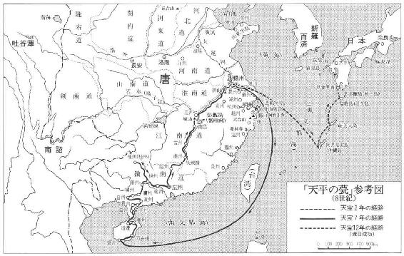
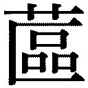

| 天平の甍（新潮文庫） | |
| 井上 靖 | |
| (1964) | |
この作品の全部あるいは一部を無断で複製・転載・配信・送信すること、内容を無断で改変・改竄することを禁止します。また、有償・無償にかかわらず第三者に譲渡することはできません。
○新潮社の電子書籍：「Shincho LIVE!（新潮ライブ！）」
○新潮社の書籍：「新潮社ホームページ」
井上 靖

天平の甍
朝廷で第九次遣唐使発遣のことが議せられたのは聖武天皇の天平四年（西紀七三二年）で、その年の八月十七日に、従四位上多治比広成が大使に、従五位下中臣名代が副使に任命され、そのほか大使、副使と共に遣唐使の四官と称ばれている判官、録事が選出された。判官は秦朝元以下四名、録事も四名である。そして翌九月には近江、丹波、播磨、安芸の四カ国に使節が派せられ、それぞれ一艘ずつの大船の建造が命じられた。
大使多治比広成は文武朝の左大臣嶋の第五子で、兄の県守は養老年間に遣唐押使として渡唐している。広成は下野守、迎新羅使の左副将軍、越前守等を歴任して、こんど新たに渡唐大使の大任を帯びたわけであった。副使の中臣名代は鎌足の弟垂目の孫で、島麻呂の子である。
この年のうちに、遣唐使の主要人員は決定され、正式の任命をみた。知乗船事、訳語、主神、医師、陰陽師、画師、新羅訳語、奄美訳語、卜部等の随員を初めとして、都匠、船工、鍛工、水手長、音声長、音声生、雑使、玉生、鋳生、細工生、船匠等の規定の乗組員から水手、射手の下級船員まで総員五百八十余名。
ただこの遣唐使派遣の最も重要な意味をなす留学生、留学僧の銓衡だけは、年内には決まらないで翌年に持ち越された。もともと時の政府が莫大な費用をかけ、多くの人命の危険をも顧みず、遣唐使を派遣するということの目的は、主として宗教的、文化的なものであって、政治的意図というものは、若しあったとしても問題にするに足らない微少なものであった。大陸や朝鮮半島の諸国の変遷興亡は、その時々に於て、いろいろな形でこの小さい島国をも揺すぶって来ていたが、それよりこの時期の日本が自らに課していた最も大きい問題は、近代国家成立への急ぎであった。中大兄皇子に依って律令国家としての第一歩を踏み出してからまだ九十年、仏教が伝来してから百八十年、政治も文化も強く大陸の影響を受けてはいたが、何もかもまだ混沌として固まってはいず、やっと外枠ができただけの状態で、先進国唐から吸収しなければならないものは多かった。人間の成長でいえば少年から青年への移行期であり、季節でいえばどこかに微かに春の近い気配は漂っているが、まだまだ大気の冷たい三月の初めといったところであろうか。
平城京はその経営に着手されてから二十三年、唐都長安を模したという南北各九条、東西各四坊の整然たる街衢は一応完成はしていたが、都の周辺には夥しい流民が屯ろし、興福寺、大安寺、元興寺、薬師寺、葛城寺、紀寺を初めとして四十余寺が建立されていたが、壮大な伽藍には空疎なものが漂い、経堂の中の経典の数も少かった。
年が改まると、全国から選ばれた精進潔斎の僧侶九人が、こんどの渡唐の成功を祈るために、香椎宮、宗像神社、阿蘇神社、国分寺、神宮寺等に送られ、五畿七道に於ては海神の怒りを和らげるための海竜王経が読誦され、伊勢神宮を初めとする畿内七道諸社には奉幣使が派遣された。
大安寺の僧普照、興福寺の僧栄叡の二人に、思いがけず留学僧として渡唐する話が持ち出されたのは、二月の初めであった。二人は突然、当時仏教界で最も勢力を持っているといわれていた元興寺の僧隆尊の許に呼び出されて、渡唐する意志の有無を訊ねられた。普照も栄叡も、隆尊と親しく言葉を交えたのはこの時が初めてであった。二人とも隆尊の華厳の講義を聞いたことはあったが、平生は傍へも近寄れぬ相手であった。
栄叡は大柄で、いつも固い感じのごつごつした体を少し折り曲げて猫背にしており、顔には不精髭を生やしていることが多く、一見すると四十歳近くに見えたが、まだ三十歳を過ぎたばかりであった。普照の方は栄叡よりずっと小柄で、貧弱な体を持ち、年齢も二つ程若かった。
栄叡は隆尊の話を聞くと、すぐ、よし行ってやるといった不遜とでも解されそうな態度で応諾したが、普照の方は返事をするまでに多少時間がかかった。普照は隆尊の顔を覗き込むようにして、一体唐へ渡って何を学んだらいいのかと訊ねた。普照らしい質問であった。何も生命を賭けてまでして唐土を踏まなくても、勉学はどこででもできる筈である。自分は今までにそれをして来ている。そのように、普照のひどく冷たい印象を人に与える二つの小さい眼は語っていた。これまで若手の秀才といえば、いつも普照の名が挙げられて来たが、秀才という言葉を普照は軽蔑していた。自分はただ殆ど一日中机から離れないでいるだけだと思った。
二人の全く型の異った若い僧侶に、隆尊は持前のおだやかな口調で説明した。日本ではまだ戒律が具わっていない。適当な伝戒の師を請じて、日本に戒律を施行したいと思っている。併し、伝戒の師を招くと一口にいっても、それは何年かの歳月を要する仕事である。招ぶなら学徳すぐれた人物を招ばなければならないし、そうした人物に渡日を承諾させることは容易なことではあるまい。併し、次の遣唐使が迎えに行くまでには十五、六年の歳月がある。その間には二人の力でそれが果せるだろう。
普照は伝戒の師を請ずるのにそれだけの長い歳月が必要だという隆尊の言葉に驚かされたが、伝戒の師の選択には、それだけこちらにも具わったものができていなければならないであろうし、またこちらで白羽の矢を立てた人物の招聘を実現するには、人と人との関係も何かとものを言って来るであろう。そうした立場を作るためにはどうしても十数年の唐土の生活が必要になって来る。そのようなことを隆尊は言っているのであろうと思った。この時、普照が入唐の話を承諾する気になったのは、十数年という長期に亘る唐土の生活が許されるということのためであった。もっと短期の還学僧としての入唐なら、そのために一つしかない生命を賭ける気にはならなかったが、それほど長期の入唐なら、一か八かの危険を冒して遣唐船に乗り込むことも強ち悪いことではないと思われた。
隆尊の許を辞した二人は、早春の陽が散っている興福寺の境内で語り合った。栄叡はさすがに多少昂奮している様子で、いつもより少し早口に喋った。彼はこんどのことは知太政官事舎人親王と隆尊との相談の結果持ち上がった話に違いないと見ていた。
課役を免れるために百姓は争って出家し、流亡していた。ここ何十年間かそうした社会現象を食いとめるために、幾十かの法律が次々に出されていたが、効果は一向に上がっていなかった。問題は百姓ばかりではなかった。僧尼の行儀の堕落もまた甚しく、為政者の悩みの種になっていた。僧尼令二十七条という僧尼の身分資格を規定した法令も出ているが、実際にはそんなものは無力でしかなかった。仏教に帰入した者の守るべき規範は何一つ定まっていず、比丘および比丘尼の受けるべき具足戒は三師七証（戒場に参会する十人の師僧）の不足で行われていない。目下のところでは仏徒は自誓受戒するか、三聚浄戒を受ける程度で放埒に流れ次第である。これらの仏徒を取り締まるのは、まず唐より傑れた戒師を迎えて、正式の授戒制度を布くことである。人為的な法律は無力であり、仏徒が信奉する釈迦の至上命令を以てこれに臨むほかはなかった。正しい戒儀を整えるのが、現在の日本の仏教界で一番必要であることは誰の眼にも明らかであった。こんどの遣唐使派遣の機に、二人の青年僧を渡唐させようとする舎人親王や隆尊の意図もここにあるわけであった。
「少くともわれわれの使命はわれわれ二人の生命を賭けるだけの価値はあるようだな」
栄叡は言ったが、普照の方は黙っていた。いつも、自分自身のことしか彼は頭の中になかった。戒師を招ぶことがどのような意味を持つかということにはあまり興味はなかった。それより十五、六年間に自分が学び得る経典の量の方が遥かに重要な問題であった。その経典の重さが普照には実際に感じられるような気がした。そしてそのことが普照の冷たい眼を多少いつもとは違った憑かれたようなものにしていた。
栄叡は美濃の人、氏族詳かならず、興福寺に住す。機捷神叡にして論望当り難し、瑜伽唯識を業となす。――渡唐前の栄叡については、『延暦僧録』に依って、これだけのことを知るのみである。同じように渡唐前の普照については、興福寺の僧であり、一に大安寺の僧だともいわれていたという甚だ頼りない短い記述だけが、われわれに残されている。併し、それでも普照の方は、『続日本紀』に「甲午、授正六位上白猪与呂志女従五位下、入唐学問僧普照之母也」という一条があって、彼の出生の一端におぼろげながら一つの照明が当てられている。即ち普照の母は白猪氏で、名は与呂志女、天平神護二年（西紀七六六年）二月八日に、正六位上から従五位下を賜っている。白猪氏の祖は百済の王辰爾の甥であり、その一族には外国関係のことに携わった者が多いことが知られている。
大使広成が拝朝して節刀を受けたのは閏三月二十六日であった。節刀は帰国後返還するもので、これを受けることは、準備がここに全く成って、今や渡唐大使として全権を委任されたということを意味し、それと同時に日和さえよければ待ったなしで解纜しなければならぬ立場に置かれることでもあった。
これに先立って、三月一日に広成は山上憶良を訪ねている。憶良は曾て大宝二年の第七次の遣唐使の一行に少録として参加しており、渡唐の経験者でもあり、広成の兄とも親しかったので、広成はそんな関係で挨拶に出向いたのであろう。憶良は三月三日広成に長歌と反歌二首を贈っている。
神代より 言ひ伝て来らく そらみつ 倭の国は 皇神の 厳しき国 言霊の 幸はふ国と 語り継ぎ 言ひ継がひけり 今の世の 人も悉 目の前に 見たり知りたり 人多に 満ちてはあれども 高光る 日の朝廷 神ながら 愛の盛りに 天の下 奏し給ひし 家の子と 撰び給ひて 勅旨 戴き持ちて 唐の 遠き境に 遣され 罷り坐せ 海原の 辺にも奥にも 神づまり 領き坐す 諸の 大御神たち 船舳に 導き申し 天地の 大御神たち 倭の 大国霊 ひさかたの 天の御空ゆ 天翔り 見渡し給ひ 事了り 還らむ日は またさらに 大御神たち 船舳に 御手うち懸けて 墨縄を 延へたる如く あちかをし 値嘉の岬より 大伴の 御津の浜辺に 直泊てに 御船は泊てむ 恙無く 幸く坐して 早帰りませ
大伴の御津の松原かき掃きて吾立ち待たむ早帰りませ
難波津に御船泊てぬと聞え来ば紐解き放けて立走りせむ
反歌のあとの方は、夫の留守を守る広成の室に贈ったものであった。
四月二日早暁、広成らは憶良の歌にある難波津へ向けて、奈良の都を発った。一行の大部分はすでに出航地難波津に集まっていて、この日奈良から発ったものは広成ら騎馬の一団三十名ばかりであった。普照、栄叡らもこの一団の中に居た。寺々からは海路平安を祈念する鐘が鳴り響いていて、暁の冷たい風も、漸く緑の濃さを増している山野の眺めも、一行の誰にも特別なものに思われた。
道は大和平野を突っ切って、真直ぐに北西へ伸びている。一行は王子を経て竜田山を越え、この日は国府で泊り、翌日国府を発って、午少し前に難波の旧都へはいった。ここは九年前の神亀元年から離宮の修営工事が始められ、それが未だに引き続いて行われていて、ところどころに廷臣たちの邸宅が新しく造築されつつあった。初夏の光が白っぽく幾つかの工事場に散っている地帯を抜けると、やがて商舗の立ち並ぶ繁華地区へはいった。一行は幾つかの橋を渡った。そして最後の橋を渡った時、急に潮の香を含んだ風が真向いから吹きつけて来るのを感じた。このあたりから左手の丘の中腹に難波館が見え、この方は建物の朱と青の色が鮮やかだが、続いて新羅館、高麗館、百済館といった今は名前ばかりの古い建物が見え始め、その丘の尽きる前方には蘆が一面に生い茂った港の一部が望まれた。
間もなく一行は港にはいった。曾て三韓との交通華やかだった当時の殷賑さは偲ぶべくもないが、それでも蘆の間からは、林のように立ち並んでいる何百という帆柱が見えた。港といっても、ここはもともと何本かの川の河口が一緒になった外海への出口で、潮と真水とがぶつかり合っている広い水域には、夥しい数の大小の島や洲が散らばり、そこに密生している蘆は一見港湾全部を埋めているように見えていた。ここに出入する船は、その蘆の生い茂っている島や洲の間を通るわけだが、船着場の方から見ていると、蘆の間を滑って来るものとしか見えない。蘆の間には点々とたくさんの澪標が立っており、その何本かには小さい鳥がとまっていた。その鳥の白さが、今日ここから遠く異境に旅立って行く人々の眼に滲みた。
船着場には異変が起きていた。切岸にはかなりの距離を措いて四艘の大船が繋がれ、見送人や見物人がその辺りに犇き合っていた。船着場の入口には縄張りがしてあり、見送りの家族の者だけがその内部へはいることを許されている。縄張りの中だけでも二千人程の人間が居るであろうか。女の多いのが目立っている。老婆も、若い女も、子供も居る。縄張りの外の見物人はもう少し多く、こちらには流人や乞食の姿も混じっている。時折、読経と祝詞の声がその船着場の混乱と騒擾の中から、急に大きく盛り上がっては聞えて来ていた。
旅人の宿りせむ野に霜ふらば吾が子羽ぐくめ天の鶴群。――という万葉集の巻の九の歌は、この時の遣唐船に一人子を送り込んだ母親の歌である。もう一つ巻八に笠朝臣金村がこの日の入唐使に贈った歌が載っている。波の上ゆ見ゆる小島の雲隠りあな息づかし相別れなば。――併し、これは夫を送る妻の歌で、笠金村が知人のために代作してやったものであろう。
大使広成ら三十人の、昨朝都を発って来た一団は、船着場の一角で公私の見送人たちとの挨拶をすませると、こんどはそれぞれ違った船に乗って旅立つ自分たちだけで互いに水盃をした。
四艘の船は、いずれも長さ十五丈、幅一丈余の大船で、百三、四十人の乗員ならそう窮屈ではなく収容できる大きさだったが、造った国が違うだけに、少しずつ形が異っていた。大使広成の乗る第一船は船の中央部が相当に広くなっており、副使中臣名代の乗る第二船はそれに較べるとずっと狭かった。それから船中に設けられてある屋形の恰好もその位置も異っていた。判官の乗り込む第三、第四の船は、これらの船だけが殆ど舷側をつけるように繋留されてあったが、船尾の形はまるで違っていた。第三船のそれは竜のおとし子宛らに大きく反り曲っていて、第四船よりも一間程高かった。
乗組員の誰にも、自分の乗る船が他よりいいか悪いかは判断できなかった。これはこれらの船の建造を受け持った造舶使長官にも次官にも判らなかったし、直接木材を刻んだ近江、丹波、播磨、安芸の四カ国の船大工たちにも見当がつかなかった。ただどの船も帆柱だけは船の中央部に付けられてあった。百済船の様式をとったもので、帆柱が船の中央部より外れたところにある唐の船とは違っていた。日本の船大工たちは漠然と昔から関係の深かった百済の船の方に信用を持っていたのであった。
夕方、四艘の大船は潮の満ちて来るのを待って難波津の波止場を離れた。岸を離れると、見送りの人々の眼には、船はどれもそのまま蘆の間に傾き沈んでしまいはしないかと思われる程重たげに見えた。どの船もそれぞれ百五十人近い人間と、それらの食糧と、滞在費に充てる物資と、衣料、医薬、雑貨の類と、それから唐の朝廷へ献ずる莫大な貢物とを満載していた。見送人のどよめきは船が岸を離れる時だけで、あとは船着場は寧ろひっそりとした表情を取った。四艘の船が全く港湾を出るには一刻ほどの時間がかかった。
四月三日難波津を発航した四船は武庫、大輪田泊、魚住泊、韓泊、檉生泊、多麻の浦、神島、備後長井浦、安芸風速浦、長門浦、周防国麻里布浦、熊毛浦、豊前分間浦等の内海の港々に、あるいは寄港し、あるいは碇泊して、その月の中頃に筑紫の大津浦に到着した。そしてこの本土に於ける最後の港で、四艘の船は順風を待つために何日かを過した。
そして愈々、広成の一行が大津浦を発航して外海へ乗り出したのは、節刀を受けてから約一月経った四月の終りであった。
大津浦からは唐に渡るには二つの航路があった。天智天皇の第五次遣唐船まではいつもここから壱岐、対馬に向い、更に南朝鮮の西海岸に沿って北上し、渤海湾口を横断、山東の莱州か登州のいずれかに上陸して、それから陸路を南下して洛陽より長安にはいっていた。併し、これは南朝鮮が日本の勢力範囲にあって初めてその安全が保証される航路で、新羅が半島を統一してからは、否応なしにほかの航路に依らなければならなくなっていた。第六次以後の三回はいつも大津浦を発つと西航して、壱岐海峡を過ぎ、肥前値嘉島に出て、そこから信風を得て一気に東支那海を横断、揚子江を中心とする揚州、蘇州の間のどこかへ漂着するという方法が採られていた。勿論広成らの場合もこの航路に依ろうとしていた。
普照と栄叡の乗り込んだ船は、判官秦朝元の第三船であった。同じこの船にもう二人の留学僧が乗っていた。一人は名を戒融、一人は玄朗といった。戒融は一人だけ発航当日に大津浦から乗り込んで来た筑紫の僧侶で、普照と同年配であったが、大柄な体のどこかに傲慢なものをつけていた。玄朗の方は二つ三つ若かった。玄朗は紀州の僧で、ここ一年程大安寺に来ていたということだったが、普照も栄叡もこの若い僧にこれまで会ったこともなく、またその名を聞いたこともなかった。容貌も整っていて、どことなく育ちのよさがその言動の中に感じられた。
船は筑紫の大津浦を出た最初の夜から、特に海上が荒れていたわけではなかったが、外海の大きい波浪に弄ばれて、木の葉のように揺れ動いた。船員を除いた殆ど全部の乗員がみな食物も喉を通らなくなり、ぐったりと死んだように横たわった。そしてそうした状態がその夜から何日も続いた。その中で普照だけは例外だった。初めの二日は人並みに苦しんだが、三日目には頭の痛みも胸のむかつきも取れ、正坐して船のかなり大きい動揺にも平気で身を任せていることができた。併し、他の三人の留学僧たちが、自分の傍で船暈に苦しんでいるのを朝から晩まで見ていることは、普照にとっても気持のいいことではなかった。
中でも栄叡が一番ひどく傷めつけられていた。いつも口を半開きにして、そこから苦しそうな小さい呻き声を吐きづめに吐いていた。栄叡の眉の濃い眼の鋭い顔は、またたく間に憔悴して、正面から眼を当てるのも気の毒な程だった。玄朗の方は死んだようになって、ものも言わなければ体も動かさなかった。
ある日、海上に夕闇が漂い始めようとする時刻であったが、普照は、ふいに一番向うの席に横たわっている戒融から声をかけられた。
「何を考えている？」
これが、何となく太々しい面構えと大入道のような感じの風貌を持った同僚からの、面と向って話しかけられた最初の言葉らしい言葉であった。乗船した時、姓名と生国を名乗り合っただけで、あとはお互いにすぐ船暈に取りつかれて、それぞれ孤独な闘いの中に身を置いていたので、言葉を交すような機会もないままに今まで過ぎていた。
普照は、仰向けに身を投げ出して眼玉だけこちらに向けている筑紫出身の僧の方に、
「何も考えていない」
と答えた。普照には初対面の時からこの大入道が、留学僧に選ばれる程の何ものかを持っている人物とは思えなかった。いかにも筑紫あたりの僧侶でも持ちそうな垢ぬけのしないものをその風姿に付けているのが感じられた。
「俺は考えている」
戒融は言った。
「何を考えているのだ」
「人間の苦しみというものは、結局は自分自身しか解らないということだな。そしてそれは自分が自分で処理するしか仕方がないものだ、それよりほかにどうすることもできないものだということだな。俺はいま苦しんでいる。俺ばかりではない。栄叡も玄朗もみな苦しんでいる。併し、お前はいま苦しんでいない。運のいいことに苦しみから脱け出してしまっている」
なんと厭なことを言う奴だろうと、普照は思った。言われた通り普照はいま自分が、きびしく考えれば、誰の苦しみにも同情していないことを思った。気の毒には思っているが、それをどうしようもないし、どうしてやろうという気持もなかった。それにしてもそれを指摘されることは愉快なことではなかった。すると、そういう普照の心を見透してでもいるように戒融は語を継いだ。
「気を悪くするな。俺はただ本当のことを言ったまでだ。俺とお前の立場が替っていれば、俺もまたお前と同じだ。人間とはそういうものだ」
そして戒融は、必ずしも普照に見せつけるためではなかったろうが、いきなり腹這いになると、もう一物もはいっていない胃の中から何ものかを吐瀉しようとした。そして、ああ、苦しい、と口に出して言った。
普照は玄朗という年若い僧侶とは、それでも時々口をきくことがあった。大抵船が烈しく揺れ始めた時だった。玄朗は自分の方からいつも口をきった。いかにも何か喋っていることで気を紛らせでもしているかのように、喋り出すと、その口調には一種の訴えともひとり言ともつかない、弱々しいが、併し、妙に熱っぽい調子があった。
「なに、これしき大丈夫だ。もう少しの辛抱だ。これで船が難破さえしなければ唐土へ着けるのだ。噂にきいている長安の都も、洛陽の都も見られる。そこを歩き、そこでものを考えることができる。大慈恩寺も、安国寺も、西明寺も、この眼で見ることができるのだ。そのどこかの寺で俺は学ぶことになるだろう。知るべきことはいっぱいある。読まなければならないものも山程ある。何もかもこの眼で見、この耳で聞く。広い唐土の全部から俺は吸収すべきものは吸収してしまう。もう少しだ。もう少しの辛抱だ」
聞いていると、次第にそれの持つ妙に物悲しいものが、こちらの胸に伝わって来た。併し、確かにその言葉は、誰もが胸の奥に懐いている素朴なものに触れていた。ただそれは他の者の場合、確とは判らないが、何となく口に出すのを憚られるようなものであった。そんな時玄朗の顔は真蒼だった。玄朗の喋るのを、いつも誰も取りあわないで聞いていた。勝手に喋らせておけといったところがあった。
併し、一度だけ戒融が聞きとがめて、そんな玄朗の言葉を遮ったことがあった。
「あまり夢みたいなことを言うな。船が無事に着くかどうかはまだ判っていないんだぞ」
止めを刺すような言い方だった。そんな時でも、栄叡の方は聞いているのかいないのか、終始黙って、眼を空間の一点に当てたままで、相変らず大きい息を口から吐き続けていた。
一同にとってまさに地獄の苦しみというべき船暈から、併し、順々に脱け出すことができた。普照は別として、玄朗、戒融、栄叡と年の若い方から二、三日ずつの間隔を置いて解放されて行った。船暈が収まると、熱っぽい唐土への憧憬を口走っていた玄朗の口は重くなり、一日中黙していることも珍しくなかった。一種説明し難い憂鬱がこの育ちのいい面差を持った青年僧を捉え始めていた。戒融は怠け癖がついたのか、船暈が癒っても寝てばかりいた。栄叡は一日中といってもいいほど法華経を誦していた。普照はそんな同僚たちを時折横眼で睨みながら、この航海中に上げてしまおうと思っている『四分律行事鈔』の第七巻を片時も膝の上から離さないでいた。
この四人の学問僧の乗っていた第三船は、大使広成の第一船に続いて航行しており、すぐあとには第四船が続いていた。副使中臣名代の第二船は殿りの筈であった。筑紫を出てから二十日ばかりの間は、前を行く第一船も、後の第四船も、かなり遠距離ではあったが、ずっとその船影を認めることができた。夜になると互いに何回となく燈火で連絡し合った。僚船の灯はいつも、お互いの間を埋めている波のためにある規則正しさで明滅して見えた。
二十一日目の夜、海上には深い靄が立ちこめ、そのため船は航行が困難となり、碇を降ろして一時停止することになった。その夜を最後として、以後第一船も第四船もその船影を認めることができなくなった。この頃から乗員には水三合、糒一合が一日の食糧として配給されることになった。
三十日目ぐらいから海水は濃い藍青色を呈し、油のような粘りを持った大きな波浪がゆったりと襲って来ては、船を山から谷へ、谷から山へと運んだ。船は進んでいるのか、後退しているのか、船員以外の者にはちょっと見当がつかなかった。海の色が藍青になってから逆風が吹く日が多くなり、その度に船は碇を降ろし、漂流することを避けて一日でも二日でも順風が来るまで、そこにそうしていた。
四十何日目に初めて烈しい暴風雨に見舞われた。それまでも何回か小さい暴風雨には襲われていたが、その時のような大きいのは初めてであった。暴風雨は午頃始まり翌日の午まで続いた。一時は海水が滝のように船内に落ちて来た。
その暴風雨の夜、普照は闇の中から戒融の声を聞いた。波と風の音の中からその声は聞えて来た。誰へ話しかけたのか、それだけの言葉では判らなかったが、普照はそれが自分に向けられたものであることを感じた。
「いま、何を考えている？」
戒融の声はそう言った。
「何も考えていない」
普照はいつか同じ質問をされた時答えたように答えた。普照は難船への恐怖に襲われていたが、戒融の問いに対してひどく腹立たしいものを感じた。戒融の人を食ったような太々しい顔つきも、ぬうっとした大きな体も、それがこちらを向いているのが、闇の中に見えるようであった。
「なんにもか？」
戒融は念を押して来た。そして、
「俺は考えている。死ぬのはごめんだということをな。犬死は厭だ。お前は厭じゃないのか。俺は厭だ。死ぬのはまっぴらだ。それからもう一つ、こんな全く同じ立場にあっても、人間は結局は自分だけだということを考えている。そうじゃないか」
波と風の音がそのあとの戒融の言葉を消したが、次に急に騒がしさの消えたひっそりした短い時間が来た時、恰もその刻を待っていて、その中に投げ込みでもするように、
「俺も考えている」
突然栄叡が言葉を発した。戒融ではなくて栄叡だった。
「こうしたことを、いままで多勢の日本人が経験して来たということを考えている。そして何百、何千人の人間が海の底に沈んで行ったのだ。無事に生きて国の土を踏んだ者の方が少いかも知れぬ。一国の宗教でも学問でも、何時の時代でもこうして育って来たのだ。たくさんの犠牲に依って育まれて来たのだ。幸いに死なないですんだらせいぜい勉強することだな」
それは明らかに戒融に対して投げられた言葉だった。それに対して戒融は何か叫んだが、その場はそれでおしまいになった。議論どころではない状態が、それから暁方まで続いたのである。
普照は栄叡が呶鳴った直後、先刻から恐らく生きた気持もなく恐怖と戦っているに違いない、玄朗の居るあたりの闇に眼を当てていた。普照には、身を踞めるようにして口も利けないでいる玄朗が、一番素直な、真実の姿であるように思われた。戒融の言葉にも、栄叡の言葉にも嘘偽りはなかったが、併し、玄朗の見栄も外聞も捨てきった身の投げ出し方が、いつもはそれに多少の反撥は覚えていたが、こうした場合には一番好感が持てた。
普照自身の心はこの時他の三人とは少し別のところにあった。いつも彼は何ものかと闘っていたので、特別違った状態に置かれているという思いはなかった。もう何年も、毎日のように色慾との陰惨な闘いがのべつに彼を捉えていた。ただ、現在はそれが死の恐怖にかわっているだけの話だった。そう普照は思っていた。
この暴風雨のあとは、船中はひたすら神仏への祈りに明け暮れた。住吉神社や、観音への祈願が行われた。栄叡は法華経を船の人たちに講義した。戒融は相変らず体を横たえていたが、普照と玄朗は身を起して傍でそれを聞いていた。所々間違っているところが普照には指摘できたが、黙ってそれを聞いていた。
第三船が大陸に近い小さい島々で順風を待つために徒らに日を重ねて、漸くにして蘇州へ漂着したのは八月であった。筑紫の大津浦を出てから実に三カ月間以上船は海上を漂っていたわけであった。他の三船も同じ八月に相前後して蘇州海岸に漂着した。
広成らが蘇州に漂着したことは、直ちに蘇州刺史銭惟正に依って中央に奏せられ、接待役として通事舎人韋景先が蘇州へやって来て一行を慰労した。それから一行のうちで許されたものだけが、大運河で汴州へ上陸、陸路洛陽に向うことになった。
大使広成らが洛陽にはいったのは翌天平六年、つまり、玄宗帝の開元二十二年の四月であった。蘇州へ漂着してから八カ月を経ている。一行が西都長安にはいらず、東都洛陽にはいったのは、玄宗帝がこの年洛陽に幸して、そのまま長安には帰らず、唐の朝廷は洛陽にあったためであった。
広成ら一行は唐廷が洛陽にあることに何といっても大きい失望を覚えたに違いない。これまでの遣唐使の一行はいずれも差し廻しの官船で一路長安に向っており、上都長楽駅に着くと、内使の出迎えを受け、ここで最初の饗応に与り、それから馬で長安にはいる。滞在中の宿舎四方館に旅の疲れを癒す暇もなく、宜化殿に於ける礼見、麟徳殿での謁見、内裏の賜宴、それから中使の使院に於ける豪華な宴会。――そうした長安の都に於ける華やかな行事の数々は、広成らも何回も耳に入れていた筈である。勿論洛陽に於ても、同様なことは行われたが、日本使節にしてみればやはり長安の晴れの舞台に自分を立たせ、そこで大唐の初夏の陽光を満喫したかったことであろう。
洛陽にはいった広成らは唐帝へ献上品として、銀大五百両、水織絁・美濃絁各二百疋、細絁・黄絁各三百疋、黄糸五百絇、細屯綿一千屯、別送綵帛二百疋、畳綿二百帖、紵布三十端、望陀布一百端、木綿一百帖、出火水精十顆、出火鉄十具、海石榴油六斗、甘葛汁六斗、金漆四斗、――こういったものを贈った。
一行の幹部たちが国使として四方館に迎えられ、そこで忙しい毎日を送っている頃、同じ洛陽にあって唐政府に委託された留学生や留学僧たちは、その勉学の目的と希望とを斟酌されて、それぞれ適当なところへ配されていた。普照、栄叡、戒融、玄朗の四人は大福先寺に入れられた。四人が大福先寺に預けられることになった動機は、普照が希望する寺としてここを申し出ていたためであった。普照はここに『飾宗義記』を著して、法礪の『四分律疏』を釈した高僧定賓がいることを知っていて、定賓について法を受けようと思っていた。こうしたことになると、普照の知識は遥かに他の三人の留学僧を凌いでいた。
大福先寺は則天武后の母楊氏の邸宅の跡にあって、上元二年（西紀六七五年）にここに太原寺が立ったが、後改めて魏国寺となり、天授二年（西紀六九一年）にまた大福先寺と改まっていた。境内も広く、塔も、伽藍も立派であり、坊舎も多かった。三階院には呉道子の画く地獄変があり、三門の両頭にも呉画があった。
日本の若い僧侶たちはこの寺にはいって間もなく、この寺が訳場としては大きい歴史を持っていることを知った。二十年程前に物故した義浄は『金光明最勝王経』等二十部一百十五巻、『勝光天子香王菩薩呪一切荘厳経』等四部六巻の翻経をここで行っていたし、現在九十幾つかの高寿を保っている善無畏が、ここに住して『大日経』を訳したのもほんの十年程前のことであった。そういうことを知ると、さすがに留学僧たちは身の緊まる思いを感じた。
留学僧の生活は比較的自由であった。普照らはまず当分会話を覚えることに専心した。戒融だけは、どこで覚えたのか、唐語を喋ることができた。洛陽の街衢はさすがに大唐の二つの都の一つだけあって、日本の留学僧たちの眼にはまばゆかった。奈良の都とは規模も違い、その殷賑さも比較にならなかった。周時代の王城の地でもあり、後漢、北魏、隋の都でもあり、それの持つ歴史の大きさも日本ではこれを求めることはできなかった。
四人の日本僧はそれぞれ違った坊舎の一室を与えられて、そこで生活をしていた。留学僧は絁四十疋、綿百屯、布八十端を出発の際下賜されて来ていた。併し、一応、唐の政府に引き渡されてからは、生活費はこの国から支給されることになっていたので、すぐ日本からの下賜品を金に換えなければならぬようなことはなかった。
大福先寺の生活が始まった四月から五月へかけて、普照と栄叡と玄朗の三人は、自由な時間は悉く都の名所仏蹟の見物に当てていた。眼に触れるすべてのものが驚愕と讃嘆の材料であった。三人の若い僧には日本という国も、奈良の都もひどく小さく貧しく思われた。戒融もまた四月から五月へかけては、普照たちと同じように洛陽の名所仏蹟を廻って歩いていたが、戒融だけは一緒にならず自分一人の行動を取っていた。
夏の陽ざしが漸く強くなった頃、普照は戒融とたまたま彼の宿所となっている坊舎の前で顔を合わせ、珍しく戒融から誘われて、彼の部屋へはいって行った。その時、戒融は、例の幾らか人を莫迦にしたような、いきなり相手に問いかける言い方で、普照に、唐へ来て、何を一番強く感じたかと訊いた。普照はまたかと思った。そして船の中でのように、よほど何も感じないと答えようかと思ったが、
「来てよかった。来てみなければ唐という国は判らないからな」
と、そんなことを素直な気持で口に出した。すると戒融は、なんだ、そんなことかといった顔をして、
「俺は唐へ来て初めて見たのは飢えている人間だ。お前も見たろう。蘇州へ上がってから、毎日のように飢えた難民ばかり見た。いやというほど見せつけられた」
それは戒融の言う通りであった。普照たちが唐の土を踏んだ前年は、夏前の旱魃と秋の霖雨のために、作物は実らず、ためにどこへ行っても飢えた人間が溢れていた。何十年にもない饑饉だということだった。
「あれだけの難民がいたら、日本なら大変なことになる。この国では雲が流れるように、黄河の水が流れるように、難民が流れている。まるで自然現象の一つのようじゃないか。経典の語義の一つ一つに引懸っている日本の坊主たちが、俺には莫迦に見えて来た。きっと仏陀の教えというものは、もっと悠々とした大きいものだと思うな。黄河の流れにも、雲の流れにも、あの難民の流れにも、結びついたものだと思うな」
そんなことを一種の熱情的な口調で話してから、
「俺はいつか、この唐土での生活に慣れたら自分の足でこの広大な土地を歩けるだけ歩いてみるつもりだ。僧衣をまとい、布施を受けながら、歩けるだけ歩くつもりだ」
そう戒融は言った。普照は戒融の大きな顔を見守りながら、戒融なら本当にそんなことをやりかねないと思った。
「併し、何か選んで勉強しなければならないだろう」
普照が言うと、
「机にかじりついていることばかりが勉強と思うのか」
戒融は極付けるように言った。併し、何を言われても、この頃はもう渡唐の船中に於けるような反感を、普照はこの男に感じていなかった。はっきりと指摘できるような形ではなかったが、少くとも、自分の持ってない何か特殊なものを、戒融が持っているのを感じていた。
「一体、お前らは何のために唐へ来たんだ。何をやるつもりなんだ」
戒融が訊いたので、普照は自分は腰を据えて律部を勉強するつもりでいる、それから日本へ優れた戒師を招ずることを託されて来ているので、自分の勉強をしながら、その地盤を作らなければならないと言った。
それを聞くと、戒融は、
「戒師なんて招ぶのは、そんな大変なことじゃない。大袈裟な言い方をするな。どんどん交渉して日本へ行って貰ったらいいじゃないか。道璿はどうだ？」
いきなりそんな言い方をした。そして道璿じゃいかんか、と重ねて訊いて、
「一流の高僧なんて、なかなか行ってくれるものか。それに高僧なんていわれる奴は大抵八十、九十の高齢だ。よぼよぼした体で大体あの船に乗れると思うのか。三日もしないうちにくたばってしまうだろう。何年かけたって事情は変らんよ。道璿でいいだろう。道璿に行って貰え」
普照もその道璿という律僧の名前を知っていたし、一、二度見かけたこともあった。年齢はまだ三十四、五歳であろうか。律に明るく、天台、華厳を学んで、日常のことすべて華厳の浄行品に依って行動していると噂されている人物だった。彼は一部の僧侶たちからは特別の尊敬の眼をもって見られていた。
戒融は道璿で我慢しておけと言わんばかりの言い方をしていたが、道璿にしてみたところで、そう簡単に日本へ渡ることを承諾してくれようとは思われなかった。そのことを普照が言うと、
「当ってみなければ行くか行かぬか判らんじゃないか。俺は道璿とは二、三度話したことがある。一度当ってみてやろう。なあに、行くよ。法のためだ」
最後の法のためだという言葉を、戒融は多少皮肉な口調で言った。それだけで道璿の話は打ち切られたが、普照はその話をさして真に受けて聞いてはいなかった。雲を掴むようなそんな話より、戒融がその前に話した流民の話の方が、いかにも戒融の話らしく、どこかに独自なものが閃いているのが感じられた。
それから二、三日して、栄叡と玄朗が訪ねて来た時、普照は戒融の真似をして、二人の友に、唐土を踏んでからいかなることを一番強く感じたかという質問を出してみた。すると、栄叡は端坐している胸を少し反らせるような恰好をして、やや昂然とした面持で、
「俺はこの国はいまが一番絶頂だなと思った。これが一番強いこの国の印象だ。花が今を盛りと咲き盛っている感じだ。学問も、政治も、文化も、何もかもこれから降り坂になって行くのではないか。いまのうちに、俺たちは貰えるだけのものを貰ってしまうんだな。たくさんの蜂が花の蜜にたかっているように、各国からの夥しい留学生たちが、いまこの国の二つの都にたかって蜜を吸っている。俺たちもその一人には違いないが」
そう言ってから、
「併し、それとは別だが、恐ろしく多勢の人間が生きているな。仏教とも、政治とも、学問とも無関係に、生きものの意志で、食って、寝て、生きているな」
と言った。戒融は「雲や黄河の流れのように」と言ったが、栄叡は「生きものの意志で」と言った。普照が、
「同じようなことを戒融が言っていた」
そう言いかけると、
「戒融!? 何があんな奴に見えるものか。あいつは奇矯な言葉を弄して、人を煙にまくだけだ。取得といえば、多少唐の言葉を話せるぐらいのものだ。併し、それさえも、どの程度か判ったものじゃない」
戒融の話になると、栄叡はいつも苦々しい顔をした。戒融も栄叡を嫌っていたが、栄叡も戒融を軽蔑していた。普照が次に玄朗の方に問いの答を促すと、玄朗の方は恨みでもあるような粘っこい口調で、
「日本へ帰りたいということだ。日本が一番いいということだ。日本でなければ、日本人は金輪際、本当に生きるといった生き方では生きることはできない。だれが何と言ったって、これだけは本当だよ」
それから彼は、遣唐使の一行が十一月に帰るというが、できるならば自分も帰りたいくらいだと言った。玄朗は洛陽にはいったばかりの初夏の間はそうでもなかったが、本格的な夏になると再び、最初渡唐の船中で彼を襲った懐郷病に取り憑かれて、すっかり元気を喪って憂鬱になっていた。この時も、普照は戒融よりも、栄叡よりも、玄朗の泣きごとの方にむしろ真実があると思った。玄朗に言われて初めて気づいたのだが、普照は自分の心にもまた、入唐して一歳にもならないのに既に故国への思慕が頭を擡げていることを知った。
普照はこの席で、この間戒融が話していた道璿のことを単なる話として持ち出した。すると、栄叡は、
「道璿という人はちゃんとした人で、若手では一流ということを聞いている。若し行ってくれれば、それは有難いが、併し、そう簡単に引き受けようとも思われないし、簡単に、持ちかけられる話でもないからな」
栄叡もまた普照と同じように戒融の話の方は真に受けてはいなかった。
ところが、それから三、四日して、普照は戒融の訪問を受けた。戒融は部屋へはいって来ると、立ったままで、いきなり、
「行くそうだ」
と、一言言った。
「交渉だけはしてやった。あとは知らん。若し招ぶ意志があるなら、改めて正式に交渉してみたらいい。簡単だが略歴をここに書いておいた」
それから彼は紙片を普照に手渡すと、直ぐ部屋を出て行った。紙片には、「道璿、許州の人、三十三歳、俗姓、衛氏、春秋の衛の霊公の後、大福先寺の信算の弟子、また華厳寺の普寂にも学ぶ」と、少し癖のある達筆で認められてあった。普照が戒融の筆蹟を見たのはこの時が初めてであった。
九月になると、遣唐使広成らの一行の帰国の時期が十一月と決定した。この頃から、普照らは、何年か前に入唐してそれぞれ学業の研鑽を終え、こんどの船で故国へ帰る筈になっている人々に会う機会が多くなった。
最初に会ったのは玄昉である。玄昉のことは普照たちも日本にいる時から聞き知っていた。竜門寺の義淵に就いて唯識を学び、七上足の一人と称せられたほど既に渡唐前から頭角を現わし、霊亀二年に入唐、爾来今日まで足かけ十九年唐土にあった人物である。その間に濮陽の智周に就いて法相を学び、玄宗にその学才を愛され、位三品に准ぜられ、紫の袈裟を賜っていた。
玄昉が二人の唐僧と一緒に、大福先寺へやって来た時、四人の日本の留学僧は自分たちの大先輩として玄昉を迎えた。玄昉が大福先寺を訪ねたのは、自分がこんど故国へ去るので、最後の見納めというつもりでこの洛陽の由緒ある寺を訪ねたものと思われた。普照は、日本僧で紫の袈裟を賜ったのは彼ただ一人だという、眉の太いがっちりした体格の五十前後の学僧の顔を、ある感動をもって眺めた。
玄昉は日本から来たばかりの若い僧侶たちに、これから何を学ぶかを一人一人に向って訊ね、しっかり勉強するように言うと、あとは寺の境内を一巡してある落ち着かない慌しい印象を残して帰って行った。一陣の強い風がさっと吹いて来て、忽ちにして通り過ぎて行ったような印象であった。普照は同じ血を持った曾ては留学生であり、いまは高名な僧である玄昉から、留学中の注意とか勉学に対する指示とかを受けたいと思っていたが、それを切り出す暇は与えられなかった。
彼が帰って行ってから、栄叡、玄朗、戒融、普照の四人は、久しぶりに一緒になって、いま自分たちの眼の前に現われてすぐ立ち去って行った、自分たちの先輩について話し合った。みんな一様に多少の昂奮をその面に現わしていた。普照は玄昉が帰国した夜、奈良のどこかの寺で、堂内に溢れる僧侶たちを前にして性相の宗義を講述している姿が眼に浮かぶようだった。ただ普照には、玄昉の武人のような太い眉と、しっかりと坐っている眼と、そして同胞に会った懐しさなど微塵も示さない突き放した態度と、そしてまた学匠らしからぬ慌しさが気になった。そんなことを普照が口に出すと、栄叡は、玄昉のそういうところが豪いのだと言った。なまじっか、同胞などといってすぐ親愛の情を示したりしないそうしたところがあるからこそ、玄昉は唐土に於ても学僧として名をなし得たのだと言った。
玄朗は、玄昉が日本へ持ち帰る『経論章疏』は五千巻だそうだ、とどこから聞いて来たのか、そんなことをやはり昂奮した面持で言った。
三人の話を黙って聞いていた戒融は、最後に口を開いた。
「玄昉は行基と共に義淵の門だ。年齢も同じくらいだろう。玄昉は入唐して濮陽の寺にはいった。行基は日本で庶民の中にはいった。玄昉は法相を学んだ。行基は病者に薬を与え、悩める者には祈祷を行った。橋がないところには橋を設けた。街頭に於て道を説いた。玄昉は異国に於て法相を学び、その奥義を究め、学才群を抜いてその国の天子から紫の袈裟を貰った。行基は乞食と病人と悩める者の先頭に立ち、町から町へ、村から村へと説法して歩いた」
ここで、戒融は知らず知らずの中に昂奮して喋っていた言葉を切った。妙にその戒融の口調に気押されたような気持で他の者は黙っていた。すると、急に戒融は照れたように笑って、
「というわけだ。どちらが豪いか、それは知らん」
それだけ言うと、戒融は普照たちに背を見せ、そのまま歩き出した。
玄昉に会って何日かしてから、普照はこんどは大使広成らの宿所である四方館の一室で、下道真備と会った。この時は普照一人だけであった。真備は玄昉より一年あとの養老元年、第八次遣唐船に依って阿倍仲麻呂らと共に入唐した留学生で、専攻は経史であったが、陰陽、歴算、天文の諸学を研鑽して、玄昉に劣らず盛名を馳せている学徒であった。
真備は二十四歳で入唐して、現在は四十一歳になっていた。普照には、真備は背の低い、穏やかな風貌を持った平凡な人物に見えた。強いて普通の人間と違っているところを探せば、長い唐土の生活が、彼を日本人より寧ろ唐人に近い印象にしていることであった。皮膚の色も唐人のそれなら、眼も亦鷹揚な唐人そのままの眼であった。
真備はその時、自分が故国へ持ち帰ろうとしている将来品の目録を遣唐使の一行に報告したあとで、その荷作りと運搬のことを係りと打ち合わせているところであった。彼はゆっくりと将来品の名称を一つ一つ口に出して言い、それを相手に書き取らせ、そのあとで自分が覗き込んでは、それが間違っていないかどうかを確かめていた。その同じ部屋に普照が居ることなど、殆ど意識していないかのようであった。
真備の将来品は、種々多様なものに亘っていた。その量もどのくらいのものか、普照には見当がつかなかったが、相当厖大なものであろうと思われた。『唐礼』百三十巻、『大衍暦経』一巻、『大衍暦立成』十二巻、『楽書要録』十巻、銅律管一部、測影鉄尺一枚、絃纏漆角弓一張、馬上飲水漆角弓一張、射甲箭二十隻、露面漆四節角弓一張、平射箭十隻――等々。
この真備と一緒に入唐して、現在は唐の官吏になっている阿倍仲麻呂の帰朝の噂も一時あったが、それはいつか立消えになっていた。仲麻呂は現在官左補闕となっていた。補闕の官は門下省に属し、供奉、諷諫、扈従、乗輿を掌る役がらである。仲麻呂も勿論、その職掌上洛陽に居る筈であったが、普照たちは、この留学生としては毛色の変った道を歩いた先輩には会っていなかった。
この頃、普照は同じこの大福先寺に最近一人の日本の留学僧が居るという噂を耳にした。これを聞いた翌日、普照は何かの話の序でにこのことを玄朗に伝えた。すると、それから一刻ほどしてどこで調べて来たのか、玄朗はやって来ると、その日本の僧が名を景雲と言い、今から三十年前単独で入唐し、三論と法相を学んでいたが、こんど遣唐船の帰国に便乗して日本へ帰るのだということを報せた。
「会ってみようか」
と、玄朗は言った。日本人と聞くと、玄朗はたれにでも会わずにはいられないもののようであった。普照も、いかなる人物か知らないが、その僧から三十年間の唐土に於ける生活の体験を聞いておくことも無駄ではあるまいと思った。
景雲は小さい寺の一室に乗船するまでの日を過していた。二人が訪ねて行くと景雲はその柔和な顔を僅かにほころばせて、隅にあった椅子を与えた。髪に白いものが混じり、一見すると六十歳近くに見えたが、皮膚はつやつやしていて老人のそれのようではなかった。健康を害していると言っていたが、それらしい体の弱りも見えず、勉学による苦渋の皺もその顔には見られなかった。
「わたしは三十年唐に遊んだが、たいして面白いことにも出逢わなかった。こんなことなら、日本にいてもさして変りはなかったろう。日本の田舎に住んでいた方がましだったかも知れない」
そんなことを、別に卑下するでもなく低い口調で語った。三論と法相を学ぶために入唐したと聞いていたが、話題がそうしたことに近づくことを、この人物がつとめて避けていることが、普照には感じられた。
「持ち帰られるものは？」
思いきって普照が訊ねると、
「この身一つです」
老人は言った。老残の身を、唐土から日本へ運ぶだけが、現在の景雲の仕事らしかった。
「貴方のように長く唐土に居られた方は他に居ないでしょうね」
普照が言うと、
「そうたくさんはないでしょうな。併し、居ても大抵なんとかものになって日本へ帰って行く。なんにもならんのはわたしぐらいのものでしょう」
景雲は言いかけて思い出したように、
「そう、一人あった。業行が居る。彼もやはり三十年近く居るだろう」
と言った。
「どんな人です」
「やはり法相の坊主ですよ。こんど一緒に帰国することを勧めたが、あまり帰りたくもないらしい。彼にもとうとう陽が当らなかった！」
幾らか感慨深そうに景雲は言ったが、その最後の言葉は二人にはよく理解できなかった。
普照と玄朗は間もなくそこを辞した。景雲の宿舎を出ると、二人は同時にひどくうそ寒いものを感じた。留学生でも留学僧でもなく、本人が自分の意志で入唐したのだから、景雲の場合、唐に居る間をどのように過そうとそれは勝手な筈であったが、同じ僧服を纏っている身として、経典一つ持ち帰ろうという意志を持たない景雲という人物は、やはり若い留学僧の眼には哀れに愚かに見えた。
それから四、五日後の夕刻、玄朗がやって来て、
「行って来たよ。この方はちょっと変っている。一回会っておいたらよかろう」
と言った。訊いてみると、玄朗は景雲から聞いた業行という在唐二十何年かの僧侶のところへ行って来たということであった。兎に角変っている、どんなに変っているかは行って会ってみなければ口では説明ができない、そう玄朗は言った。その同じ業行の話を、普照は二、三日後栄叡の口からも聞いた。
「二十何年か唐にいて、彼の知っているところといえば幾つかの寺しかない。寺を渡り歩いて経論を写している。どこも見もしなければ、誰にも会っていない。併し、筆写本の数だけは厖大なものらしい」
「どんな人間なんだ」
「俺にも判らん。豪いのかもしらんが、莫迦かもしらん」
栄叡は言った。普照は、玄朗にも、栄叡にも奇怪な人物として映じているらしいその業行という僧侶を、一度訪ねて行ってみようと思った。妙にその人物が、二人の話から気になった。
秋になってからは普照は日本に居た時と同じように一刻を惜しんで机に向っていた。船の中では上げきれなかった『四分律行事鈔』十二巻を上げ、法礪の『四分律疏』にかかろうとしている時であった。業行に会いに行く時間も惜しまれたが、普照はこんどの遣唐船で帰国するかも知れぬ業行に早く会っておかなければと思い、ある日午を少し廻ったころ、普照が初めて耳にする郊外の小さい寺へ出かけて行った。
業行は陽の当らぬ北向きの小さい部屋で机に向って、筆を執っていた。そこへはいって行った普照には、その部屋がひどく冷たい陰惨なものに感じられた。併し、彼の前に坐って改めて辺りを見廻してみると、別に部屋そのものは特殊なものではなかった。北向きで陽は当らなかったが、特別暗くも陰惨でもなかった。部屋には古文書か経巻か判らないが、紐で縛った反古の束がいっぱい乱雑に置かれてあった。そしてその中へ小さい坐り机を置いて、業行は今までそうしていたと思われるように、そこに端坐して、顔だけを訪問者の方へ上げていた。
五十歳近いであろうか。小柄で、脆弱な体がそのまま老い込んでいたので、年齢のほどは確とは判らなかった。風采はひどく上がらなかった。
「この間来られた、何といいましたかな、あの方のお連れですか」
業行はぼそっとした口調で言った。秋の初めではあり、まだ寒さが感じられる季節ではなかったが、彼は坐っている両膝の下に左右から手を差し込んで、体を細かく震わせていた。
「こんどお帰りになるんですか」
普照が訊くと、
「いやあ」
と、業行は曖昧な言葉を低く口から出した。普照は相手が何とかあとを続けるものとばかり思っていたが、彼の口からはそれっきりなんの言葉も出て来なかった。
話の接穂のない感じだった。普照が帰国することになっている何人かの人たちの名を口にすると、その度に業行は眼をちょっと普照の方へ向けたが、別にそれに言葉をさし挟むわけでもなく、微かにその顔に羞恥とでもいいたい表情を見せるだけだった。
「お会いになってますか」
普照は何人かの名を挙げたが、彼は、
「いやあ」
と、いつも例の曖昧な言葉を発した。誰とも会っている風ではなかった。仲麻呂や玄昉や真備に会っていないことはいいとして、果してその名さえ知っているかどうか怪しいものであった。誰の名を言っても、羞恥と受け取れるような表情を示すので、初め普照は、自分の学の成らないのを恥じているのかと思ったが、やがて全く相手の表情がそうしたこととは無関係なことを知った。業行は自分に全く無関心なことを話されるので、その応対に戸惑っているのに違いないのであった。
業行の顔は、普照が唐土へ来て見る一番唐土とは無関係な顔であった。業行は全く日本人の顔をしていた。顔ばかりでなく体も小さくて貧弱で、日本の到るところで見る百姓の体つきであった。普照は自分の方で問いかけない限り、相手が言葉を発するということはなかったので、次第に自分が何かひどくこの人物を苛めて、困らせているのではないかといった気持に襲われて来るのを感じた。
「長安にもいらしったんですね」
「居ました」
「何年ぐらい？」
「そうですな。五年、いや、何回にもきれぎれに行ってますから、全部併せると、七、八年になりますか」
「洛陽へはいつ来られました？」
「去年です」
そう言ったが、
「勿論、前にも何回か来ています。全部併せると、四年ですか、五年ですか」
業行は言った。
「何をやっておられます」
「これです」
業行は机の上の方へ顎でしゃくるようにして、
「まだ、なかなかです。始めたのが遅かったんです。自分で勉強しようと思って何年か潰してしまったのが失敗でした。自分が判らなかったんです。自分が幾ら勉強しても、たいしたことはないと早く判ればよかったんですが、それが遅かった。経典でも経疏でも、いま日本で一番必要なのは、一字の間違いもなく写されたものだと思うんです。いまでも随分いい加減なものが将来されているんでしょう」
この時だけ、業行は早口ではあったが、自分の意見らしいものを言葉として口から出した。その間も貧乏ゆすりは相変らず続いていた。
多治比広成らの第九次遣唐使の一行が、帰国の途に就くために洛陽の都を発ったのは九月の中頃であった。一行は洛陽より蘇州に赴き、蘇州に於て四船に分乗した。十月の終りであった。
第一船の大使広成の船には、僧玄昉、下道真備の二人が乗った。この二人の帰国は、前から決まっていたことであったが、一時彼らと共に帰国の噂があって、いつとはなしに立消えとなった阿倍仲麻呂はやはり唐土に留まることになったのであった。玄昉、真備は唐土に於ていかに秀才の誉高いとはいえ、留学僧、留学生の身の上であったが、仲麻呂の方は唐朝の官吏であり、しかも玄宗の寵臣であったので、その進退は自由にならなかったのである。仲麻呂は故国の両親が老いたことを理由にして帰国を上奏したが、ついに許されなかった。「義を慕うて名空しくあり。忠を愉しんで孝まったからず。恩を報ゆるの日あるなし。国に帰るはいつの年とか定めむ」という『古今和歌集目録』に収められてある詩は、仲麻呂のこの時に於ける述懐である。
副使中臣名代の第二船には雑多な人物が乗った。普照、栄叡の乞いを容れて渡日する道璿もこの船であったし、学問僧の理鏡や、理鏡に伴われて渡日する婆羅門僧菩提僊那、林邑国（安南）の僧仏哲、それから唐人皇甫東朝、袁晋卿、波斯人李密翳ら賑やかな顔触れであった。異国人では菩提僊那の三十一歳が最年長で、渡日後帰化して唐楽を奏して知られた袁晋卿が最年少で十八歳であった。在唐何年かを無為に過した僧景雲は判官平群広成の第三船に便乗した。
時を同じくして蘇州を発したこれら四船の消息の第一報が、唐土に留まった若い留学僧たちのところへ伝えられて来たのは、翌開元二十三年（天平七年）の上元（一月十五日）の張燈の夜であった。この国では都会でも田舎でも毎年一月十五日の節句の前後数日、夜になるとどこの家でも門口に燈籠を連ね、人々は夜を徹して街に出て嬉遊する慣わしだった。この期間洛陽の街衢も毎夜のように燈火で埋まった。軒に夥しい燈籠を吊している家もあれば、巨大な燈架や山棚を作って、そこへ燈籠を懸け並べている家もあった。街の辻々には炬火が焚かれ、そしてその真昼のような明るい火影の中を人々は練り歩き、歌い、踊った。
その上元の当夜、普照は坊舎の自室で栄叡、玄朗の二人を待っていた。夜が更けてから三人で連れ立って街の賑わいを見る約束だった。八時頃玄朗がやって来、半刻ほど遅れて栄叡がやって来たが、栄叡は二人の顔を見るとすぐ、去年十月蘇州を発った四船は、海に浮かぶと間もなく暴風雨に見舞われ、そのうちの一艘が越州（浙江省）に漂着し、再び日本へ向けて出帆したという報がはいったことを告げた。
「その越州に漂着した船がどの船か判らないが、無事に日本に着くとすれば、まあその一船ぐらいだろう。その船に乗っていた者たちの話では、他の三船は恐らく難破を免れていないだろうということだったそうだ」
栄叡はこの噂を、ここへ出かけて来るほんの一刻ほど前に、揚州より来た僧侶から聞いたということであった。そんなことを語る栄叡の顔も暗かったが、それを聞いている普照、玄朗の顔も暗かった。
三人は暗い気持を持って祝祭で賑わっている異国の街へ出た。平日は早くから鎖されている延福坊の巷門もその夜は開かれていた。運渠を渡り、永泰坊の築地に沿って歩いて行く。南市に近づくと、夜空は赤く焼けただれていた。やがて三人は群集の乱舞している明るい街へはいって行った。普照は上元張燈とか元宵観燈とかいわれているこの賑やかな巷の行事が、いかなるものであるかを知るために二、三の書物を繙いていた。そしてその中にあった「燈樹千光かがやき、花焔七枝開く」という煬帝の詩の一句を、雑踏の中を歩きながら思い出していた。この世ならぬ華麗な祝祭の街は、まさに燈樹千光かがやき、花焔七枝開くの形容がふさわしかったが、その言葉も、またその言葉で形容されている巷の賑わいも、次第に普照には空虚な淋しいものに感じられて来た。
半刻ほど南市の賑わいを見て、三人は積善坊付近の比較的静かな暗い一画へと脱け出した。三人は歩きながら殆ど話をしていなかったが、暗いところへ来ると、栄叡はずっとそのことを考えていたのか、四船のうち一船でも日本へ着けば、それでいいとしなければならぬ、四船とも無事に帰国するということはよほどの天佑がない限り望めないことだと、そんなことをぽつんと言った。そして、
「玄昉、真備の乗った第一船に着いて貰う方がいいか、あるいは道璿の乗った第二船に着いて貰う方がいいか」
その言葉には、玄昉や真備が帰国後果すであろう文化的役割と、道璿のそれとを秤に掛け、その重さを計っているようなところがあった。普照はこうした栄叡の考え方になんとなく同調できないものを感じて黙っていた。
すると、玄朗は玄朗で、彼もまたずっとそのことを考えていたとでもいった風に、自分はこんどの一行とできることなら一緒に帰りたかった、そしてよほど健康を理由にその運動をしようかと思ったが、やっとのことで思いとどまった、若し行をともにしていたら生命はなかったかも知れない、そんなことを少し陰にこもった口調で話し、
「われわれの場合だって、無事に帰国できるとは決まっていないんだ。帰国できるかも知れないし、できないかも知れない。われわれはいま海の底へ沈めてしまうだけのために、いたずらに知識を掻き集めているのかも知れない」
玄朗は言った。普照には、今から何年先のことか判らない自分たちの帰国のことを案じている、そんな玄朗が女々しく感じられた。すると栄叡も玄朗の言葉に同じことを感じたのか、
「三人共別々の船に乗ればいいではないか。そしてどれか一艘が着けばいいのだ」
栄叡は言った。幾らか意地の悪い言い方だった。それで会話は途切れた。
三人はいつか再び長夏門街の燈火の光のただ中へはいっていた。前でも背後でも群集は押し合っており、喚声と、叫声と、金属音を混じえた歌舞の楽の音が四方から三人を包んでいた。時々火の粉が辺りに散った。そうした中を栄叡は上体を真直ぐにして昂然と歩いており、燈火の光で見ると、その顔はむしろ青白く見えた。玄朗は少し遅れて雑踏の中を四方から群集に押されて歩いていた。この方は顔は赤く見えた。普照は時々、冷たい眼を光らせては燈火に赤くただれている夜空を仰いだ。彼には大使広成や副使名代のことも、そして玄昉や真備のことも、また道璿のことも、勿論気にかからないのではなかったが、それより無為に唐で半生を過して、身一つで故国へ帰って行こうとしていた、ただ一度だけ会ったことのある景雲の老いた姿が、妙に執拗に眼に浮かんで来ていた。
大使広成らの第一船が蘇州を出てから一度越州に漂着、再び発して十一月二十日辛うじて多禰島に着いたという報が洛陽に伝えられて来たのは、上元の日から一カ月ほど経った二月の中ごろであった。
そしてそれと前後して、副使中臣名代の第二船が南海に漂着、全員生命だけは全うしたという噂がはいったが、それから暫くすると、その噂を裏書きするように名代と、彼の一行の中の何人かが再び洛陽の街に姿を現わした。普照と栄叡は名代に会って、その遭難を見舞った。道璿は他の多くの者と一緒に出航地蘇州に待機しているということで、洛陽には上って来ていなかった。
そしてその年の閏十一月、そろそろ冬の寒さがきびしくなる頃に、名代らは再び帰国の途に就くために洛陽を出発した。この時玄宗は張九齢をして『日本国王に勅する書』を章せしめ、名代に携行させた。
丁度この名代らが洛陽を去る直前に、こんどは判官平群広成の第三船の消息が広州都督に依って報ぜられて来た。広成らは遠く林邑国に流され、その大部分は土人に殺され、生存者は僅か広成ら四人であるということであった。玄宗はすぐ安南都護に生存者を救うことを命じた。この第三船の報を耳にした時、普照と玄朗は景雲のことを語り合った。生存者四名の中に、あの老いた僧侶がはいっていようとは、普照にも玄朗にも思えなかった。
翌開元二十四年の春、唐土へ来て二年余の歳月を送っている日本の留学僧たちにとっては、特筆すべき事件が二つあった。一つは栄叡、普照、玄朗、戒融の四人が大福先寺の定賓に依って具足戒を受けたことであり、一つは受戒後間もなく戒融が出奔したことである。
戒融は同じ大福先寺に居ながら、他の三人の日本の留学僧とはあまり頻繁には往来していなかった。三人の中ではまだしも普照が一番戒融とは親しかった。一カ月に一回とか二カ月に一回とかの割で、思い出したようにお互いがお互いの坊舎を訪ねていた。
戒融が訪ねて来る時は普照はいつも机に向っていた。反対に普照が訪ねて行くと、戒融の方は自分の部屋に必ずたれか訪問者を持っていた。訪問者の顔触れは種々雑多で、唐人以外に、婆羅門僧の居ることもあれば、また時には林邑国の僧や、新羅の僧の居ることもあった。恐らく片言であるに違いないと思われたが、戒融はそれでも兎に角、そうしたいろいろな風貌を持っている異国の僧たちと談笑していた。
立春から半月程過ぎた頃、久しぶりに普照のところを訪ねて来た戒融は、例の人を食った言い方で、近く大福先寺を脱け出して托鉢の旅に出るつもりだと語った。それを聞いて普照はさして驚きはしなかった。いつかそうしたことを戒融は言い出すのではないかと思っていた。普照は別にそれを留めることはしないで、托鉢の旅といっても、一体どこを目指して行くのかと訊いた。すると戒融は、どこへ行くという当はない、併し、たれでも行くように結局は五台山へでも行く以外仕方ないだろう、そしてそこから天竜山へ行き、そのあとは方向をかえて廬山へでも行くことになろうかと答えた。他人事のような言い方だった。
「廬山のあとは、広い唐土を歩き廻ってみる。何かにぶつかるだろうと思うのだ」
「何かとは何だ？」
普照が訊くと、
「それは自分にも判らない。だが、この国には何かがある。この広い国を経廻っているうちにその何かを見つけ出すだろう。歩いてみなければ判らないことだ」
広い唐土を歩くというそのことに、現在の戒融の心は強く捉えられているようであった。普照はいかに広大な土地であるとはいえ、その中に何かがあろうとは信じられなかった。何かがあるとすれば、それはまだ自分などの知らない仏典の中にあるだろうと思った。新しい経典は続々印度からこの国へも持ち込まれつつあった。経典の林の方が、普照には唐土よりむしろ広大に涯しなく思えた。
それから四、五日の後、普照は托鉢姿の戒融を建春門に送った。早春の陽を浴びて伊水の水は温み、河畔の柳は生暖かい風にゆったりと揺れ動いていた。漸く李花の綻びようとする季節で、行楽の人々の姿も幾組か辺りに見受けられた。
戒融の出奔はうるさくは咎められなかった。布施を受けながら寺から寺へと歩き廻っている僧侶たちは夥しい数に上っており、戒融の場合、唐朝からの衣服や食糧の支給を受ける資格を自ら放棄したことに問題はあったが、事件は幸い表立たないで、うやむやのうちに葬り去られてしまった。ただ、栄叡だけは、そうした戒融の留学生としての立場を弁えぬ行動を、許すべからざることとして非難した。
春から夏へかけて普照は三、四回、写経に没頭している業行を郊外の寺へ訪ねて行った。
最初の時、普照は恐らく景雲を見舞ったであろう悲運について語ったが、写経に身も心も奪られている五十近い僧は、その時だけ顔を上げて少し遠い眼をした。そしてすぐまた無関心な表情に返った。景雲の悲運について彼はついにいかなる言葉も口から出さなかった。勿論景雲を尊敬しよう筈はなく、といって軽蔑している風でもなかったが、普照が不気味に思ったほどのみごとな無関心ぶりであった。
その時業行の机の上には『虚空蔵求聞持法』と書かれた経巻の写本が載っていた。それがいかなる経典か普照は知らなかった。普照は初めてこの人物と会ってから今日までに何回かここを訪ねていたが、いつもその机の上で写している経典の名は耳にしたことのないものが多かった。業行が所持している経巻類は夥しい数量に上っていたが、その殆ど総てが、二十三年前の先天二年に、長安の薦福寺に於て示寂した高僧義浄の訳出した経典類の転写であった。
義浄は律部に力を注ぎ、律範を講じて律の弘布に務めた僧だったので、従ってその訳経の仕事も律関係のものが多かった。そんなわけで普照は時折業行のところへ、自分の求める律関係の経典のことを訊ねに行った。業行の写したものを借りて来ることもあれば、その経典の所在やその内容について教えて貰うこともあった。
業行はいつも机に向っていた。それがこの世に生を享けている自分の本来の在り方ででもあるかの如く、義浄の訳出した経巻類ばかりを写していた。三回目に普照が業行を訪ねた時は、彼は『大眦盧遮那成仏神変加持経』の写しを机の上に拡げて、それと全く同じような書体で、それを写していた。業行の書体はいつも彼が原本としているものの字に似ていた。わざわざ似せて書いているとしか思われなかった。こんなところから推すと、業行は自分自身のものを持っていない人物であるかのようにも思われたが、併し、明けても暮れても筆を執ったまま机の前から離れない業行の、それはただ一つのひそかな慰楽のようなものであるかも知れなかった。
春訪ねて来た時もそうであったが、この時も、普照には業行がいま写している経典がいかなるものか想像がつかなかった。普照がそのことを口に出すと、業行は、この春から取りかかっているものは義浄のものではなく、主として去年九十九歳の高齢で他界した善無畏が訳出した秘密部の経軌であると、例のぼそぼそした口調で語った。そして、
「この前お出での時は確か『虚空蔵求聞持法』だったのでしょう。二十年ぐらい前、善無畏が長安の菩提院で訳したものです。いまここにあるものは先年大福先寺で訳した『大日経』で、密教の教理はみなここに説かれてあります。まだほかにはあまり写されていない筈です」
業行は言った。業行は業行なりに、特殊な知己を持っているらしく、そうした経典類の入手の手蔓には普照などの想像できぬものがあった。業行は義浄の訳した経巻を写すことを自分の本来の使命としていたが、義浄訳のものが手にはいらない時は、いまのように他のものをも手がけているのであった。
普照は時たましか業行を訪ねなかったが、業行と対い合って坐っていることは好きだった。初めて彼に会った時は陰気臭い感じだったが、度々会っているうちに、そうしたものは感じられなくなっていた。ただいつも貧乏ゆすりしている彼を見ることだけは初めと変らなかった。
この年夏の終り頃から巷間では、二十二年正月以来、この地にあった唐朝が、近く西都長安に戻るという噂が専らであった。この噂が流布されて暫くした頃、普照、栄叡、玄朗の三人は初めて阿倍仲麻呂に会うことができた。突然仲麻呂からの使いが来て、相談したいことがあるので門下外省まで御足労願いたいということであった。指定された日時に、三人の留学僧は左掖門をくぐって、官庁街を形成している皇城の中へはいって行った。
門下外省は、遣唐使の一行の宿舎のあった四方館から程遠からぬところにあった。そこの建物の中の一室で、三人は初めて高名な留学生上がりの唐の官吏であり、文人でもある人物と会った。この時仲麻呂は三十八歳であった。中肉中背の、昂奮というものを顔に出すことのない人物で、真備、玄昉が無表情であったように仲麻呂もまた無表情であった。彼は三人に、同胞に対する特別な態度は示さないで、用件だけを手短かに話した。こんど玄宗皇帝は西都長安に還幸になるが、若し長安に移ることを希望するなら、皇帝の駕に随って西行するように取り計らうが、どうであろうかと訊ねた。栄叡と玄朗はすぐそのように取り計らって貰うことを頼み、普照は一両日決定に猶予を貰いたいと言った。普照は親しく定賓の法を受けていたので、師の意嚮を訊いてみる必要があった。
そして二日置いて、普照はもう一度門下外省に仲麻呂を訪ねた。この時も仲麻呂はこの前の時と全く同じ態度だった。普照が自分もまた長安に行くことを希望する旨を伝えると、彼は軽く頷いて、それではそのように手続きを取ろうと言った。ただ、こんどは訪問者が一人だったせいか、仲麻呂は一言だけではあったが、現在の普照の勉学の状況を訊ねた。
車駕が洛陽を発したのは十月二日であった。三人の日本の留学生も仲麻呂の取り計らいで、特に詔あって駕に随った。長安の都にはいったのはその月の二十日。この還幸の途中、玄宗は陝州に立ち寄って刺史盧煥の政治を賞し、その役所の壁に親ら賛した。派手好きな玄宗らしい振舞いであった。
長安にはいると、こんどは三人の留学生はそれぞれ異った寺に配せられた。栄叡は大安国寺に、玄朗は荷恩寺に、普照は崇福寺にはいった。大安国寺と荷恩寺は皇城の東方にあって近接していたが、普照のいる崇福寺は皇城の西側にあって、友のいる二つの寺とはかなり離れていた。
普照たちが西都にはいると間もなく、林邑国に漂流した第三船の生存者平群広成ら四人が長安にはいって来た。四人とも全く別人の顔になっていた。
広成らは長安で二回正月を迎え、開元二十六年（天平十年）三月、仲麻呂の斡旋で、山東半島から船で渤海に出て、渤海国使と共に日本に向ったが、又々暴風雨に遭い、出羽国に漂着、奈良の都にはいったのは、翌天平十一年の漸く冬の来ようとする十月十七日であった。第一船の多治比広成らが多禰島に着いたのは天平六年十一月二十日、節刀を納めたのは翌七年三月、第二船名代が帰国して拝朝したのは天平八年八月であるから、第三船の帰国は第一船からは四年半、第二船からは三年余の隔たりを持っていた。名代らの帰国に先立つこと半歳、大使多治比広成は従三位中納言をもって他界していた。
第四船の消息はついにどこからも伝えられなかった。
開元二十四年（天平八年）に玄宗の駕に随って長安にはいった栄叡、普照、玄朗の三人の日本の留学僧たちは、そのまま留まって長安に学んだ。長安は大唐国の都として釈教の中心であり、内外の碩学高徳が雲集していた。東印度から新教を持って来た達磨戦涅羅も長安にいたし、密教の高僧金剛智三蔵も普照らと一緒に長安にはいり、薦福寺に留まっていた。呉道玄が景公寺に地獄変相を画いたのは普照らが長安にはいった年であり、開元二十六年には諸郡に開元寺が建てられ、二十七年には長安に般若台が建てられた。
普照は崇福寺で、最初の目的通り専ら律部の勉学に明け暮れた。崇福寺は義学、翻経の方では大きい歴史を持っている寺で、日照三蔵もこの寺で訳業に従事したし、法蔵の『起信論義記』もこの寺で成り、菩提流志の『大宝積経』の訳も亦この寺で成っていた。また智升がここで『開元釈教録』の仕事を完成してからは幾許も経っていなかった。
またこの寺は普照たちが戒法を受けた定賓の論敵である懐素が曾て四分律宗を弘めたところで、その意味では普照には多少の因縁があった。普照はこの寺で、法礪の『四分律疏』やそれを釈した師定賓の『飾宗義記』、それからまた霊祐の『補釈飾宗記』等を座右に置くと共に、相対する懐素の学派にも、そしてまたもう一つの流れである南山宗の学派にもはいって行った。こうした普照の勉学態度は栄叡には多少不逞に見えるようであったが、普照は純粋な学徒としての態度を構わず押し通していた。
栄叡の方は大安国寺にあって、師定賓の学説の流れの中だけに身を置いていた。玄朗は荷恩寺にあって、律を中心に天台と浄土を学んでいた。長安へ来てから玄朗もまた勉学に打ち込んでおり、まだ日本には伝わっていない浄土に眼をつけるところなどは、玄朗らしいところであった。玄朗は栄叡や普照も舌をまくほど頭脳明晰なところはあったが、併し、一方ではそれが禍いして、一つのものに深くはいり込んで行けないところがあった。
そうした栄叡、普照らが突如帰国を思い立ったのは、長安に五年余の歳月を送った天平十四年、即ち唐の天宝元年の夏であった。この早急な決意の裏には二つのものが動機となっていた。一つは最近日本から帰ったという新羅僧によって道璿のその後の消息が伝えられたことである。道璿は天平八年に名代の船で日本にはいっていたが、授戒の師として招かれたのにも拘らず、衆僧が足らないために、戒法を行うことができず、ただ大安寺で律蔵、行事鈔を講じているのみだということであった。
さすがに栄叡と普照の二人はこの報せを虚心に聞くことはできなかった。考えてみると、長安へ来てから足かけ七年、唐土を踏んだ時からでは既に十年の歳月が流れていた。栄叡は四十歳を越し、普照もまた四十歳に近かった。
栄叡は未だに日本に戒律が施行されていないということを、全く自分の責任として感じて、その日から再び伝戒の師僧の招聘ということが彼の頭の中を大きく占めたようであった。普照とて、それを自分の責任として感じないわけではなかったが、といってそれは早急にどうするということもできない問題であった。それにいまの普照を捉えているものは他にあった。唐土へ来て十年、漸くこの国の慣習にも慣れ、何ものにも煩わされぬ勉学三昧の毎日が、彼の顔をより一層引き緊まったものに、その眼を静かではあるが多少狂熱的なものにしていた。情欲に苦しまされた日々は既に普照にとって遠い過去のことになっていた。
たまたまこのことがあってから間もない頃、普照は思いがけず業行の訪問を受けた。六年会わないうちに業行は窶れていた。もともとひどく老けて見えてはいたが、年齢はまだ五十歳を三つ四つ越したぐらいの筈であった。それなのに体全体に老衰のような弱りが来ている感じだった。
彼は二年前に洛陽から長安に移り、禅定寺に止住しているということだった。他の者なら同じ長安に居れば、二年の間には顔を合わせるとか、噂を耳にするとか、そうしたことがある筈であったが、業行の場合は例外だった。
そうした業行がわざわざ訪ねて来た以上、何か容易ならぬ用件を持っているものと思われたが、果して普照の想像通りであった。業行は、自分の写経の仕事も近く一応片がつくので、なんとかしてそれを持って日本へ帰りたいが、その方法はないものであろうかという相談であった。何回か訊き返さなければ、その意味のはっきりせぬような喋り方で、しかもよく聞き取れぬような低い声ではあったが、何となくそこには思い詰めたものが感じられた。義浄訳の経典類は全部写してしまい、現在金剛智三蔵の訳した秘密経典の写経に専念しているが、ここ二、三年に金剛智が訳したものは別として、それ以前のものは間もなく全部写し終ってしまうということだった。
「帰るといわれるが、便船さえあれば一人でも帰るつもりですか」
普照が訊くと、
「勿論一人でも帰ります。なるべくなら早い方がいいんです」
そう業行は答えた。そんな言い方には無知なものさえ感じられた。そう簡単に便船があろう筈もなかったし、まして早い方がいいといったそんな贅沢なことの言えるわけのものでもなかった。今まで写経の仕事に没頭している間は帰国のことなどは全く意にも介さないでいて、いざその仕事が終るとなると、業行はこんどは一刻の猶予もなく帰国を急いでいるもののようであった。
それから数日してから、こんどは普照の方が、栄叡を誘って、二人で禅定寺に業行を訪ねて行った。この時も業行は机に対って筆を執っていた。洛陽の寺の場合とは違って、ここでは業行は自分の写した経巻類の中に身を埋めていた。栄叡も普照もすぐには部屋の中へ足を踏み込めない気持で、暫く部屋の入口に立っていた。業行が三十余年かかって、一字一句おろそかにせず写し取った夥しい経巻の束は恰も業行を世俗の世界から遮断している壁のように、きちんと整頓されて彼の机の周辺に堆高く積み上げられてあった。
「この前の遣唐船に、このうちの半分でも託すとよかったんですがね」
栄叡が言うと、業行は俯いたまま、
「人に頼めるといいんですが、併し、いざという時にはこの経本の身替りになって、自分の体を海に投ずる人でなければ困ります。そういう人はいないでしょう。やはり私が持って行くよりほか仕方がないんです」
と言った。ぼそぼそした口調だったが、あるきびしさがあった。栄叡にしても普照にしても、返す言葉はなかった。
その業行訪問の翌々日、栄叡は普照のところへやって来ると、少し蒼ざめた面持で、
「いま、自分たちのやるべきことは、業行の写した夥しい経巻を日本へ持ち込むことと、然るべき伝戒の師をこんどは何人か日本へ送り込むことの二つだと思う。それ以外に何があるだろう。俺はこれからこの仕事に全力を尽そうと思う」
と言った。その栄叡の言葉には一種の決意のようなものが感じられた。普照が初めて業行に会った時、業行は自分で勉強しようと思って何年か潰したのが失敗だった、自分が幾ら学んでもたいしたことはないことに早く気づいて写経の仕事に取りかかるべきだったと言ったが、曾て業行を見舞ったそれと同じような日本留学僧としての使命感の一種の転機が、いま栄叡をも見舞っているようであった。併し、普照自身はそうした気持にはなれなかった。自分自身を、己が自己完成を、戒法の招請とも、業行の写した夥しい経巻類とも、取り替える気にはならなかった。
栄叡はそんな普照には構わず、これからこれはと思う人物に白羽の矢を立て、それに当って渡日を交渉してみようと思う、こちらの誠意が伝われば乞いに応じてくれる人も何人か居るだろう、そして、
「便船の方は必ずしも当がないわけではない」
と言った。栄叡の配せられている同じ大安国寺に道抗という僧侶がいるが、彼は宰相李林甫の兄である林宗の家僧である。道抗を通じて林宗に、さらに宰相林甫に頼み込めば、何とか船を仕立てるぐらいの便宜は与えられるだろう。これが栄叡の考えであった。
普照もまた結局最後にこの栄叡の提案に同意したが、彼の場合それは全く別の事情からだった。一年程前から普照は自分の健康状態に不安なものを感じていた。少しのことで疲労が甚しく、すぐ熱発し、食慾は目立って衰えていた。栄叡はそれを過度の勉学に依る疲労だと見做していたが、普照はそうとばかりは考えていなかった。こうした自分の体に対する自信のなさが、普照に栄叡たちと別れて一人で大陸に留まっている気にはさせなかった。帰国できるというならやはり帰国すべきであろうと思った。次の遣唐船の来るのを待っていては、いつのことになるか判らなかった。
栄叡はそれから一カ月程の間に、彼の周辺の四人の僧に渡日の話を持ちかけて、それを承諾させた。一人は栄叡が便船を得るため事情を打ち明けた時、はからずも東遊に心を動かして来た道抗である。それから長安の僧澄観と、洛陽の僧徳清、高麗の僧如海の三人も渡日することになった。いずれも、栄叡や普照が長安へ来てから知り合った僧たちであった。
この中で道抗が渡日を承諾したことは予想していないことであったが、一行の計画には頗る好都合であった。宰相李林甫に会うきっかけを得られるばかりでなく、道抗の師は揚州の高僧鑒真だったので、これまた道抗を通じて、鑒真に彼の多勢の弟子の中から適当な伝戒の師僧を推挙して貰うことの便宜が得られる可能性があった。道抗、澄観、徳清、如海らはいずれも多年律を学んでいたが、勿論伝戒の師とするには未だ充分でなく、他に然るべき学徳共に具わった僧を探さなければならなかった。
栄叡と普照は、それから幾許もなくして、道抗から林宗、林宗から林甫へという手順で、時の宰相李林甫に会うことができた。林甫はこの時四十歳であった。唐の宗室の出で、下級官吏から身を起し、後宮と結んで玄宗に取り入り、忽ちのうちにのし上がって宰相の地位に上った人物で、この時は彼の生涯での全盛時代であった。「性狡慧、口に蜜あり、腹に剣あり」と評せられ、権謀術策を弄し、後年大唐帝国腐敗の因を作った人物であったが、こうした場合には却って話が判って、事を簡単に運ぶことができた。
二人が日本への帰国の便を乞うと、林甫は眼の冷たい唇の薄い顔を少しも動かさないで、遠くに視線を置いたままで言った。
「表向きは天台山へ奉納するものを持って、陸路は難が多いので海路を行くということにして貰いたい。順風を得たらそのまま渡航すればいいし、逆風のため漂流した場合は、天台へ行く公文書がものをいうだろう」
そして彼は、二人の日本僧の見ている前で、揚州の倉曹参軍事李湊宛に、「大舟を作り、粮を備えて、送遣すべし」という紹介状とも命令書ともつかぬようなものを書いてくれた。
栄叡、普照は長安を発つのを冬の初めと決めた。玄朗も勿論行を共にすることになった。これに先立って、業行は一人で長安を発ち、洛陽に向った。一行とは揚州の大明寺に於て落ち合う約束だった。業行は自分が写した経巻類をまだ相当量各地の寺々に預けてあり、それらを蘇州出発までに手許に集めなければならない仕事を持っていた。
栄叡、普照、玄朗らは、唐僧三人、高麗僧一人を連れて、七年を過した西都長安を発した。天宝元年の冬の初めであった。陸路汴州に到り、それより大運河を下って一路揚州に向う。運河の両岸の柳の老樹は黄ばみ、水際の蘆は枯れて、すでに蕭条たる冬の眺めである。
この船旅の間中、栄叡は口数少く、いつも腕を組んでむっつりとしていた。彼は日本に戒法を伝える師として鑒真その人に東遊して貰えないものだろうかという全く新しい一つの夢に取り憑かれ始めていた。そして若しこれが実現するなら、それの遂行と、業行がその生涯をかけて写し取った経巻類を運ぶ二つのことのためには、自分たちが学半ばにして帰国することなどいかに小さい問題であろうかと思った。大唐国から貴重なものを劫掠して行く昂奮が栄叡の顔を終始むしろ気難しいものに見せていた。
普照は揚州に近づくにつれ次第に気持が重くなって来ていた。彼の場合はまだ唐土に未練があった。長安にも、崇福寺にも、そして彼がまだ繙かない無数の経典類にも未練があった。玄朗の方は船に乗ってから急激に昂まって来た故国への思慕と、渡航に対する不安とに交互に襲われていた。彼はひどく怠惰になっていた。
一行が揚州についたのは十月の半ばを過ぎていた。揚州は長安、洛陽の二京に次ぐ大都会で、ここには大都督府が置かれ、淮南道採訪使が常駐していた。一行は揚州に着いた日、宿舎の既済寺に旅装を解くと、すぐ鑒真に会うために大明寺に出かけて行った。
揚州の街は採訪庁以下の官庁が並んでいる丘陵地帯の子城と、子城の南方平地に長方形に拡がっている商舗街の羅城の二区に分れていたが、大明寺は子城の方の西南角にあって、相対する大伽藍と、九層の塔とを持つ大きい寺であった。
この寺の一室で、一行は鑒真と会った。鑒真の背後には三十数人の僧が控えていた。この時鑒真は五十五歳であったが、骨格のいかにもがっちりした感じの大柄な人物で、額は広く、眼も鼻も口も大きくしっかりと坐っており、頂骨は秀で、顎は意志的に張っていた。普照の眼には、淮南江左、浄持戒律の者、鑒真独り秀で、これに及ぶものはないといわれている高名高徳な僧は、故国の武将に似ているように見えた。
道抗が鑒真に一行を紹介し終ると、栄叡は、仏法東流して日本に来たが、単に法が弘布しているばかりで、未だに律戒の人がない、適当な伝戒の師の推薦を賜りたいと言った。栄叡はまた聖徳太子のことを話し、太子が二百年後に聖教大いに興るという予言をしたが、その気運が今や起ろうとしていることを伝えた。それからまた現在日本には舎人皇子があって、皇子がいかに仏法を信奉し、伝戒の師僧を求めるに熱心であるかをも語った。
話を聞き終ると、鑒真はすぐ口を開いた。大きい体躯から出る声は意外に低かった。諄々と説くようなその口調には魅力があった。
「私は聞いている。昔南岳の思禅師は遷化の後、生を倭国の王子に託して仏法を興隆し、衆生を済度されたということである。またかかることも聞いている。日本国の長屋王子は仏法を崇敬して、千の袈裟を造ってこの国の大徳衆僧に施された。その袈裟には四句が縫いとりされてあった。――山川域を異にすれども、風月天を同じゅうす。これを仏子に寄せて、共に来縁を結ばん。――こういうことを思い併せると、まことに日本という国は仏法興隆に有縁の国である。いま日本からの要請があったが、これに応えて、この一座の者の中でたれか日本国に渡って戒法を伝える者はないか」
たれも答える者はなかった。暫くすると祥彦という僧が進み出て言った。
「日本へ行くには渺漫たる滄海を渡らねばならず、百に一度も辿りつかぬと聞いております。人身は得難く、中国には生じ難し。そのように涅槃経にも説いてあります」
相手が全部言い終らぬうちに、鑒真は再び口を開いた。
「他にたれか行く者はないか」
たれも答える者はなかった。すると鑒真は三度口を開いた。
「法のためである。たとえ渺漫たる滄海が隔てようと生命を惜しむべきではあるまい。お前たちが行かないなら私が行くことにしよう」
一座は水を打ったようにしんとなっていたが、総てはこの間に決まったようであった。
訪問者の中では栄叡が初めに口をきいただけで、あとの者は一言も言葉をさし挟むすきはなかった。普照は自分が奇妙な、名状し難い酩酊感の中に置かれているのを感じていた。三十余人の僧の頭は悉く深く垂れていた。それは鑒真と共に渡日することの承諾を意味していた。鑒真は一人一人の名を口から出した。するとそれに応じて一つずつ頭が上がって行った。十七の頭が上がると、鑒真はそれで名を呼ぶことはやめた。鑒真と、十七名の高弟が日本へ渡ることが須臾の間に決まったのである。
日本僧の一行は宿舎の既済寺に帰るために大明寺を出た。大明寺のある丘の上からは下町の羅城一帯が見渡せた。中央を南北に大運河が貫流し、東西に十二条の街路が通っている。この町にあるものは土まで香るという詩の一句を普照は曾て読んだことがあった。大小の河川にかかっている二十四あるという橋の幾つかも、そして運河の岸に建ち並んでいる倉庫の屋根も、それから大小の伽藍も、その間を埋めている樹木の茂みもみな冬の陽に冷たく輝いている。いまの普照には確かに眼に映るものの総てが香気あるものに見えた。大明寺の一室で受けた酩酊感から彼はまだ解放されていなかった。
一行はすぐその日から南郊にある宿舎の既済寺を根拠地として、帰国の準備にとりかかった。半月程遅れて業行は揚州にはいり、既済寺にやって来た。二頭の馬と、三人の人夫が彼の荷物を荷っていた。
業行の到着した日に、四人の日本僧と三人の唐僧と一人の高麗僧は、それぞれ郊外の寺へ分宿することにした。官憲の眼を免れるためであった。もともと四人の日本僧の帰国のための渡航さえ非合法的なものであったが、況して唐土から鑒真ら十八名、道抗ら四名、総勢二十名を越える一団が日本へ渡るということは表向きには許さるべきことではなかった。事はすべて隠密に運ばなければならなかった。
既済寺には栄叡一人が留まることになり、ここを一行の本拠とすることにした。鑒真もやがてここに移って来る筈であった。普照、業行はその日のうちに大明寺に移り、玄朗は開元寺に移った。
それから栄叡と普照は毎日のように顔を合わせて渡航準備に没頭した。二人は宰相林甫からの紹介状を持って倉曹李湊に会った。船は揚子江口の新河で造られることになった。普照たちは李湊に会ってから知ったことであるが、李湊は林甫の甥で、林甫は倉曹参軍事の要職に己が一族の者を配していたのであった。李湊は画家としても高名で、『歴代名画記』は、「筆迹は疎散なり、その媚態を言わば則ちその美を尽せり」と評している。後年、林甫の死と共に起った政変のために失脚、明州象山県の尉に貶せられた人物である。
一行の出発は好風のある翌天宝二年の春まで待つことになった。その間に食糧が集められ、それらは次々に既済寺へと運び込まれた。
鑒真は俗姓は淳于、則天武后の垂拱四年（西紀六八八年）に揚州江陽県に生れた。持統天皇の二年に当る年である。
鑒真の幼少時代については史書は何も語っていないが、武后が唐の宗室を倒し、国号を改めて周とし、親ら帝と称したのは、鑒真三歳の時である。父は州の大雲寺の智満禅師に就いて戒を受け禅門を学んだが、その父に連れられて大雲寺に詣でたのは、鑒真十四歳の時である。この時鑒真は仏像を見て大いに心を動かし、父の許しを得て出家の決心をした。そして智満を師として沙弥となり、配せられて大雲寺に住し、後に竜興寺に移った。
神竜元年、十八歳の時、鑒真は道岸律師に就いて菩薩戒を受け、景竜元年、二十歳の時、志を立てて巡錫の旅に上り、まず洛陽にはいり、次いで長安にはいった。そして二十一歳の時、長安の実際寺に於て登壇、具足戒を受けた。実際寺は朱雀街の西、太平坊の西南隅にある寺で、三論の学者吉蔵もここに住し、ここに寂し、浄土門の高徳善導もここで法を説いた。授戒の師は荊州南泉寺の弘景律師であった。弘景は朝廷の帰依厚く、則天、中宗の朝より三度勅に依って山を出で、宮中に入り、授戒の師となった人である。
青年時代の鑒真は東西両京に於て三蔵の究学に明け暮れた。融済に就いて道宣の『四分律行事鈔』『注羯磨』『量処軽重儀』等を学び、義威について法礪の『四分律疏』を学んだ。次に西明寺の遠智にも法礪の律疏を、長安観音寺の大亮にも礪疏を聴いた。融済、義威共に、その伝は明らかでないが、遠智、法礪と共にいずれも西塔宗の名識満意の門で、名声は一世に高かった。
開元元年、二十六歳の時、鑒真は初めて講座に上って律疏を講じた。そして間もなく、淮南の地に帰り、三十一歳にして『行事鈔』『量処軽重儀』を、四十歳にして『羯磨疏』を講じた。前後大律および疏を講ずること四十遍、『律抄』を講ずること七十遍、『軽重儀』『羯磨疏』を講ずること各十遍、人を度し、戒を授けること四万余人。
栄叡、普照が会った頃の鑒真について、『唐大和上東征伝』は僅かに記している。――「江淮間に独り化主たり。仏事を興建して群生を済化す。そのこと繁多にして具に載すべからず」
栄叡、普照らは渡航の準備をほぼ九分通り終えて天宝二年を迎えた。船は三月の初めに出来る予定で、船が出来上がり次第、順風を待って発する手筈になっていた。
三月にはいると、台州、温州、明州等の沿岸地方に海賊が出没して海路を塞ぎ、ために公私の航行は全く絶えてしまったので、船は出来上がったが、一行は出航を一時見合わせなければならなくなった。こうして三月を送り、四月を迎えた。そして四月も終ろうとする頃、道抗が栄叡と普照のところへやって来て、
「われわれがいま日本へ向うのは戒法を伝えるためである。一行の者はみな行業粛清の人ばかりであるが、ひとり如海は素行収まらず、学行も乏しい。一緒に連れて行くのは見合わせるべきではないか」
と言った。高麗僧如海は道抗のいう通りの人物ではあったが、この時は栄叡も普照も道抗の言を取り上げなかった。併し、このことがあってから間もなく、四人の日本僧のいる寺は役人の検索を受けた。問題の如海が、自分一人が渡航から除外されると思って、道抗を海賊の首領とし、日本僧をその一味として採訪使の庁へ訴えたためであった。
そしてその検索の翌日、捕吏がやって来た。普照、業行、玄朗はそれぞれ寝込みを襲われて、そのまま引き立てられ、栄叡の方は逃れて既済寺の池の中へ匿れたが、間もなく発見されて濡れ鼠のまま捕えられた。道抗は逃れて民家へ匿れたが、翌日発見されてこれも捕縛された。
取調べは長くかかった。既済寺から莫大な量の海粮（航海用食糧）が発見されたことと、船を造ったことが問題になった。栄叡と普照は海路に依って天台山国清寺へ行くつもりだったと弁明したが、なかなか取り上げられず、結局取調べは宰相から李湊に送った文書にまで及んで、それに依って海賊でないことは証明されたが、すぐには釈放にならなかった。誣言した如海は罰せられて、杖で打たれること六十、還俗させられて本籍地送還となった。
日本僧四人については、揚州はその処分方の指令を中央に仰いだ。上奏文は外国僧のことを取り扱っている鴻臚寺に廻され、鴻臚寺ではそれぞれ最初に四人の日本僧が配せられた寺に身許を照会した。栄叡、普照らを預かった洛陽の大福先寺からの返事は、「その僧ら開元二十四年駕に従って去りしまま、更に来見せず」とあった。業行の方はどういうものか名簿から名前が消えていた。
鴻臚寺は大福先寺からの報に依って奏文し、やがて勅は揚州に下った。――その僧栄叡らは既にこれ蕃僧なり。朝に入って学問す。年毎に絹二十五疋を賜い、四季に時服を給し、兼ねて随駕に預かる。これ偽濫に非ず。今国に還らんと欲す。意のままに放ち還せ。宜しく揚州の例に依って送遣すべし。
宰相李林甫の好意的な処分であることは明らかであった。栄叡らは四月に獄に投ぜられ、放免されたのは秋八月であった。便船のあるまでは、従前通り官の支給を受けて生活し、便船のあり次第揚州の採訪使庁の指図で帰国させられることになった。四人は宿舎として民家の一室を当てがわれた。
思いがけない事件で渡航計画は失敗したが、自由になると間もなく、栄叡と普照はひそかに大明寺に鑒真を訪ねた。二人は鑒真に再度の東征を懇願するつもりだったが、鑒真の決心は少しも変っていなかった。案ずるには及ばない、ものごとというものはとかくこういうことになりがちなものである、渡日のことは、方便を求めて必ず本願を遂げるつもりである、ただ前に用意した船や物は用いないことにした方が安全であろう、こう鑒真は言った。かくして再度の準備はすぐ始められることになった。
鑒真の決心は変らなかったが、肝心の内輪の方に思いがけない二人の脱落者が出た。一人は道抗ですっかり日本熱がさめてしまい、健康がすぐれないことを理由にして、さっさと荷物をまとめて、長安へ帰ってしまった。
もう一人は玄朗で、小舟に依る渡航を危険に思って、次の遣唐使船が来るまで渡航を見合わせると言い出した。玄朗は帰国したいことは帰国したいが、仲間の無謀な冒険に身を託することはごめん蒙りたいというわけであった。そして彼は自分で採訪使庁へ出かけて行き、このことを申し入れ、揚州の地から離れ、再び長安に戻ることになった。栄叡は鑒真和上さえ身命を賭して海に浮かぼうとしている、それなのにどうしてその舟に乗り得ないかと、玄朗の態度を詰ったが、普照は栄叡をなだめて、とにかく一夕唐土に一人残る玄朗のために別離の宴を張った。
その席上で、また一人の脱落者ができた。業行であった。彼は低い声で、自分もやはり見合わせようと呟くように言い出した。鑒真和上と同船すると、全部の者が和上第一に考える。高徳な学僧であるから、それは当然な処置であるが、その点が自分には不安に思われる。言葉が足りないので、何が不安なのか業行の言うことは栄叡にも普照にもよく飲み込めなかったが、ただ彼がこんどの渡航を拒否していることだけは明らかであった。栄叡も普照も黙っていた。業行が言い出したからには、最早、その決心を翻させることはできないことを知っていた。
普照は二、三日してから、改めて業行に彼の気持を訊いてみた。すると業行は、思い詰めた者の表情で、船に水がはいった場合、みんな和上を助けることにかかって、自分の経巻類は打ち棄てられる心配がある。そうした船へ大切な経巻類を積み込むわけには行かないと、乗船を拒むに到った自分の気持を説明した。普照はそれに対して、そうしたことはないとは言えなかった。いざという場合和上を助けるか、業行の写した経巻の山を助けるかというと、普照とて和上を助けないわけには行かなかった。
普照がそうした業行の気持を栄叡に伝えると、栄叡はちょっと考えていたが、自分も業行の考えに賛成すると言った。
「鑒真和上も大切であるし、あの厖大な経巻類も大切である。もし本当にその二つのものを故国のために大切に思うなら、それはやはり業行のいうように別々の船に託すべきだろう」
それから三、四日して、普照はこんどの業行の宿舎である郊外の禅智寺の坊舎の一室へ彼の荷物を運ぶ手伝いをした。業行はこのまま揚州に留まっていて、別の便船を待つということだった。禅智寺の境内の一角からは台地の裾を走っている運河が見降ろせた。運河には舷々相摩するようにして夥しい数の大小の舟が詰まっていて、どの舟にも何事かを大声で叫びながら、忙しそうに体を動かしている舟夫の姿が見えた。
業行のこんどの宿舎は、普照の知っている洛陽と長安の彼の前の二つの宿舎よりも明るかった。業行はここで次の便船を得るまで、また写経の仕事に没頭するわけであったが、その止住する坊舎の明るいことは、業行の机に向っているうそ寒い姿を知っている普照には、業行のために何よりも悦ぶべきことに思われた。
あわただしく秋が過ぎ、冬にはいった。この年の冬は例年になく暖かく、揚州の地は雪を見なかった。
渡船の準備は着々進められていた。こんどは鑒真が出した八十貫の銭が渡航費用に充てられた。それで嶺南道採訪使劉巨鱗の軍舟一隻を購入し、水手十八人を雇い、海粮を用意することができた。
劉巨鱗から軍舟を得たのは十二月であったが、丁度この頃、海賊呉令光は永嘉郡に寇し、江浙の海辺には警備の烽火がしきりに上がっていた。こうした時に軍舟を売る劉巨鱗という人物が、普照たちにはひどく奇異に感じられたが、彼は後年涜職の罪で生命を棄てる運命を持った人物であった。
十二月にはいると、大明寺内の空気にも何となく騒然としたものが感じられた。鑒真に相従う者は、僧では祥彦、道興、徳清、思託を初めとして、栄叡、普照を入れて十七人、前回の時よりは少し減っていた。他に玉作人、画師、彫刻家、刺繍工、石碑工ら、水手と併せて総員百八十五人。
この時、鑒真の準備した将来品は、金字華厳経一部、金字大品経一部、金字大集経一部、金字大涅槃経一部、その他雑経章論疏計一百部。仏像類では、画五頂像一鋪、宝像一鋪、金漆泥像一躯、六扇仏菩薩障子一具。また仏具類では、月齢の障子一具、行天の障子一具、道場幡一百二十口、珠幡十四条、玉環の手幡八口、螺鈿経函五十口、銅瓶二十口、華氈二十四領、袈裟一千領、褊衫一千対、坐具一千床、大銅盂四口、竹葉蓋四十口、大銅盤二十面、中銅盤二十面、小銅盤四十四面、一尺面の銅畳八十面、小銅畳二百面、白藤簟十六領、五色の藤簟六領。
それから薬品、香料の類は、麝香二十剤、沈香、甲香、甘松香、竜脳香、胆唐香、安息香、桟香、零陵香、青木香、薫陸香、あわせて六百余斤。畢鉢、呵梨勒、胡椒、阿魏、石蜜、蔗糖等五百余斤、蜂蜜十斛、甘蔗八十束。その他雑品には、青銭一万貫、正炉銭一万貫、紫辺銭五千貫、羅の頭二千枚、麻靴三十量、冑三十個といったものである。
準備全く成って、人と物とをこぼれるように満載した軍船が、ひそかに揚州を発したのは十二月下旬、月明の夜であった。
帆を挙げて大江を降った。狼溝浦（江蘇省太倉）まで来ると、月は赤くなり、悪風が吹き始め、波浪は高くなった。ひとまず海岸に船を繋ぎ、一夜を明かすことになったが、舟を海浜に近づけた時、激浪のために船の舳の方が破れて海水が浸入して来た。已むなく百八十五人の乗員は船を棄てて岸に上がった。暫くすると、こんどは岸へ潮が押し寄せて来た。栄叡、普照、思託の三人は鑒真を烏（蘆）の上に移し、鑒真以外の者は一人残らず水の中にいた。一晩中寒風は吹き荒び、水は冷たく骨の凍る思いであった。
翌日風が収まったので、一行は船を修理して、再び海に浮かんだ。そして江蘇の海中にある大板山（馬鞍列島の中の島）まで辿り着いたが、依然としてまだ波浪高く、船を泊することができず、下嶼山に行き、そこに碇泊した。そしてここで一カ月を過した。
再び順風を得て、船は桑石山（衢山列島中の島）を指して発した。又々海上は波浪高く、それでも桑石山へ着くだけは着いたが、岸には岩礁が散らばっていて、船を近づけることはできなかった。已むなく後退することにしたが、この後退も思うようにできず、波浪は船を遠く沖へ運んで行っては、やがてまた岸の方へ連れ戻した。そうしたことを何時間か繰り返し、最後に船は岩礁の上に坐礁するに至った。乗員の半分は辛うじて船を降りたが、残りの半分は船に乗ったまま岸に打ち上げられ、打ち上げられると同時に船体は幾つかに割れた。
夜が明けてみると、船に積み込んだものは悉く浪にさらわれていて、食糧もなく飲料水もなかった。人々のいるところは大岸壁の裾の荒磯で、陸伝いにどこへ行きようもなかった。饑餓と渇に苦しみながら、百八十五人の乗員は狭い荒磯の上に坐って三日を過した。
三日経つと風は漸く収まり、紺碧に晴れ渡った空が見え出し、冬の弱い、併し明るい陽の光が異様な風体の難破人たちの上に降った。四日目の夕刻漁船に発見され、一行はその漁船から米と水とを貰った。
五日目の夕刻、海上警備の官船がやって来て事情を聴取して帰って行った。そしてそれから三日後に難破人たちは自分たちを収容するために一隻の官船が近づきつつあるのを見た。
一行はその島の荒磯から官船に乗り移らされた。揚州を発してから、四十日目のことである。百八十五人の乗員は官船の板子の上に坐ると、みんな憑物がおちたような顔をして、お互いに黙りこんだまま焦点のない眼を海の向うに向けていた。船の進む行手行手には、よくもこれほど島というものがあると思われるほど大小無数の島々が現われた。海は静かだった。曾て自分らを乗せた船を木の葉のように弄び、微塵に砕き、人間だけを荒磯に打ち上げ、他の総てをどこかへ持ち去って行ってしまったその同じ海とは、とうてい思えない穏やかさであった。船に積み込んだ厖大な将来品の総ても今は失くなっていた。経巻も、仏像も、仏具、医薬品も、一物残らず海底に沈んでしまっていた。
普照は、業行が写した経巻類を積み込まなかったことが、せめてもの倖せだったと思った。若し業行が自分たちと行を共にしていたら、彼の大陸における三十幾年かの努力は、文字通り水泡に帰してしまっていた筈であった。
栄叡は官船に乗り移ってから普照のところへやって来て言った。
「鑒真和上はまだ渡日の意志を棄ててはいない。われわれはこれから山の阿育王寺に連れて行かれ、そこに収容されることになるらしいが、和上はそこで再挙を図ると言っておられる」
普照はその栄叡の言葉を多少異様な気持で聞いた。いま身ひとつで漸く官船に救われたという時、早くも再挙のことを考えているのは、乗員の中では鑒真と栄叡の二人しかあるまいと思われた。鑒真は船から支給された衣類を纏って船の舳先近くに坐っており、そしていつも影の形に添う如く付き随っている祥彦、思託、道興らがいまもその背後に控えていた。鑒真以外のものは殆ど全部が半裸体であった。一月下旬の海風の冷たさは一刻も彼らの体を静止させておかなかった。官船は船に溢れる半裸の難破人たちを明州（浙江省寧波）の海岸へと運んで行った。
百八十五人の乗員は再び大陸の土を踏んだ。揚州を発して、揚子江を下り、江口に散在する馬鞍群島中の幾つかの島々の間を徒らに漂浪に弄ばれ、それから官船に救助されて、舟山群島の間を縫って、いま杭州湾の一角に連れ戻されたというわけであった。
一行は海浜の部落で何日かを過した。明州の太守が中央に一行の処分を申請したので、その指令が来るまでそこで待たねばならなかった。そして二十日程経って、乗員の大部分の者はそれぞれの故国へ引き揚げさせられ、十七人の僧侶たちだけが阿育王寺に収容されるという申し渡しがあった。
明州は数年前までは越州に属していたが、去る開元二十六年に独立して一州となり、山、奉化、慈谿、翁山の四県が置かれていた。阿育王寺は山の県治から東へ五十支里の地点にある古刹で、寺の後方には小丘があり、広い境内には竹林が多かった。曾ては宏壮な堂塔伽藍があったが、百七十年程前の建徳五年に火災を蒙り、現在の堂宇はそれ以後建てられたもので、小さい上に荒廃していた。往時の壮観を偲ぶよすがはなかったが、併し、数々の古譚や伝説がこの古い寺を取り巻いていた。
阿育王寺という名は、この寺にある阿育王塔から出ていた。仏滅後百年に、阿育王が鬼神を役使して八万四千の塔を建てたが、それらの塔の悉くがいまは土中に埋もれている、そういうこの国の誰にでも知られている古譚があるが、現在この寺にある小塔は、その八万四千の塔の中の一つであると言い伝えられていた。
栄叡も普照もこの寺の阿育王塔にまつわる縁起は聞き知っていた。――晋の泰始元年に并州西河離石の劉薩訶という人が死んで閻羅王界に引き出され、生前赤い馬に跨がり、黒い犬を連れ、蒼い鷹を放って禽獣を捕えていた現世の罪を裁かれたが、命数が尽きていないので、出家して仏道に入り、阿育王塔を求めるという条件で娑婆へ還された。現世に舞い戻った薩訶は出家して、阿育王塔を求めてこの山の地に来たが、深夜地中から殷々と鐘の音が響いて来るのを聞いて、ここを掘り、ついに宝塔を発見、この寺が建てられるに到ったということであった。
塔の高さは一尺四、五寸、方七寸程の小さいものであった。普照は舎利殿の中にあるこの塔を何回か見た。そのうちの一回は思託と一緒だった。思託は二十一歳で、一行の中で一番若年であったが、鑒真に特に眼をかけられているだけあって、頭脳も明晰で、持前の丹念な性格からいつも見聞きしたものをつぶさに記録していた。この時も思託は阿育王塔について、「塔は金に非ず、玉に非ず、石に非ず、土に非ず、銅に非ず、鉄に非ず、色は紫烏色、四面には、本生譚の彫刻あり、相輪には露盤なく、内部には懸鐘あり」と書き記した。
思託は塔の色を紫烏色と書いたが、普照には淡紫色に見えた。そしてそれを造ってある材料は、思託の書いたように、なるほど金にも、玉にも、石にも、土にも、銅にも、鉄にも見えなかった。普照はその塔の内部の懸鐘を覗いて見る度に、伝説にある地中で鳴ったというのはこの鐘であろうかと思った。
普照は思託と一緒に、暇を見付けては寺の付近を歩き廻った。眼鼻立ちの整った若い僧は、それが自分に与えられた使命であるかの如くあらゆることを細かい字で記録していた。
寺の東南三里の小高い山の頂きには仏の右足の跡があり、東北三里の丘の小さい巌の上には仏の左足の跡があった。いずれも長さ一尺四寸、前の広さ五寸八分、後の広さ四寸五分、深さ三寸、千輻輪相がはっきりと現われ、迦葉仏の足跡だといわれていた。
また寺の東方二里の地点には、路傍に深さ三尺ほどの井戸があって清水が噴き出していた。大雨の時も溢れず、旱魃の時も涸れないといわれ、中に長さ一尺五寸の鱗魚（鰻）がいるということで、土地の者は阿育王塔を守護する菩薩だと信じていた。福ある者にはその姿が見え、福のない者には見えないとか、ある者がこの井戸の上に屋根を造り、七宝をもってそれを葺いたところ、忽ちにして井戸の水が溢れて来て、その建物を流してしまったとか、いろいろな物語がこの井戸を繞って生れていた。
また寺にはこんな話も伝えられていた。百年程前の貞観十九年のことであるが、敏法師という者が数百人の弟子を率いてこの寺へ来て泊り、一カ月に亘って経論を講じ、ために土地の者は毎晩のようにここに集まった。そうしたある夜、人々は見知らぬ百人ほどの異様の風体の梵僧が塔の周囲を行進するのを見た。その時一座の人々には小さい塔も、それを廻って行進する侏儒たちも、何の不自然さもなく拡大されて大きく見えた。みな不思議に思って、このことを寺僧に告げると、寺僧は、
「そんなことは些かも異とするには当りませぬ。毎年四大良日には遠近の人々がこの寺へ集まって来るが、その夜半には、必ずいつも梵僧が塔を繞って行進し、経を誦し、仏の功徳を頌えているのが見えます」
と語ったという。普照はこの塔をめぐる梵僧の行列の話に一番強く心を惹かれた。小さい塔の周囲を侏儒の梵僧たちが行進している一枚の絵は、この寺に関する他のいかなる伝説よりも不思議にある現実感を持っていた。
鑒真ら十七人の僧たちはこの阿育王寺で春を迎えた。廃園の竹の疎林に春の陽光が降り始めた頃、鑒真は越州竜興寺から講律授戒のための招きを受けた。鑒真はすぐその需めに応じ、栄叡、普照らもその行に加わって越州に赴いた。そして帰りは、杭州、湖州、宣州を巡遊し、土地土地でまた戒を授け、阿育王寺に帰ったのは夏の終りであった。
こうした鑒真と行を共にすることに依って、栄叡も普照も、今までとは全く異った勉強をした。留学僧につきものの独学から離れて、入唐十年にして初めて師を得た気持であった。二人は鑒真の同じ講義を何回も聴いたが、聴く度に新しいものを発見した。また律の講義を聴く以外の大きい勉強もした。越州の竜興寺は鑒真の師道岸が曾ていたところで、そこに於ける鑒真の敬虔な立居振舞も眼に収めることができたし、また同じ越州の開元寺では鑒真と同門である高僧曇一の謦咳にも接することができた。それからまた杭州の竜興寺では鑒真の先輩法慎の高弟である霊一にも会うことができた。
阿育王寺に帰ってから暫くして一つの事件が起った。それは越州の僧たちが、鑒真が日本に渡ろうとしていることを知って、これを阻止するために、主謀者栄叡の逮捕を州官に願い出た事件である。
栄叡は何となく周囲の空気のただならぬことを知って、王亟という人の家へ匿れたが、間もなく役人たちのために捉えられた。普照も同様に民家に匿れたが、この方は詮索はなかった。
栄叡は枷を着せられて京へ護送されて行ったが、一カ月程で再び阿育王寺へ帰って来た。杭州で発病し、療養のために自由を得、年経て病死したという取り計らいをして貰うことにして、漸く逃げ帰ることができたということであった。
この栄叡の事件に刺戟されて、一行の渡日の計画準備は急に活溌になった。僧法進と二人の近事が船を買い海粮の準備をするために、ひそかに福州へと旅立って行った。
三人の先発隊が出発して半月程して、鑒真は僧と傭人、併せて三十余人の一団を率いて明州を出立することになった。山の地を離れるに当って、一行はまず阿育王の塔を拝し、伝説の井戸の魚菩薩を供養し、付近の仏跡を巡礼し、それから台州を目指して山越しの道をとった。山を出ると、時の明州の太守盧同宰および僧徒は、一行を迎送し、長らくこの地に滞在した鑒真らのために、旅の糧食の用意をし、白杜村寺まで見送りの人をつけてくれた。鑒真は白杜村寺に着くと、そこの壊れた塔の修理を指示し、郷人に勧めて仏殿を造らせることにした。
次いで一行は台州にはいった。そして寧海県の白泉寺に泊った翌日、天下の霊場として知られている天台山を目指した。嶺険しく、道遠く、日が暮れてから雪が降り出し、雪片は顔を搏って誰もが眼を開けていられなかった。その翌日も一行は一日中嶺を渡り、谷を越え、日没時漸くにして国清寺にはいることができた。
栄叡、普照は、天台山にはいって、久しぶりに故国の山を見る思いがした。重畳たる山や峯には、松や柏や樟などが鬱蒼と生い繁っていた。
山中には七十二の寺があった。一行の泊った国清寺は五つの峯に囲まれ、天下四絶の一と称せられるだけあって、文字通り幽邃の気のたちこめた霊場であった。二つの川は寺を挟んで流れ、それらは寺の前で合流していた。
一行は国清寺を宿舎として、三日間山中の聖蹟を巡礼し、谷や峯や深い木立の中に次々に現われて来る宝塔玉殿の壮麗さに眼を奪われた。天台山の名を天下に喧伝した孫綽の『天台山賦』も、その万分の一をも言い尽していない感じであった。
一行は天台山を発し、始豊県を出て臨海県にはいった。何日間か峯伝いの旅を続け、山を下ると霊江に沿って進み、漸くにして黄巌県に到った。ここからは永嘉郡（温州）を目指して海沿いの官道をとった。永嘉郡へ出ればもう一息で法進ら先発隊のいる福州へ達することができる。
併し、永嘉郡への途中、禅林寺という寺に泊った夜、鑒真たちは思いがけず、採訪使の牒を持った役人たちに踏み込まれるという事件に見舞われた。役人の言うことによると、揚州の竜興寺にいる鑒真の高足で、江北では一名僧として知られている霊祐が中心となって、諸寺の三綱衆僧と相謀り、鑒真の渡日阻止の運動を起し、そのことを官に願い出ている。そのために江東道の採訪使は牒を諸州に下して、鑒真らの過ぎた寺々の三綱を捕縛糺明し、一行の行方を探らせていたということであった。霊祐は最初渡日の話が持ち出された時から師鑒真の身の上を案じて、渡日ということには終始反対の態度を持ちつづけて来た人物である。
禅林寺にそのまま十数日留めおかれた一行は、陸路を揚州に送遣されることになったが、計画が挫折し、失意の禅林寺の滞在期間中に、普照は思いがけず戒融と再会することができた。
日本僧が訪ねて来たという寺僧の報せで、普照が寺の門まで出てみると、そこには托鉢姿の戒融が立っていた。戒融が洛陽の大福先寺を出発したのは開元二十四年の春であったから、いつか八年余の歳月が流れていた。色は浅黒く、中年肥りとでもいうのか、それでなくても大きい戒融の体は更に一廻り大きくなっていた。彼は普照たちとは反対に福州からやって来て天台山へ向う途中で、ここまで来て、鑒真らの噂を聞き、一行の中に日本僧が混じっているということを耳にして、若しやと思って訪ねて来たということであった。
「やはりお前らだったのか」
と、戒融は初め唐語で言ったが、すぐ日本の言葉で、
「何のためにこんなところをうろついているのだ」
と訊いた。普照は戒融が懐しかった。普照は、彼と洛陽で別れてからのことをかいつまんで話し、次々と支障に見舞われている渡日計画のことも語った。すると戒融は、
「苦労してるな。二人とも可哀そうに」
と真顔で言って、
「宝を持って、向うの小さい島へ渡りたくて、大陸の沿岸をうろうろしている。奇妙なことだな」
と、さも感に堪えぬような言い方をした。
お前の方は何をしているか、と普照が訊くと、戒融は、俺か、俺は何もしていない、何かするとすればこれからだ、お前と別れてからただひたすらに歩いた、沙漠も見たし、蛇が泳ぎ廻っている海も見た、これからもまだまだ見たいところはたくさんある。そう言ってから、
「もう俺は、日本へ帰る気は持っていないよ」
と言った。
「死ぬまで日本へは帰らぬ気か？」
普照が訊くと、この時だけ、
「多分」
と、戒融は少しきびしい表情で言った。
「俺は両親もないし、兄妹もない。何のために日本に帰らなければならないのだ。日本に生れたというただそれだけの理由で日本へ帰らなければならぬのか」
普照が答えないでいると、戒融は再び言った。
「日本人の血を持っているから日本へ帰らなければならぬのか」
こんども、普照は答えなかった。何のために日本へ帰らなければならぬのかと正面切って訊かれると、普照は答えられなかった。普照自身、日本へ帰ろうとしているのは、自分に故国へ帰りたい気持があるからであった。そうした気持が起るか起らないかが問題で、これは理窟で決められることではなかった。
その時、栄叡は役人の取調べがあってどこかへ出頭していたため留守であった。普照は彼が帰るまでもう少し待ってみるようにと戒融を引き留めたが、戒融は別に栄叡を懐しむでもなく、よろしく伝えてくれれば結構だと言い遺して帰って行った。
戒融が帰って暫くして戻って来た栄叡に、普照が戒融の来訪を告げると、栄叡は一瞬ひどく懐しそうな表情を取ったが、その表情を消すと、結局は戒融と自分たちとは無縁な人間である、自分たちが貴いと思うことは、すべて彼には貴いとは見えない、併し、彼には彼の思うところがあるのだろう、勝手に自分の道を歩めばよいのだ。そう多少怒りをこめて突き放すように、栄叡は言った。
一行は再び揚州の地を踏んだ。鑒真は彼の本寺である竜興寺にお預けの形で住まわされることになり、ここに渡海の体制は全く解かれるに到った。鑒真は三十数人の一行の中で、自分の直弟子のみを残して、あとはそれぞれ郷里に引き取らせることにし、普照と栄叡の二人だけは居処が定まるまでということにして、一時的に竜興寺に留まらせた。
鑒真が竜興寺に帰るや、これを伝え聞いた諸州の道俗は、毎日のように争って供養の品々を調達して賀を述べにやって来た。併し、揚州に連れ戻されてからの鑒真は、気難しく、無口になっていた。誰ともあまり会いたがらず、特に自分への好意的な妨害者ともいうべき霊祐には、絶対に面接を許さなかった。霊祐は師の怒りを解くために毎夜一更より五更まで立って罪を謝し、六十日に及んだ。それでも鑒真の心は動かなかった。これを見かねて諸寺の役僧などが仲に立って詫びを入れ、漸くにして鑒真の怒りを解くことができた。
祥彦と思託の二人は、二度と踏めないものと諦めていた揚州の土を踏み、会えない筈の旧知と再会できたので、やはり何といっても嬉しそうであった。若い思託にはまだ冒険心もあり、未知の国へ行くということで夢もあるらしかったが、もう四十を過ぎている祥彦の方は、師鑒真についてならどこへでも行くが、併しなるべくなら、生命を賭けることまでして日本などへは渡りたくないという気持があるに違いなかった。祥彦は一年間もの放浪で、その穏やかな顔は陽に灼けて黒くなり、両頬の肉は落ちてすっかり別人のようになってしまっていた。
こんどの事件で一番大きい打撃を受けたのは、当然なことではあるが、栄叡であった。計画が挫折したということより、将来の見透しが利かなくなったということが、彼の気持を暗く絶望的なものにしていた。当分再挙の機を掴めそうもないということと、肝心の鑒真がいかなる考えを持っているか判らないということが、栄叡を不安にしていた。淮南道の採訪使は寺の三綱に責任を負わせ、鑒真が再度他国へ向うことのないように監視させていたので、栄叡としても鑒真に再渡航の意志ありや否やを聞きただすことは当分遠慮しなければならなかった。
普照はこんどの失敗に対して別の考えを持っていた。鑒真ほどの高僧を、これほどの危険と艱難を冒してまでも日本へ渡らせるということに、むしろ一抹の疑念をさえ懐き始めていた。併し、現在はそのことより、やがて自分たちが鑒真の許を離れなければならないであろうということのために気が重くなっていた。普照は一年間鑒真と労苦を共にし、朝夕その身辺に仕えていたので、いま鑒真の許を離れることは辛かった。いつまでも竜興寺に留まっていたかった。併し、自分たちがいる限り、鑒真に対する官の監視がゆるまず、結局鑒真に迷惑を及ぼしていることを思うと、一日も早くこの地を立ち退かなければならなかった。
栄叡と普照が、いよいよ揚州の地を離れることを決意し、鑒真のもとに申し出たのは、竜興寺で三カ月を過してからである。二人の話を聞くと鑒真は暫く考えるようにしていたが、
「それもよかろう。そしていつでも再びここへやってくるがいい。法のためである以上、私の渡日の決心は変らないだろう」
と言った。鑒真の許を辞去した二人は、いつでも再び来るがいいと言った師の言葉の意味について話し合った。いつ来たらいいか、二人にはその時期の見当がつかなかった。そして結局、鑒真と渡日とを結びつけて考える、そうした見方が全く世間の表面から消えてしまうまで、それを待つべきであろうということで、二人の意見は一致した。
二人は鑒真に申し出た日に、この寺へはいってから初めて、竜興寺の山門をくぐって揚州の町へ出た。禅智寺に業行を訪ねるためであった。禅智寺は子城のある岡へ上り更に十五町程のところにあった。道の両側は葉を持たない裸木の疎林が続いていて、春の陽が人家のない郊外の岡に散っていた。禅智寺に行ってみると、業行は既に二カ月程前に、筆写した経巻類を詰めた箱を数個預けたまま、姿を消していた。寺僧も業行の行方は知らなかった。普照たちが僅かに想像し得ることは、業行の写した経巻類はこの寺に預けた木製の箱数個に収まるだけの分量とはとても思えず、彼はその厖大な経典類の山を幾つかに分けて、方々の寺へ預けているのではないかということであった。
翌日、栄叡と普照は祥彦、思託らに送られて竜興寺を出た。そして羅城の西壁付近の双橋のところで、二人の日本僧は二人の唐僧と別れた。天宝四年二月下旬のことである。
栄叡と普照がそれまで住んでいた同安郡（安徽省安慶付近）を出て、鑒真を訪ねるべく再び揚州へ上って来たのは天宝七年春のことであった。鑒真渡日の事件のほとぼりがさめ、その噂の消えるのを待って、二人の日本の留学僧は都から遠く離れた揚子江岸の地方都市に三年の歳月を送っていたのである。栄叡は四十代の半ばを過ぎ、普照もまたそれに近かった。
この同安郡に於ける三年間には、この国としては大きい事件を持たなかった。胡人が辺境に寇した噂が二、三回、何カ月か遅れて伝えられて来たぐらいで大唐の泰平な時代は続いていた。目ぼしい事件といえば、何といっても天宝四年に美姫楊太真が冊せられて三十歳にして貴妃となったこと、それに続いては、玄宗の寵遇を一身に集めている安禄山が御史太夫を兼ねたこと、宰相李林甫が天下の歳貢を賜ったこと、大臣で冤死するものが多くなったこと、そして天宝六年の春、栄叡、普照が三年ぶりで揚州へはいった前年に韋堅、李適之らの高官の死を賜る事件があって、世は一般に泰平ではあったが、将来の大乱への準備は、徐々に為されつつあったのである。
栄叡、普照の二人は、久しぶりで揚州の街を歩き、鑒真が崇福寺に住していることを聞いて、師をそこへ訪ねて行った。鑒真は二人の顔を見ると、以前と少しも変らぬ静かな態度で口を開いた。
「よく訪ねて来てくれた。この前から既に三年の歳月が過ぎている。こんどこそ仏の加護を得て、年来の目的を果すことができると思う」
声も張りがあり、意気も壮んで、この時六十一歳であったが、鑒真は二人の日本僧の眼には前より寧ろ若々しく見えた。
栄叡、普照は崇福寺に留まり、夏までを準備期間として、ひそかに渡海のことに当ることになった。そして一行の者が乗る船は新河で造り、将来品もほぼこの前の天宝二年の時と同じものを蒐めることにした。
同行の者の人選が成ったのは栄叡、普照が揚州へはいってから十日目である。祥彦、神倉、光演、頓悟、道祖、如高、徳清、日悟、思託ら、それに栄叡、普照を加えて道俗十四人。水手十八人。他に同行を願うもの三十五人。この前のこともあるので総ては迅速に進められた。
準備が九分通り成った五月の終りに、栄叡は普照に、あとに残された仕事は業行を探し出して、彼の経巻類の一部をこんどの船に積み込んで行くことであると言った。業行のあの厖大な経巻類は一度に全部を運ぶことは危険であり、機会ある毎に、幾つかに分けて船便に託すべきである。業行が承知するなら、自分たちもこんど彼の経巻の一部を運ぶ仕事を受け持つべきであろう。普照もまたこの栄叡の考えには賛成であった。業行がどのように考えているかは判らなかったが、あの経巻の山を日本に運ぶには、栄叡の言うように、幾つかの船便に託すのが一番賢明な方法であった。現に業行は経巻類の保管を寺に頼んでいるが、この場合でも、それを幾つかに分けて、幾つかの寺に預けている。恐らく盗難火災を要心してのことと思われる。まして運を天に任せて海を渡るのに、一つの船に全部を積み込むという愚は為すべきではないし、業行とてよもやそんな考えは持っていないであろうと思われた。
併し、いずれにせよ、業行に会うことが先決問題だった。その話が出た日、すぐ普照は禅智寺へ出かけて行ってみたが、やはり業行の行方は判らなかった。彼は経巻の一部を寺に預け放しにして、そのまま今日まで三年間一度も姿を見せていないということであった。今までの彼の行動から推せば、その行先は全く見当つかなかった。洛陽に行っているかも知れないし、長安に行っているかも知れなかった。
普照は施す術がなかったので、禅智寺へ行っただけで、業行探しは打ち切らざるを得なかったが、併し、それから数日にして、大明寺の僧から、郊外の梵寺に最近日本僧が一人来ているという噂を聞いた。普照はそれを耳にした日、すぐそこを訪ねて行ってみた。なぜかその噂の日本僧が業行であるような気がしてならなかった。
その梵寺というのは郊外の山光寺の傍にあった。その辺りは大運河を中に挟んで岡の上の禅智寺と相対している地点で、山光寺も梵寺もいずれも運河に沿っており、周辺一帯には墓や、土地神を祀った白壁の祠が多く眼についた。
案内されて梵寺の本堂の横手の一室にはいって行った普照が最初眼にしたものは、これまでいつも見て来たと全く同じ業行の机に対っている貧相な背後姿であった。
業行は振り向くと、訪問者が誰であるかを確かめるために、下から見上げるようにした。普照には瞬間、そんな業行の顔が血でも走っているような異様な形相に見えた。が、すぐ、それは業行の唇と口の周囲に赤と青の絵具が付着しているためであることを知った。業行は画筆を執っていたのであった。
彼の対っている机の上には、思惟形の観音像を幾つか描いた大きい一枚の紙が拡げられてあった。その図像は子供でも描いたような稚拙な線を持ち、ところどころに簡単な色が付けられてあった。
「何を描いているんです」
普照は久闊を叙する挨拶の替りに、ぶしつけにこう訊いた。業行はその普照の質問には直接答えず、
「最近、儀軌類を写しておりましてね」
と言った。言われてみれば、その小さい室には、各種の曼荼羅や、その細部や、いろいろの持物を握った菩薩の右手や、宝冠や、奇妙な形をした水差し様の壜や、そうしたいろいろなものが、幾枚かの紙に描かれて、それが何枚も散らばっていた。どの絵も稚拙な形と稚拙な傅彩とを持っていた。
業行の語るところに依れば、彼は予定していた経典類の筆写の仕事を一応仕上げてしまったので、これから何年になるか判らない故国からの遣唐船が来るまでの時間を、儀軌類の転写の仕事で埋めようと思い立ち、その仕事を毎日やっているということであった。
「この方がむしろ大変な仕事でしてね。いつまでやってもきりのないことです」
業行は言った。業行の机の周囲は、この前のいかなる時よりも乱雑になっていた。経典もあれば、図像もあった。そして書き潰しらしい反古の絵もあちこちに散乱していた。
普照はそこにあった業行の写した『出生無辺経法二部』と題してある筆写本の頁をめくりながら、なるべく相手を刺戟しないように自分がここへ訪ねて来た目的について語った。業行は自分の経典の一部を船に積み込みたいという話を耳にすると、瞬間はっとしたような顔をしたが、やや暫くしてから、
「なるほどおっしゃる通り、あれは幾つかの便船に託すべきものでしょう。何も私と一緒に日本へ渡らなければならぬ理由はない。要は無事に日本へ渡りさえすればいいんです。貴方がたが確実に日本へ着くというのならお預けしましょう」
と言った。
「確実に着くかどうかは判らない。併し、万一難船して、船が荷物を棄てなければならぬような場合は、あなたの経巻の身替りに、私が海にはいりましょう。それぐらいのことならします」
普照は言った。普照はその時本当にそう思った。無事に日本へ持って行けるかどうかは判らなかったが、それだけのことは自分がしてやれるだろうと思った。普照がそう思い、そう言葉に出して言わずにはいられないものを、唇を赤や青の色で染めた老日本僧は持っていた。
それから三日程して、業行は自分が写した経巻の一部を詰めた二つの箱を、唐人に運ばせて崇福寺へ持ち込んで来た。二つともひどく重い箱であった。
その夜、栄叡と普照は業行と一緒に、崇福寺の坊舎の一室で夕食を摂った。その時、話に玄朗の名が出たが、業行は極く断片的なものではあったが、玄朗のその後の消息について知っていた。
業行は去年の春長安に行ったが、その時、唐人の女を妻に持ち、子供も持っていた玄朗と会った。場所は長安の商舗街の一角で、その時二人は短い時間立ち話をした。どこでいかなる生活をしているかは解らなかったが、まだ僧衣を纏っていたところからみて、玄朗がまだ僧籍から脱していないことだけは明らかであった。業行が知り得たのはこれだけであった。これが業行でなくて、他の者であったらまだ何か玄朗について知り得た筈であったが、そうしたことを業行に望むことは無理なようであった。
業行は、その夜、少しばかりの酒に顔を赤くして、たっぷり十五、六町の道のりはあると思われる梵寺へと帰って行った。門のところまで送り出した普照の眼には、業行の貧弱な体が前屈みに折れ曲って不具者のように見えた。
六月の初めに準備が完了すると、栄叡は鑒真と相談して乗船の日を二十七日と定めた。一行は事の発覚するのを防ぐために、当日は分散して、別々に新河の乗船地に向うことにした。
月半ばに江南一帯を大風が吹いたが、二十日を過ぎると快晴の日和が続いた。乗船の日、鑒真は夕刻を待って、祥彦、思託を従えて崇福寺を出た。栄叡、普照はそれより早く寺を出ていて、城の南門を出たところで鑒真らに会し、五人は城と揚子江を通じている運河に沿って三叉河まで行き、その辺りの蘆の中に身をひそめて夜の来るのを待った。そして、一刻程の時間をそこで過し、予め定められた時刻にそこから程遠からぬ乗船地に赴いた。船には既に六十余人の者が乗り組んでいた。
この前天宝二年の船出は月明の夜であったが、こんどは漆黒の闇夜であった。船はこの前の時よりも一廻り小さく、天平五年入唐した際の遣唐使船に較べると半分にも足りなかった。簡単な屋根があるだけで特に屋形といったものは造られてなかった。乗員は雑然と板子の上に並んでいた。
船は新河に浮かぶと、瓜州鎮に出て、揚子江へはいり、東に下って狼山に到った。この頃から強い風が吹き始め、船は江中にある三つの島の周囲を旋回し続けた。
一夜が明けると風は鎮まった。江口へ出て越州に属する小島三塔山に着き、ここで順風を待つことにした。留まること一カ月、漸く好風を得て発し、署風山に到り、またここに停住すること一カ月、こうしている間に、いつか暦は十月にはいっていた。
十六日の暁方、鑒真は、
「昨夜夢に三人の官人を見た。一人は緋の衣を着、二人は緑の衣を着ていた。そしてその三人は岸の上からこちらへ向って挨拶を送って寄越した。思うにこれは中国の神がわれわれに別れを告げに来られたのであろう。こんどこそ無事に海を渡れそうな気がする」
と言った。その鑒真の言葉を聞いたのは、その時眼覚めていた祥彦と普照の二人であった。
間もなく風が出て来た。この月にはいってずっと逆風ばかり吹いていたのが、今度の風はまさしく北へ向って吹いていた。祥彦も普照も、これこそ和上が夢に見た国神の吹かせ給うた風であろうと思った。
水手も出帆の決意をした。早朝、船は錨を上げ、一カ月碇泊した署風山の岸を離れ、頂岸山を指して発した。午前中に、東南海上に小さい島影を見た。一同は頂岸山かと思ったが、午頃になるとその島影は消えてしまった。その頃から漸く大海へ乗り出した感じを一様に皆が持った。夕方から強風が吹き始め、俄かに波浪が高くなった。潮は墨のように黒く不気味であった。夜になるとますます風は強く、船は波浪に弄ばれ、宛ら山頂から谷底へ落ち、谷底から山頂へ上るに似て、いまや総勢七十余人を乗せた船は一片の木片にしか過ぎなかった。
いつか乗員の全部が観音経を唱えていた。風波の音に混じって、船頭の呶鳴る声がちぎれちぎれに経を誦する者の耳にはいって来た。
「このままでは船は沈むぞ。荷物は全部海へ投げ込んでしまえ。早く投げ込め」
船頭は言っただけでは足りなくて、自分で帆柱の根許にやって来ると、そこに積み重ねてあった荷物へ手を掛けた。何人かの水手が荷物を海に投ずる仕事を手伝うためにやって来た。
普照は、業行から託された経巻類のはいった木箱の傍に坐っていたが、これだけは海に投ずることから防がねばならぬと思った。経巻の木箱の上には、大きな桟香籠が載っていた。船頭は、一番重い物から海に投ずるつもりか、普照を押し除けて、経巻の箱を動かそうとしたが、それが動かないことを知ると、その上の桟香籠を取り上げた。
船の動揺が何人かの水手を横倒しにした。船頭は桟香籠を抱えたまま、普照の上に倒れて来たが、すぐ何か吼えるような声を張り上げて立ち上がった。船頭の右足は普照と誰かほかの乗員との間にあった。その船頭の足にしがみついた普照の体に、海水が滝のように流れ込んで来た。その時、突然、
「抛つことなかれ」
風雨の荒れ狂っている頭上の闇で、そんな声がした。船頭ははっとして、抱えている桟香籠を取り落した。
「抛つことなかれ」
二度目の声で、船頭は恰も何ものかに打たれたように蹣跚いて背後に倒れた。
「抛つことなかれ」の声を聞いたのは船頭ばかりではなかった。後になって話し合ったことであるが、思託も栄叡もはっきりその言葉を聞いたと言い、祥彦は意味は判らなかったが、何か人の声らしいものを耳にしたと言った。普照は夢中だったので何を聞いたか覚えていなかった。
風波は夜半になっても尚、その力を弱めなかった。この夜、もう一度不思議なことが起った。一同が風と船内に浸入して来る海水と闘っている最中、突然船頭は大声で叫んだ。こんどもまたその声は風と波の音の間から、ちぎれちぎれに人々の耳に届いた。
「もう怖いことはないぞ。みんな、見ろよ。甲を着け、杖を持った神王が、舳先のところに立っている。帆柱の根もとにも立っているぞ」
人々は舳先と帆柱の方へ視線を注いだが、勿論、そこには闇以外何ものをも見ることができなかった。併し、船頭の言葉で、一同はその時の恐怖を少しでも向うへ押しやることができた。
翌日風波は幾分おさまったが、船はなお大きい波濤に揺られながら、早い潮の流れに乗って何処ともなく運ばれていた。水手の話では日本と反対の方向へ流されているということであった。誰ももう日本へ渡るとか、渡れないとかいうことは考えなかった。どこでもよかった。無事に陸地の上に立つ日が来ることだけが望ましかった。
三日目に、船は蛇の群がっている海にはいった。その長いものは一丈余、小さいものでも五尺はあり、蛇は海面一面をうごめき泳いでいた。普照は三年前禅林寺で戒融に会った時、彼が蛇の海も見たと言ったことを思い出し、このようなところへ戒融もまた来たのであろうかと思った。
蛇の海を過ぎること三日、こんどは飛魚の海域にはいった。白銀色の魚は、いずれも水面を出る時にきらきらとその白い肌を光らせ、その耀きは船の行手の空間を、そこだけ異様な光で埋めた。魚はいずれも長さ一尺ばかりであった。こんな日が三日続いて、その後の五日間は大きな鳥の群が海を渡るのを毎日のように見た。鳥たちは、時々船の上に集まって来ては羽を休めた。その度に船はその鳥の重みで沈むかと思われた。追おうとすると、却って人間の方がその嘴で傷を受けた。
その後の二日ほどは、またまた強い風が吹き、船は潮に揺られながら漂流を続けた。乗員は殆ど全部板子の上に横たわったままだった。
普照だけはやや元気で、毎日生米を少しずつ船内に配って歩いたりした。思託は一日中板子の上に倒れてはいたが、時々腹這いになると、思い出したことを小さい字で巻物の裏面に書きつけていた。それでなくてさえ船に弱い栄叡は、死んだように横たわって動かなかった。船暈と何度目かの渡海の失敗に依る落胆が、栄叡を口もきけなくさせていた。普照は、栄叡のこのような姿を何回見たことだろうと思った。
一番難渋したことは、水のないことであった。米を噛んでも喉が乾いているために飲み込むこともできず、吐こうにも口から出ず、鹹水を飲むと忽ちにして腹がふくれ、誰もこれほどの苦しみを味わったことはないと言い合った。
そうした或日、海中に丈一丈ほどの金色の魚が泳いでいるのを見た。見付けたのは祥彦だった。何匹かの金色の魚はいずれも船から離れず、船の周囲を泳いでいた。この魚を見た翌日、風は全くおさまり、人々は船の行手遠くに島影を見た。
風が凪ぎ波が静かになると、鑒真は起き上がり、舳先近いところに座を占め、海の方に顔を向けて坐った。鑒真が起きると、他の僧たちも起き出して、その背後に坐った。遠く水平線を睨んでいる鑒真の顔は、普照にはやはり犯し難い凜としたものに見えた。鑒真は平生と少しも変らなかった。ただ無口になっていた。
午近い頃、鑒真の背後に坐っていた栄叡が突然口を開いた。
「いま私は夢を見た。官人がやって来て私に戒を受けたいという。私が喉が乾いて堪らない、水を貰いたいと言うと、すぐ水を持って来てくれた。水の色は乳汁のようで、口に含むとそのうまさは譬えようがなかった。そこで私は船の上には私同様渇しているものが七十余人いる。あの人たちにも水をやって貰いたいと頼んでみた。すると官人は雨を司っている老人を呼んで、お前たちなら簡単に事を運ぶだろう、早く船の人たちに水をやれと命じた。ここで夢はさめた。雨がきっと降るに違いない」
一同は栄叡のその夢を当にした。
栄叡の夢のためかどうか判らなかったが、その翌日午後三時頃西南の空に雲が湧き出し、やがてそれが船の上を覆うと、大粒の雨が落ち出した。雨は短い時間ではあったが、沛然と滝のように降った。人々は手に手に椀を取って雨を受けて飲んだ。翌日もまた雨が来た。人々はこれですっかり渇を医すことができた。
その翌日船は島に近づいた。四匹の白い魚が船の前を泳いでいた。人々にはその魚が船を導いて行くように見えた。船は船を入れることのできる浦へはいった。
乗員たちは岸壁を攀じ登り、島へ上がって水を探した。見たことのない大きい葉の樹木が生い繁っている岡を一つ越えると池があった。皆そこで飲みたいだけ水を飲み、器物に汲んで船に持ち帰った。
船は暫くここに碇泊していることになった。四、五日して、人々はまた水を汲みに島に上がって行ったが、こんどは、前にあった池はなくなっていた。神霊の化出せる池であったろうかと、皆で言い合った。祥彦も思託もそう信じている風であった。普照は池の水は恐らく雨水で、何か特殊な土質のために吸収されてしまったのであろうと思った。
暦はいつか十一月になっていた。十一月といえば冬の寒さがきびしくなる頃であったが、冬の気配は全くなかった。島には見慣れぬ果実が実り、花も開き、筍も生えていた。冬というより夏の姿であった。
十四日間、船はその島の岸近くに留まっていて、漸く船を繋ぐことのできる海岸を見付け、全員そこから上陸した。そして手分けして人の住む部落を探すことにした。幸い四人の唐人と会った。彼らは口々に、この辺の住民は人間を捕えて食うから、早く立ちのいた方が安全だと教えてくれた。
全員すぐ船に戻って、船を他の安全そうな入江に入れた。が、その夜、刀を持った土人が船へやって来た。乗員はみな震え上がったが、食物を与えると、土人は黙って去って行った。物騒だったので、その夜のうちに、船は入江を出て再び海上に漂い、昼間唐人から聞いた海南島を目指すことにした。そして三日目に船は海南島の南端、振州の一河口に到着することができた。
島へ到着した翌日、船は荷揚げを行った。三人の水手が業行の経巻の箱を、船から強烈な陽光が降っている白い砂浜の上に運んだ。水手の一人は、その箱の上に腰を降ろして水を飲んだ。
午後一同はこの土地の役人の取調べを受けた。一行は砂浜の上で昼間を過し、夜は陸揚げした荷物に番人を付けて船に帰った。
栄叡と普照は、地理の観念がはっきりしていなかったので、これから一体どのような道を通って日本へ帰ることができるものか、あるいはできないものか、全く見当がつかなかった。現在二人に判っていることは、いま自分たちは広い唐土の南端から、更にまた南方にある島の、しかもそこの一番南の端の一河口に身を置いているということだけであった。
鑒真はこうした時いつもそうであるように、無表情に押し黙っていた。その表情からはいかなる感情も、いかなる意志も全く窺い知ることはできなかった。祥彦、思託の二人は、そうした和上に倣って、これまた沈黙を守っていた。これまで何回も計画が挫折したが、いつも祥彦と思託だけは二人の日本僧のところへやって来て、やがて必ずや再挙を図れるだろうといった慰めの言葉をかけて寄越したが、こんどの場合は違っていた。二人はとんでもないところへ漂着したといった表情も示さなければ、またまた計画が挫折したことに対する落胆の表情も見せなかった。そうしたことが鑒真の心の内部を計りかねて、うっかりしたことを口走れないといった気持から来ていることは明らかであった。
祥彦、思託以外の僧たちは明らかに栄叡と普照の二人に冷たい眼を向けていた。二人の日本僧のために、どうして自分たちはこのように何回も死ぬような目に遇わなければならぬのかといった気持を露骨に顔に現わしていた。
漂流直後の何事もする気にならぬ一種異様な懈怠感が、島へ上がってから二、三日の間、一行の総ての者を捉えていた。
四日目に、州の役所から別駕馮崇債が兵四百余を率いてやって来て、一行を迎えて州城へ案内した。城内は一行がこれまで見たいかなる都邑とも異っていた。民家も商家も役所も台風に耐えるために低く堅固に造られてあり、家々の周囲には見慣れない南方の植物が大きい葉を繁らせて生い育っていた。空気は乾いていて、陽の当るところにいると体は汗ばんだが、樹木の蔭にはいると涼しかった。
粗末な役所の石畳みの庭で、馮崇債は、自分は昨夜夢で前世に於て自分の舅であったという人物に会った、彼は現世に生れ替って僧となり豊田という姓を持っていると私に語った、こうした夢を見たことは前世で舅であった人物が自分のところを訪ねて来るということであろうかと思う、若しもこの一行の中に豊田という姓の僧侶がいたら教えて貰えないだろうかと言った。鑒真に代って祥彦が、あいにくそういう姓の僧侶はいないと答えると、
「それでは恐らく大和上が私の前世の舅なのであろう」
馮崇債はそう言って、それから一行を役所の内部に招じ入れ、斎壇を造って供養した。
一行はそこを仮の宿舎として、三日間滞在し、その間に太守の庁内に於て会を設け、鑒真は役人たちに戒を授けた。
それから暫くして一行の宿舎は正式に大雲寺と定められ、鑒真初め三十余人の者はその寺へはいった。大陸の大きい寺を見慣れて来た者の眼には、伽藍も境内もひどく貧しく見えた。ことに仏殿は荒廃して、いつ倒壊するか判らぬような状態にあった。
一行はこの破れ寺で天宝八年を迎えた。雨というものは全く降らず、強風が吹くと城外の沙漠地帯で舞い上がった砂塵が霧のように丈低い民家が詰まっている小さい城邑の上に降った。鑒真たちは、土地の工人たちを指揮して、仏殿を作る工事を始めた。建築工事は冬から春への乾燥期を通して行われた。仏殿が落成すると、それを機に一行はこの地を発して、本土に渡るために島の東南部の万安州を目指すことにした。別駕馮崇債は甲兵八百を率いて一行を護衛し案内することになった。
出発に当って鑒真は日本への将来品の総てを、仏具も、仏像も、経典も自分たちが四カ月を過した大雲寺へ納めた。栄叡と普照は相談して、業行から預かって来た写経の箱二個もこの寺へ納めることにした。これからの長い道中を思えば、この処置が一番賢明であったし、業行もまたこれを諒解してくれるであろうと思った。
重い二個の箱を土民の手を借りて自分たちが造り上げた仏殿へ運び込んだ帰途、栄叡は宿坊までの五丁程の道を歩くのに何回か椰子の葉蔭に体を休めた。普照には栄叡の健康がこれからの万安州までの長い行旅に耐え得ようとは思われなかった。漂流に引き続いてのこの振州に於ける四カ月の慣れない南方の生活で、栄叡はひどく弱っていた。食事もすすまず、体の痩せも目立っていた。曾て天宝元年に初めて帰国の話が出た時、普照は現在の栄叡と同じようにすっかり健康を害して自分の体に対する自信を失い、そのためになお唐土に留まって勉学する計画を破棄したのであったが、それから七年、普照の方はすっかり異境の生活に鍛えられて健康になり、反対に当時頑健であった栄叡の方がいまは少しのことですぐ発熱するようになっていた。
普照ばかりでなく誰の眼にも、万安州までの四十余日の行程は栄叡には無理に見えた。結局鑒真の勧めで、栄叡は海路を取って先廻りして乗船地崖州に向うことになり、普照が彼に付き添って行くことになった。
栄叡と普照の二人は鑒真の一行が出立して数日経ってから、舟便を得て振州を発した。万安州を経て、崖州までに四十日を要した。
崖州は海南島第一の都邑で、二人の日本僧は久しぶりにここで都会らしい空気に触れることができた。二人は城内の古い南蛮寺に宿泊して、ここで鑒真らの一行の到着するのを待った。
栄叡は崖州へ着くと、そのまま病床に臥した。痩せは一層ひどくなっていた。普照は栄叡を看護する傍ら、暇を見つけては市街を歩いた。珍しい果実を売っている店が多かった。益知子、檳榔子、茘枝子、竜眼、甘蕉、枸莚、楼頭などがあった。大きい物は鉢や盆ほどあり、どの果実も蜜より甘い液を持っていた。花はいずれも原色に近い鮮やかな幾つかの色を持っていた。
予定より半月程遅れて鑒真の一行は崖州へ到着した。鑒真らが州の遊奕大使張雲の礼を尽した出迎えを受けて、城内の開元寺にはいったという噂が耳にはいった日、普照は病める栄叡を連れて開元寺へ赴き、一行に合流した。
一行は崖州へはいった地点で、そこまで一行を護衛して送って来た馮崇債と別れていた。普照は思託から、自分達が別れてからの鑒真たちの旅の模様を聞いた。一行は振州を発して四十余日目に万安州へはいったが、そこで珍しいものを見聞していた。そこの土人の大首領馮若芳の歓迎を受け、その家に泊って三日間供養を受けた。そこで見た馮若芳の生活は一行の眼を驚かすに足るものだった。その家では客に接すると、乳頭香を用いて燈火とし、一焼に百余斤を費していた。あとで知ったことであったが、この馮若芳は毎年付近を航海する波斯の船を掠奪し、その財宝を奪い、その人を掠めて奴婢とすることを業としていた。その家の裏庭には掠奪品である赤、黒、白、紫等の檀木が山の如く積み重ねられ、その他の財宝も同様に家の内外に堆高く置かれてあった。また彼は、劫掠して来た奴婢を集団的に住まわせ、彼の住居を中心にして、南北三日、東西四、五日の行程の間は、すべてそれら異国人の部落であるということであった。
普照は崖州に滞在中、よく思託と一緒に街を歩いた。市街に群がっている人々の風俗は異様だった。男は木笠を被り、女は日本の着物に似たものを着けていた。人はみな蹄を彫り、歯を染め、顔に入墨して、水を鼻から飲んでいた。
郊外には胆唐香樹の林があった。風が吹くとその香気は五里の遠きにまで伝わるということだった。そのほかに波羅樹の林もあった。この波羅樹については思託は次のように記していた。「果の大きさは冬瓜の如し。その樹木は榠楂（かりん）に似、葉は水葱の如く、その根の味は乾柿に似たり」
この地方は十月田を作り、正月粟を収穫した。蚕も盛んで、蚕を飼うこと年に八度、稲の収穫は二度あった。
滞在中、大使の張雲を初めとして部下の役人たちは時々交替に一行を見舞ってくれた。張雲は自分で食事の采配を揮い、優曇鉢華の葉を菜とし、その実を僧侶たちに馳走して、鑒真に説明した。
「これは優曇鉢華の実です。この樹には実はなりますが花は咲きません。大変不思議な樹ですが、私が和上にお会いすることのできたのも、これに劣らず不思議な御縁でございましょう」
思託はその傍で、早速優曇鉢華の樹を紙に写し、その説明を記した。――「その葉は赤色、円形にして径一尺、実の色は丹紫、味甘くして美味」
併し、この開元寺へはいってから三日目に、街に大火が起り、開元寺も類焼の厄に遇い、一同は焼け出されの身の上となった。
大使張雲に請われて、鑒真はここで寺の再興に当った。病床にある栄叡を除いて、他の者たちはこの仕事のために忙しくなった。仏殿、講堂、塔等の伽藍を造らねばならず、その材木の入手が一苦労であった。
ところが鑒真が開元寺を建てるという噂を聞いて、振州の別駕馮崇債は奴隷にそれぞれ一本ずつの用材を運ばせて寄越した。そのために三日間で必要な用材は全部集まった。
寺は予定より早く竣工し、鑒真は余った材木で丈六の釈迦像を造った。新しい伽藍が竣工すると、鑒真は登壇授戒し、律を講じ僧を度した。普照は久しぶりで峻厳な和上の風貌に接し、頬から流れ落ちる涙を止めることができなかった。多年に亘る流離の生活の中に少しも傷つかず、その行く先々で寺を建て、戒を授け、人を度す和上が仏陀そのものに見えた。
この日は病躯を押して栄叡もまた儀式に臨んだが、授戒が終って、一同が堂を出た時、栄叡は普照に、
「自分はいま堂を出た時、ふと、日本の奈良の都の大きい寺にいるような気がした。空の色も樹木の色も土の色もまるで違っているのに、どうしてここが奈良であるかのような錯覚を起したのであろうか」
そして、どうしても和上には日本に渡って戴かねばならぬ、そう熱っぽい口調で言った。
栄叡と普照は曾て初めて遣唐僧として渡唐する交渉を隆尊から受けたあと、興福寺の境内で、早春の光を浴びながらそれについて語り合ったことがあったが、普照はいまその時のことを思い出していた。その時と同じようにいま二人は対い合って立っていた。長身の栄叡は上から俯くようにして普照に対し、普照は普照で見上げるようにして栄叡を仰いでいた。
普照は、興福寺の時とはまるで違った痩せ衰えた体をして、傲然とした気性の烈しさだけを漸く持ち堪えている友の顔をいつまでも見守っていた。普照は何か言いたいことがある気持であった。それははっきり言えば鑒真を伝戒の師として日本へ招ずる計画を、いまここで打ち切ったらどうだろうという考えであった。和上も老いていたし、栄叡の健康ももはやそうした計画を実行するにはあまりにも弱っていた。鑒真自身は一言も自分の考えを外に洩らさず、渡日の計画については一切語らなかったが、併し鑒真の時々の話から推して、彼が故国揚州へ帰る意志を微塵も持っていないことだけは明らかであった。ここから対岸の雷州に渡った時、当然一行はこれからの行程を決めなければならなかった。このままでは鑒真はどこか日本へ渡る良港を探して、そこを目指すに違いないと思われた。普照はいま、鑒真にも栄叡にも必要なものは官の庇護であり、流浪の生活を一日も早く打ち切ることであると信じて疑わなかった。
併し、普照は栄叡の顔から眼を逸らすと、そのことを口から出す誘惑に耐えた。栄叡は恐らくその普照の言葉には耳も藉さないであろうし、またその言葉が病める友にとっていかに大きな打撃になるかということが判っていたからである。
それから数日後、鑒真は崖州を去ることを発表した。大使張雲は和上に別れを惜しみ、澄邁県をさして出発する一行を城外まで送り、県の役人をして船まで見送らせた。
一行は振州に漂着以来半年余を過した海南島を離れて海に浮かんだ。二日三晩にして、船は雷州に達した。
鑒真の一行は久しぶりで大陸の土を踏んだ。一行は雷州から羅州、弁州、象州、白州、繍州を経て、西江沿岸の藤州、梧州を過ぎ、梧州から舟で桂江を溯り、始安郡の郡治である桂林に到着した。一行は各地で、官人や道俗、父老の盛んな迎送を受けた。桂林からは湘江を舟で下って江南へ出る予定であった。これはいうまでもなく、ひとまず渡日を断念した上で選んだ行程であった。広西、広東方面から渡日の船便を得ることも考えられたが、鑒真はそれを取らなかった。栄叡は再挙の機会が遠くなったことで落胆したが、普照はこの際黙って鑒真の考えに従うべきであることを説いた。
桂林へはいると、漸く南方の熱帯的な気候から脱して、一行の者は久しぶりで唐土にある思いを持つことができた。空の色も水の色も陽の光も、南方のあくどい色彩とは替って、静かなものに置き替えられた。季節の感覚も正常に身に感じられた。
桂林には長く滞在する予定ではなかったが、一行がこの都邑へはいると、始安の都督上党公馮古璞は鑒真和上の来着を知って、自ら徒歩で城外へ出て、体を地に投げ、足を組み、礼拝して、一行を開元寺へ迎え入れた。
開元寺はこれまで久しく仏殿を開かなかったが、和上を迎えてこの時何年かぶりで仏殿を開いた。忽ちにして香気は城内に満ち満ちた。城内の僧徒は幢を捧げ、香を焚き、梵を唱えて寺に集まって来た。そして連日連夜州県の官人百姓たちは開元寺に詰めかけ、境内に溢れた。
都督馮古璞は自ら食事の支度をして衆僧を供養し、鑒真を招いて菩薩戒を受けた。また七十四州の官人や選挙試学の人たちが皆この都邑に集まり、都督に倣って菩薩戒を受けた。
一行の止宿した開元寺は隋時代の創建にかかる寺で、もとは縁化寺といったが、失火に依って炎上し、後に再建されて、玄宗に到って初めて開元寺となった。一行がはいった時は開元寺になってからまだ幾歳も経っていなかった。
かくして図らずも一行はこの桂林の地に三カ月留まった。気候が変ったせいか、この地へ来てから栄叡は一見健康を取り戻したかに見えた。
折しも南海の大都督、五府の経略採訪大使、摂御史中丞の幾つもの肩書を持つ広州太守の盧煥が、鑒真を広州に迎えるための使者を派して寄越した。広州への道は江南とは逆になっていたが、鑒真は盧煥の乞いを容れて、広州へ赴くことを承諾した。一行の中にはこの大きな寄り道に対して内心不服な者もあったが、鑒真が決心した以上これに従わざるを得なかった。
盧煥は唐代の一流の名族、范陽の廬氏の出で、秀才と清廉を以て聞え、玄宗の信任の厚い人物であった。栄叡と普照は、曾て十数年前駕に随って洛陽より長安に向う途中、当時陝州の刺史であった盧煥に会っていた。玄宗が盧煥の政治を賞して、その役所の壁に親ら賛した時のことである。勿論盧煥の方は覚えている筈もなかったが、二人の日本僧の方は盧煥を見知っていた。
盧煥は諸州に牒を下して鑒真一行を広州へと迎えしめた。一行が桂林の地を離れる時、都督馮古璞は自ら手を下して鑒真を舟に乗せ、
「いよいよお別れすることになりましたが、最早今生での再会は望めないことでありましょう。この上は弥勒の天宮に於てお目にかかるばかりです」
と言った。一行も亦滞在中世話になった桂林の人々との別れを惜しんだ。この時、栄叡はまた健康秀れず高熱に見舞われていた。彼は普照と思託と祥彦に助けられ、一番最後から、熱のため火のように熱くなっている体を舟の上に移した。
桂江を下ること七日、梧州に至る。次いで端州の竜興寺に至る。栄叡師奄然として遷化す。大和上哀慟悲切なり。喪を送りて去る――『唐大和上東征伝』には栄叡の死についてはこれだけの記述しか見出せない。後年この東征伝の著者に記録を提供した思託の記述がここにはそのまま使われているのかも知れない。
桂江を下って、江岸の梧州に到着、それから西江の本流を下った一行が途中端州に上陸して、その地の竜興寺にはいったのは、船中で栄叡の病状が俄かに革まったためであった。
一行が土地の役人に導かれて竜興寺の門をくぐった時は既に死は栄叡を取り巻いてしまっていた。寺にはいった栄叡の亡骸を前に、鑒真はその枕頭に坐って宛ら生ける人間に対するように言った。
「私が桂林を経て江南を目指したのは、叡の健康を案じたからである。一刻も早く暑熱の地を離れたかったからである。またこんど、広州からの招きに応じたのは、叡の健康が回復したので、江南へ帰る替りに広州へ行って日本への船便を得ようと思ったためである。併し、いまや総ては虚しいことになってしまった」
鑒真の言葉が途切れると同時に、慟哭の声がそこここから起った。
その翌日、栄叡は竜興寺の裏の岡に葬られた。普照がその亡骸の上に最初の土をかけ、鑒真、祥彦、思託の順でこれに倣った。天宝八年の暮のことである。開元二十一年（天平五年）に入唐してから十七年を経ている。普照は一行の中でいまやただ一人の日本人であった。鑒真の渡日については一行の中にもいろいろの考え方をしている者があったが、兎も角、栄叡のひたむきな情熱が鑒真を動かし、天宝元年以来今日まで、一行をいつ実現するとも判らぬ渡日の冒険へと駆り立てて来たのであった。普照自身にしてもこの八年間の流離の日々は全く栄叡に引きずられて来ていたといってよかった。普照の心には、計画が蹉跌する毎に鑒真を日本へ招ずるということに対する疑惑の念が頭を擡げて来たが、いつも栄叡の不屈な闘志に押し切られていた形であった。その栄叡は今は亡かった。
栄叡の喪をすますと、一行は竜興寺を出て、端州の太守に迎えられて、広州まで案内して貰った。広州にはいるとこんどは都督盧煥が道俗を率いて、城外まで出迎えた。接待は頗る鄭重を極め、一行は導かれて大雲寺へとはいった。この寺には大棗のような実をつけた呵梨勒樹が二本あった。ここで一行はいろいろの供養を受け、登壇授戒を求められた。
この大雲寺に滞在中、普照は栄叡を喪った淋しさを紛らわせる気持も手伝って、毎日のように付近の名所仏蹟を見廻った。大体この広州の城は三重の城壁を持ち、都督盧煥は文武の権を掌握して、その権勢は玄宗帝にも劣らぬくらいで、商館、民家は城の内外に満ち溢れていた。郊外には何里とも判らぬ茘枝の森が続いており、緑の葉の中に、点々と鮮紅色の果実が配されていて、普照の眼にはこの世ならぬ美しさで映った。この芳香と水々しい甘露を持った果実を、最近玄宗皇帝が愛妃楊貴妃のために、騎馬をもって長安に送るように命じて来たという噂が巷間には専らであった。
開元寺にも行った。ここには白檀で造られた華厳九会があった。曾てこの寺に止住していた胡人が、工匠六十人を率いて、三十年の歳月と三十万貫の費用とを投じてこれを造り、もともと、天竺へ持って行くつもりのものであったが、採訪使劉巨鱗が委細を奏上し、ために勅が下ってこの寺へ留め置かれるに到ったものであった。七宝をもって荘厳してあり、その美しさは形容しようのないものであった。
また普照は婆羅門の寺へも行った。婆羅門の寺は三つあって、そのいずれにも梵僧が止宿していた。その寺の一つには池があって、その面を青蓮華が覆っていた。これについて、思託は「華葉根茎並に芬馥奇異なり」と記した。
この蓮池のある婆羅門の寺へ行った時、普照はこの寺に日本僧が半歳程前より止宿していることを聞いて、ひどく懐しい気持がして、それから何回か訪ねて行ったが、いつも留守で会えなかった。
併し、一カ月程して何回目かに行った時、普照が朱や黄や緑で塗られた奥まった小さい門の横手の建物の内部に見出した人物は、思いがけず戒融であった。二人は思わず互いの眼を見入った。そして互いの両腕をそれぞれの両の手で握り合った。戒融も寄る年波には敵わないと見えて老けていた。前歯が二本欠けていたので、笑うと多少妖怪じみて見えた。戒融は鑒真や普照たちがこの地に来ていたことは噂で知っていたと言った。どうして訪ねて来なかったのかと、普照が詰ると、これだけは昔と変らない皮肉な口調で、
「だんだん日本人に会うのが厭になる。故国の土を再び踏むまいと決心した者には、故国の匂いを持っているものはなべて厭なものだ」
と言った。戒融は梵僧と一緒に暮しているためか、何から何まで梵僧臭くなっていた。体も痩せて色も黒くなり、梵僧独特の着ぶくれた風体をしていた。普照が栄叡の死を語るとその時だけ、戒融はさすがに暗然たる表情をして、
「惜しい男を失くしたな」
と言って、それから暫く瞑目していた。
その日、普照は戒融に案内されて、異国の食物を食べるために異国の船の群がっている港へ出た。珠江の江口であった。婆羅門の船もいれば、崑崙の船も、波斯の船もいた。そしてどの船も異国の品物を山のように満載しており、船の深さは六、七丈もあった。港には獅子国、大石国、骨唐国、白蛮、赤蛮等、今までにその名を聞いただけで一度も眼にしたことのない、皮膚の色も眼の色も全く違った異国人たちの姿が見受けられた。その多くが船に居住しているということだった。
埠頭に近い一郭に食物屋が軒を列ねて並んでおり、人々はそこらに群がっていたが、その食物屋の一軒で二人は異国の酒を飲んだ。その時、普照は戒融の口から、彼が海路天竺へ渡ろうとしていることを知った。往きは海路を取り、帰途は玄奘三蔵の『大唐西域記』の道を取って唐土へ帰るつもりだと戒融は語った。戒融の口からは玄奘三蔵を初めとして、多くの唐僧たちに依って切り開かれた天竺への道や、それに関する旅行記の名が出たが、普照はその一つの名をも知っていなかった。そうした知識からはひどく疎かった。
「お互いに海を渡ることで苦労しているな」
戒融は言って笑った。同じように海を渡ることで苦労しているといっても、一緒にして貰っては困ると普照は言いたかった。戒融の言葉に反撥したいものを普照は感じたが、併し、異国人たちの群がる埠頭にいて、異国語を耳にし、異国の船を眼のあたりに眺めていると、普照も戒融の気持は気持として、それを必ずしも否定する気にはならなかった。
この日、戒融から、普照は図らずも業行の消息を聞いた。戒融は、栄叡や普照のここ何年かの苦労に対してはさほど動かされている風ではなかったが、業行のことになると、口を極めて賞讃した。といっても、戒融は業行に会っているわけではなかった。戒融は戒融なりの知人の筋をあちこちに広く持っていて、業行の近況もそうした方面から耳に入れたものらしかったが、かなり詳しいものであった。業行は洛陽の大福先寺にいて、相変らず儀軌類を写しており、大福先寺でも業行を特別に扱って坊舎を与え、衣食を給しているということであった。体はすっかり小さくなり、背は曲り、視力は衰え、その姿は見る影もなくなっているらしかった。そんな業行の姿が普照には眼に見えるようであった。
普照が戒融に会ったのはこの日一度きりであった。普照は数日後にもう一度婆羅門寺を訪ねて行ったが、その時は戒融が多勢の梵僧たちと共にいずこへともなく立ち去ったあとだった。
広州の地に鑒真らは一春を過した。異国との往来頻繁な港ではあったが、日本への便船はなかった。鑒真はついにここで渡日の便宜を得ることを諦めて、こんどは韶州を経て、江南を目指すことにした。出発に当っては、広州の道俗は大挙して遠方まで一行を見送って来た。
北江を船で溯ること七百余里、一行は韶州に到着、禅居寺にはいって、久しぶりで船上の眠りでない眠りを貪るように取った。そして韶州の官人道俗に迎えられて郊外の法泉寺に移った。この法泉寺は則天が慧能禅師のために造った寺で、禅師逝いて三十八年、方丈には禅師の影像が残っていた。この寺に暫くいて、こんどは開元寺に移った。
開元寺に移った時、普照の気持は決まった。栄叡の亡い現在、鑒真を初めとする一行の僧たちを更に新しい冒険へ駆り立てる力は自分にはないと思った。それからもう一つ、他の唐僧たちとは違って、普照は日本の留学僧としての資格はなくなっていたし、鑒真らと再び揚州の地を踏めば、鑒真らの使嗾者として官からいかなる罪が下らないとも限らなかった。このことについては普照ばかりでなく、祥彦も思託も同じ見方をしていた。彼らにしても今や一行中ただ一人になった日本僧の立場は頗る微妙なものに見えているようであった。
「和上は栄叡の死後、渡日のことについては一語も語られない。まだ日本へ渡ろうとしていられるのか、その考えを捨て去ったのか、その心の内部はわれわれには窺い知ることはできない。自分たちは和上の心のままである。和上がなお日本へ渡ろうとなさるなら、私たちは悦んでお供するし、もはやその考えを捨てて唐土に留まられるというのなら、私たちも亦唐土にいて和上のお傍にいるだろう」
祥彦は言った。そして、
「私たちの態度は決まっているが、照上座の立場は違っている。和上の心がいかようなものであれ、貴方は日本へは帰らなければなるまい」
思託の方は特にこのことについては意見を述べなかったが、渡日の問題に関する限り若い唐僧の考えも祥彦と同じであろうことは普照には判っていた。祥彦と思託を除いた他の者の気持は、栄叡の没後表面には出さないが、渡日をはっきりと忌避していることは今や明らかであった。
普照には、鑒真の考えだけが判らなかった。渡日問題については一切口を緘して語らないし、その日本の武人のように意志的な烈しいものを持った顔からは、いかなる考えをその内部に蔵しているか窺うことはできなかった。ただ一つ普照に判っていることは、今や鑒真が再び揚州を目指しているということだけであった。
鑒真がいかなる考えを持っているにせよ、普照は自分がこの一行から離脱することに依って、一応この小さい団体を縛っている渡日計画が解消することを知っていた。そうなれば、それこそ一行の大部分の者の望んでいることであり、祥彦、思託にとっても強ち不本意なことではない筈であった。鑒真を伝戒の師として日本へ招ずることは日本にとっては大きい問題であったが、併し、更に高処に立って考えれば、鑒真のような高僧をこれからも生死の程も判らない渡海の冒険に誘うことがいいことか悪いことかすぐには判断できなかった。
普照は自分だけこの一行から脱しようと思った。そうすることに依って、栄叡の死は意味を失い、自分のここ八年間の放浪生活の労苦も全く徒労に帰するわけであったが、この際自分の信ずる道を取る以外仕方がなかった。普照の瞼には鑒真に替って、新しく業行が浮かんで来ていた。業行の持っているあの厖大な経典類の束は、これこそ何の躊躇も疑いもなく日本へ持ち運ばなければならぬものであった。不幸にして彼の仕事の一部は日本の土を踏まずして、南の辺土に留まることになったが、併しまだ彼の写した経典の山は大きかった。それを故国へ運ぶ仕事に、普照は自分のこれからの生命を賭けようと思った。
こうした普照の考えは栄叡の没後、約半歳の間に彼の心の中で徐々に固まって来たものであるが、併し、これを決定的なものとしたのは、韶州で三つの寺を転々としている間に、鑒真の視力が急速に衰えて来たことであった。鑒真は六十三歳になっていた。一行の者のすべてが、若い思託は別にして、殆ど別人のような風貌になっていた。体力も衰え、相貌も変っていた。殊に老齢の鑒真は甚しかった。今や一刻も早く自分はここを去り、鑒真は官の庇護のもとに置かれなければならぬと普照は思った。
普照は鑒真の前に出て、自分の考えを語った。自分はここで一行に別れ、山の阿育王寺に行って、そこで日本への船便を待ちたいと思う。御一緒に日本へ渡ることのできないのは残念だが、これ以上流離艱苦の生活を和上に強うべきではないと信ずる。鑒真は瞑目して普照の話すのを聞いていたが、やがて眼を大きく見開いて、普照を見詰めると、
「私は戒律を日本国へ伝えんがため願を発して何回も海に浮かんだ。が、不幸にして未だに日本の土を踏めないでいる。併し、この本願はいつかは遂げなければならぬものである。現在、自分たちは揚州を目指している。永年の流浪の生活で一行の者はみな疲れ果て、祥彦も健康を害ねているし、私の眼も衰えている。ひとまず揚州に帰り、体を休め、再挙を図る以外仕方がないだろう。再挙までにはなお多少の年月を要すると思う。併し、照は立場が違っている。このままでは徒らに滞唐生活が長引くのみである。若し、船便があれば先に日本へ帰るのもよかろう。ただ多年労苦を共にしたのに、一緒の船で日本へ渡れないことが残念である」
と言った。そして言い終えると、普照に近く寄るように言った。普照は鑒真の傍に膝を進めた。普照は和上の手が自分の手を取るのを感じた。鑒真に手を取られたまま普照は泣いた。
翌日、普照は永年生死を共にした一行と袂を分って一人陸路山を目指した。思託は普照を送って来たが、いつまで経っても別れ去ることができなかった。城門を隔たること十里の地点で、二人は漸くにして反対の方向へ歩き出した。この時天宝九年の夏六月、普照は四十の半ばを過ぎ、思託は二十七歳であった。
普照は秋の終りに山の阿育王寺に到着したが、この半歳に亘る旅の間で二つの不思議なことに遇った。
一つは、彼が韶州を発して二カ月程してからのことである。普照はその時福州へはいろうとしていた。福州への道を取ったのは、福州から温州へ出れば、あとは天宝三年に鑒真と共に一度歩いたことのある道で、山へ行くには勝手が判っていたからであった。
普照は大庾嶺を越え、二カ月に亘った山岳地帯を抜けて漸く海に近い平野へはいっていた。平坦な道が続いていた。ある日午刻を少し過ぎた頃、俄かに天日が曇り、夜のように四辺が薄暗くなった。真夏の季節だというのに、ひんやりとした風が吹き、街道の樹木の葉がざわざわと音を立てるのが聞えた。普照は暁闇のような薄暗さの中に立ちすくんだまま、一歩も踏み出せないでいた。その時、
「照よ」
という紛れもない鑒真の声を、普照はすぐ身近いところで聞いた。はっとして四辺を見廻したが何も見えなかった。
「和上」
普照は叫んだままそこに立っていた。どうして鑒真はこんなところに来られたのであろうかと思った。その異変は極く僅かの時間のことで、やがてまた徐々に昼の明るさに立ち返った。勿論鑒真の姿はどこにもなかった。普照は鑒真の身の上に何か変事でもあったのではないかと思った。若し、鑒真が二月前と同様に韶州に今も留まっているのが判っていれば、すぐにも引き返して行きたい気持であった。
後で判ったことであったが、この時、普照が案じたように鑒真の身の上には変事があったのである。
普照が立ち去ったあと、鑒真は日一日眼光が薄れ、物象が次第にぼんやりして来る一方だったので、周囲の者の勧めもあって、眼をよく治すという胡人の療治を受けた。が、その効験もなく、ついに明を失するに到ったのである。異変が起り、普照が「照よ」という和上の声を聞いたのはこの鑒真失明の時のことだったのである。
もう一つの不思議は、更に一カ月程して、普照が福州へ出て、福州から海岸沿いに温州へ向っている時のことであった。普照はその夜温州の荒廃した禅寺に泊っていたが、暁方近く祥彦の夢を見た。祥彦はひどく痩せていた。普照が一行と別れた時も、祥彦はとかく健康が勝れず、それでなくてさえ貧相な体に痩せが来ていたが、夢の中の祥彦はもっと痩せていた。祥彦は懐しそうに普照の前へ来て坐ると、静かな声で「南無阿弥陀仏」と一言言った。それで夢は破れた。床の上に起き上がった普照の耳には、いつまでも祥彦の声が残っていた。普照は烈しい不安に襲われて、祥彦の身の上が気遣われてならなかった。
これもまたあとで知ったのであるが、この時祥彦は栄叡より後れること幾許もなくして他界したのであった。鑒真の失明後一行は開元寺を発し、霊鷲寺、広果寺を巡遊し、貞昌県に至り、梅嶺関の嶮を越えて嶺北に出て、贛江を船で下り、虔州の開元寺にはいった。ここには中書令鍾紹京が隠棲していて、一行は乞われるままにその邸にはいり、壇を立てて戒を授けた。そして再び舟上の人となり、吉州を過ぎ長江へ出ようとした。
暁方、病床にあった祥彦は突然起き上がると端坐して、思託に和上が眠っているかどうかを訊いた。思託がまだ鑒真の目覚めていないことを伝えると、祥彦は、
「いま私の命数は尽きようとしている。和上にお別れがしたい」
と言った。思託はそのことを鑒真に報せた。鑒真はすぐ起きると、香を焚き、曲几を持って来て、それに祥彦をもたれさせ、西方に向って阿弥陀仏を念ぜしめた。言われたように、祥彦は素直に、
「南無阿弥陀仏」
と、一声唱えた。そしてあとは何の声もその口からは洩れなかった。
「彦、彦」
と、鑒真は呼んだ。その時はもう端坐したまま祥彦は息絶えていた。普照が夢で祥彦に会ったのはこの時のことであったのであろう。
普照は阿育王寺にはいると、一カ月程そこで長い流離の生活の疲れを休めた。ここには旧知の人も多勢いて、宛ら郷里へ帰ったような気持で、長い間放浪した辺土のことがまるで夢の中の出来事のように思われた。
普照は体の疲れが癒ると、戒融から洛陽の大福先寺の坊舎にいると聞いた業行に会うためにすぐ洛陽への旅に上った。途中揚州を過ぎたが、まだ鑒真和上の一行が揚州へはいったという噂は聞かなかった。
普照にとって洛陽の都は、開元二十四年玄宗の駕に随ってこの地を去って以来のことであった。十四年ぶりで大福先寺を訪ねると、師定賓は既に他界しており、知人もいなかった。併し、戒融が言ったように、曾て、景雲という不幸な老僧のいた同じ坊舎に、業行は止宿していた。普照が寺僧に面会の仲介を頼むと、すぐ業行は姿を現わした。業行はまたひと廻り小さくなっていた。彼は普照の顔を見ると、はっとしたような表情をして、一体どうしたのかと訊いた。
普照がその寺の庭で漂流から始まる長い放浪生活のことを手短く話すと、業行はひどく不機嫌な顔になって、歩きながらがたがたと体を震わせた。そして、それでは自分が預けたあの経巻類をそんな南の国の名も知れない寺へ置いて来たというのか、と相変らずはっきりしない喋り方で、併し明らかに烈しく非難する口調で言った。
「名も知れない寺といっても、大雲寺は振州では一、二の名刹です。海底の藻屑になったわけではなく、あの経巻類は現在、この唐土にあって、仏陀の功徳を説いております。そのことで諦めて戴けませんか」
普照は静かに諭すように言った。他の者から言われたら腹立たしかったに違いないが、業行に言われると、さして腹は立たなかった。それに日本へ送り届けると言っておきながら、何千里も離れている南海僻陬の地へ置いて来たのであってみれば、たとえ已むを得ない事情にあったとはいえ、自分の方に越度があるわけであった。
「あれは日本へ持って行くための経巻です。なるほど仏像以外一物もない辺土の寺へ納めたとすれば意味はあるでしょうが、併し、あれは日本へ持って行くために、私が生涯をかけた仕事の何分の一かです」
「では、船が来るまで何年あるか知れませんが、その間に、振州の大雲寺に置いて来た経巻類の写経を私がやりましょう。たとえ幾らかでも、私の力でそれを埋めましょう」
普照は言った。本当にその仕事で船便のあるまでの時間を埋めようと思った。業行のためでもあり、また当然自分の果すべき仕事でもあるように思われた。
普照は業行から振州の大雲寺に置いて来た写経の目録の控えを写して貰うと、それを持って再び山の阿育王寺へ帰った。途中揚州へ立ち寄ったが、まだ鑒真ら一行の噂は聞かなかった。
普照は阿育王寺では、そこの廃園のような感じの竹の疎林に面した一室で、業行との約束を果すために写経の仕事に専念した。普照が写さなければならぬものは義浄訳の経典ばかりで、手にはいるものもはいらないものもあったが、普照は簡単に手にはいるものから写して行った。
普照が、鑒真らが揚州へ帰着したことを噂で知ったのは天宝十年の春であった。
端州の竜興寺に於て栄叡に死なれ、それから幾許もなくして自ら盲い、更に贛江を下る船の中でこれまで影の形に添う如く付き随っていた祥彦に先立たれたあとの鑒真の行動については、普照は後年のことではあるが、それを思託から聞くことができた。
鑒真の一行は吉州を出て、更に贛水を下り、南昌を過ぎ、鄱陽湖を通り、江州を目指して旅を続ける途中、廬山の東林寺に立ち寄った。ここは晋の慧遠法師が太元十一年（西紀三八六年）に建てた寺で、慧遠はここに壇を立て戒を授けたが、その時天が甘露を降らしたので、世人はこれを甘露壇と称した。この甘露壇は現在もなお存在し、現に最近、鑒真の弟子の志恩律師がこの寺に来て授戒を行ったが、その時もまた天は甘露を降らした。その時列席していた者の着衣を濡らした露は、ある粘りを持っていて、その色は紫で、その味は蜜より甘かった。道俗はこれを見て、慧遠法師の故事と全く同じであることに驚き、甘露壇の名の偽りでないことを知ったという。
こうした自分の弟子に関する噂を懐しく聞きながら、鑒真はここで三日を過し、それから潯陽の青竜寺に赴いた。この寺も慧遠法師の建てた寺であるが、建てた時水がなかったので、慧遠法師は願を発して錫杖で地面を叩いた。すると何処からともなく二匹の青竜が現われ、錫杖を立てたところから天に登った。と見る間に、水は地面から三尺の高さで噴き出した。この伝説に依ってこの寺は青竜寺と名付けられていた。
一行はここから陸路を江州城へと向った。江州（現在の九江）では太守が州内の僧尼、道士、女官たちを集め、また州県の官人、百姓を集め、香を焚き、華を飾り、音楽を奏して一行を迎え、三日間供養した。そして一行の出発に際しては、太守親しく潯陽県より九江駅まで見送った。鑒真らはここで船に乗り太守と別れた。
それから大江を下って東すること七日、潤州江寧県（現在の南京）に到着、ここでは瓦官寺に詣でて有名な宝閣に登った。閣は梁の武帝の建てたもので、二十丈の高さを持ち、三百余年の歳月を経て、多少傾いていた。伝説に依ると、一夜暴風が吹き、翌朝人が見ると閣の下の四隅に塔を支えるようにして立った四神の跡があった。そんなことから現在でも四神王の像が閣の下隅に造られてあった。高さは三尺で、その下端は地に三寸程はいっていた。問題の神跡というのもいまなお存していた。
この江寧県には夥しい数の伽藍があった。現存する江寧寺、弥勒寺、長慶寺、延祚寺等、いずれも梁の武帝の興建にかかるもので、一行は次々にそれらの寺に詣でたが、荘厳も彫刻もその巧を尽したものであった。
一行がそうした見物に日を送っているある日、思いがけずこの地から程遠からぬ摂山の麓の栖霞寺に止宿していた霊祐が訪ねて来た。霊祐は鑒真の前に出ると、五体を地に投げ、その足に顔を擦りつけて、涙に顔を濡らして言った。
「大和上は遠く東の日本国へ向って去って行かれました。私は一生再びお目にかかることはできないと考えておりましたが、今日こうして図らずもお目にかかっております。まことに盲いた亀が眼を開いて天日を仰ぐような思いでございます。戒燈は再び明るくなり、街衢に立ちこめていた陰鬱な気は忽ちにして消え去ってしまうことでありましょう」
鑒真も現在は、曾ての好意的密告者に対する怒りを解いていた。鑒真は霊祐に案内されて、盲いている身を栖霞寺に移した。
この栖霞寺は、斉の永明七年（西紀四八九年）に明僧紹が自宅を捨てて寺としたのが始まりで、三論宗の高僧慧布、慧峯らもここに住んだことで知られていた。また近年、霊祐のほかに同じ鑒真の弟子である璿光、希瑜、曇らもここに住んでいたことがあり、鑒真にとっては因縁浅からぬ寺であった。
ここに留まること三日、摂山を下って、いよいよ最後の行程である郷里揚州への道を取った。大江を船で渡り、瓜州から新河の岸に至り、一行は何年かぶりで遠く平原の果てに懐しい揚州城の城壁を見た。併し一行は城内にはいらないでひとまず郊外の既済寺にはいった。この既済寺は第一回の渡日の計画の時使った寺で、鑒真や思託にとっては、ここの一木一草には感慨深いものがあった。
鑒真が帰って来たことを聞くと、江都の道俗は城を出て道路に充ち溢れ、出迎えの船は舳艫相接して運河を埋めた。
かくして一行は城にはいり、鑒真はもとのように竜興寺に住むことになった。鑒真は長い放浪生活が恰もそこになかったかの如く、何年か前と同じように竜興寺で意志的な顔を真直ぐに上げて、律を講じ戒を授けた。ただ昔と違うところは、眼窩が深く落ち窪み、その両眼が痛々しく盲いていることであった。
普照は阿育王寺で天宝十年の春から夏へかけて、毎日のように写経の筆を執った。春に鑒真らの一行が揚州へ帰り着いたことは聞いたが、普照は揚州へは出かけて行かなかった。自分が顔を出して鑒真の気持を乱すことを怖れたことが一つ、もう一つはそこへ行く時間が惜しまれたからである。普照は写経の仕事に取りかかってから初めて、それがいかに時間と労力を要する大変な仕事であるかを知った。朝から晩まで一室から出ないで机に対っていても、一日に進捗する分量は知れたものであった。
普照は、鑒真が竜興寺ばかりでなく、崇福寺や大明寺や延光寺などで律を講じ戒を授ける噂を聞いた。そうしたことを耳にした日は、普照は時々写経の筆をおいては、眼を暗い室内から明るい窓外へと向けて、和上の姿を瞼に思い描いた。和上が盲いたことは人伝てに聞いていたが、普照はどうしても師の盲いた顔を想像することはできなかった。
写経の仕事にかかっている間、心待ちにしている渡日の船便はなかった。併し、普照は渡日の船便を自分が待っているのか、あるいはそれがないことを望んでいるのか、自分でもはっきりと自分の気持を見定めることはできなかった。普照は自分がいつか業行に似て来ているのを知った。業行のために写した経巻は既に三十余巻を数えていた。併しまだ写すべきものの約半分であった。残りの半分を写し終るまでに、どうか船便がないようにと、そんな矛盾した思いに取り憑かれている自分に気付くと、普照は今更のように曾て業行が持っていた、第三者には煮え切らないとしか見えなかったその複雑な表情の意味に思い当るのであった。
普照は年が革まるとすぐ洛陽に向けて出発した。義浄訳の経典で阿育王寺で入手できないものの所在を業行に訊くためであった。大福先寺に訪ねて行くと、業行は病床に臥していた。これまで普照が訪ねて行った時はいつも彼は写経の筆を執っていたが、こんどだけは机から離れて床の上に仰向けに横たわっていた。
義浄が大薦福寺に於て景雲二年（西紀七一一年）に訳出した『穪讃如来功徳神呪経』等十二部二十一巻の経典の写しの所在を訊くと、業行は、それが蔵されていそうな幾つかの寺の名を挙げた。その全部が長安の寺であった。普照が長安まで行く労を省くために、洛陽か揚州の寺々で、それのありそうなところを知っていないかと訊くと、業行は、
「知りませんね。経典を求めるということはなかなか困難なことですよ。私は一つの経典を探すために西都と東都を何回も往復した」
と言った。いかにも普照の骨惜しみする態度を難ずるような口調であった。この前会った時に初めて感じられた業行の気難しさは、暫くの間に一層烈しいものになっていた。往時の、一見愚鈍に見えるような人のよさは表面から消えてしまい、皺の深く刻まれている顔には老いの気難しさだけが目立って来ていた。生涯の大部分を異国にあって写経の仕事に過して来た人物の、当然行き着くべきところへ行き着いた姿といった感じであった。
普照は振州の大雲寺へ業行が写した二箱の経巻を納めて来たことに対して、業行の怒りがまだ消えていないことを知った。併し、現在の普照には業行の怒りの執拗さが、たとえそれが自分本位の我儘な態度であるとはいえ、やはり理解できないではなかった。大雲寺に納めて来た二箱の経典は確かに業行が文字通り心血を注いだものに違いなかった。
普照は洛陽を発して長安に上った。天宝元年帰国を思い立ってこの都を離れてから満十年の歳月が流れていた。眼にはいる総てのものが、普照には懐しかった。普照は自分が曾て留学僧として配せられていた崇福寺を訪ねた。情熱の全部を傾けて『四分律疏』や『飾宗義記』等を繙いた頃の思い出が寺門をくぐるとすぐ胸によみがえって来た。旧知の人が何人かいたが、みな普照がまだ日本に帰らず唐土に留まっていることを驚いている風であった。
普照はこの寺に彼が求めている経典の写しのあることを知って、それを借り出すことを交渉したが、普照が留学僧としての籍もなく、また在唐八年以上の外国僧に与えられている帰化僧としての資格も持っていないために、それは許可されなかった。
普照は阿倍仲麻呂を煩わして、経典の借用方の便宜を取り計らって貰おうと思った。当時、仲麻呂は衛尉卿の官名を帯びていて、武器、武庫、守宮の三署を統べ、器械文物の政令を掌握している高官であった。そしてまた李白、王摩詰らと交ってその文名は一世に高かった。普照の十年の流浪生活の間に、仲麻呂は廷臣として、文人として一層華やかな存在になっていた。曾て普照は洛陽の皇城の中にある門下外省で仲麻呂に会ったことがあったが、こんどはその時のように簡単には会えなかった。幾人かの役人を通して、普照の言葉は仲麻呂の許に達し、その返事はまた何人かの人を介して普照に伝えられた。普照は仲麻呂に会うために四日間待たなければならなかった。
普照が仲麻呂と会ったのはゆるやかな坂道を上りきったところにある官庁街の一角であった。仲麻呂は十余年前そうであった如く、いまも終始無表情で無感動であった。彼は普照の言葉を、いかにも耳で受け取るといった風に、少し横向きの姿勢で聞いていたが、やがて普照の言うところを理解したのか、そのままの姿勢で一つ二つ大きく頷いてみせた。そして彼は、今日はこれから用事があるからといって、そのまま立ち上がって、自分から先にその部屋を出て行った。
そんな仲麻呂は、普照にはひどく冷たく頼りない老人に見えた。併し、この対談している時の印象とは違って、すぐその翌日、普照は仲麻呂の部下の官吏の訪問を受け、すべて普照の希望するように取り計らってあるからという仲麻呂の言葉を伝えられた。実際にまたそのように取り計らわれてあった。
普照はそれから夏まで崇福寺の寺坊の一室で、『穪讃如来功徳神呪経』を初めとする幾つかの経典の文字を写す仕事に没頭した。この間に、普照は玄朗の消息を知りたくて、八方に声をかけておいたが、ついにその後の玄朗については何も知ることはできなかった。
七月、普照は洛陽から来た僧侶から、日本の遣唐使船が明州の海岸に漂着し、四船の乗員全部が無事に唐土を踏んだという話を聞いた。普照にとってはまさに寝耳に水の話であった。二十年ぶりで第十次の遣唐使の一団は唐土へ派せられて来たのである。
この頃から普照は寸陰を惜しんで写経に没頭した。遣唐使の一行が入唐した以上、彼らを乗せて来た船が帰国するのはそう遠いことでないことは明らかであった。早ければ今年の冬、遅くても来年中には帰国するものとみなければならなかった。その頃から追い立てられるような気持で普照は終日机に対った。
奈良の朝廷で第十次の遣唐使派遣のことが議せられたのは天平勝宝二年（天宝九年）のことであった。この前の多治比広成らの時から二十年目のことである。九月二十四日に藤原清河が遣唐大使に、大伴古麿が副使に任ぜられ、判官、主典の発表もあった。続いて十一月にこの前の遣唐船で帰国した吉備真備も一行に加わることになり、大伴古麿と並んで副使の任命をみた。
併し、藤原清河らが内裏に於て節刀を賜ったのは翌々年の勝宝四年閏三月九日のことである。この日光明皇后は大使清河に御歌を賜った。大船に真楫繁貫きこの吾子を韓国へ遣る斎へ神たち。――これに対して清河は、春日野に斎く三諸の梅の花栄えてあり待て還り来るまで、と詠った。
また衛門督大伴古慈斐はその一族である副使の大伴古麿のためその家で壮行の宴を張った。韓国に行き足はして帰り来む大夫建男に御酒たてまつる。――万葉集所載のこの歌は、この時の宴席で多治比真人鷹主が古麿に贈ったものである。
春の終りに難波津を発した四船五百余人が無事に寧波付近に上陸したのは七月であった。そして一行は秋の終りに都長安にはいった。
普照は一行の入京のことが公けにされるとすぐ鴻臚寺（迎賓館）に久しぶりで故国の匂いをいっぱい身に着けた人々を訪ねて行った。普照はそこで清河にも、古麿にも、真備にも会った。
見るからに名門の出であることを思わせる端麗な容貌と、閑雅な挙措動作を持っている大使清河は、普照に長い滞唐中の生活について訊ねた。普照は鑒真と労苦を共にしたこの国での何年かに亘る流離の生活をかいつまんで語ったが、その話はさして自分と同年配と思われる故国の高官を感動させることはできなかった。
感動しないという点では副使の吉備真備も同じであった。普照は二十年前に洛陽の四方館の一室で、当時留学生であった帰国前の真備に会っていたが、真備の方は普照を全く記憶していなかった。四方館では普照は真備から唐人に近い鷹揚な印象を得ていたが、いまは全くそうしたものは感じられなかった。どこかに傲岸なところのある自尊心の強そうな気難しい老人でしかなかった。真備は故国で異数の出世をして右衛士督となり、年齢はいまや六十歳に近かった。真備は普照に留学僧たちの勉学方法とその専攻について一つ二つ質問した。普照は故国の高名な指導者を満足させるような答えはできなかった。栄叡は流浪生活の間に物故していたし、戒融とは天竺へ行くという彼と広州で別れたまま、その後の消息について全く知っていなかった。玄朗についても同じであった。曾て唐土で秀才留学生として名を挙げた真備の場合と較べると大変な違いであった。
普照は、真備の眼にあらわではないが、嘲笑の光の差すのを見た。真備は鑒真については当然その盛名を知っている筈であったが、普照が多年に亘る鑒真の労苦を語っても、そのために眉一つ動かさなかった。
「渡れるように準備してかかれば、自然に船は海を渡るだろう。月、星、風、波、あらゆるものの力を、船が日本へ向うように働かせなければならぬ。若し反対の働き方をさせていれば、いつまで経っても、船は日本へは近寄らぬだろう」
そんなことを真備は気難しい口調で言った。まるで遭難そのものを非難しているような口ぶりで、唐土で経史を研究し、陰陽暦算を究めたという人物のいかにも口から出しそうな言葉であった。
大伴古麿だけは黙って普照のいうことに耳を傾けていたが、誰へともなく、
「それほどまでに日本へ渡りたいのなら、その鑒真とやらを一緒に連れ帰っては如何であろうか」
と言った。古麿は鑒真がいかなる人物であるか、また伝戒の意味がいかなるものか知っていないようであったが、併し、普照の言葉に多少でも心を動かしたのはこの人物だけであった。
普照はその日鴻臚寺を辞すと、久しぶりで長安の街衢を歩いたが、その時、一人の商人の口から宰相李林甫が薨じたことを聞いた。さすがに感慨無量であった。普照は林甫には最初の渡航計画の時世話になって以来、一度も顔を合わせていなかった。林甫に会ったのはずいぶん遠い昔のことのような気がした。
普照はそれから翌天宝十二年の春まで崇福寺の一室から出ることなく、机にばかり対って過した。その間に時々こんどの遣唐使船で入唐して来た若い留学僧たちの訪問を受けた。普照は、曾て自分が入唐早々景雲や業行を訪ねて行った時のことを思い出し、現在の自分も亦、若い僧たちの眼には、あの時の景雲や業行と同じように、無気力で貧しい人物として映っているのであろうかと思った。
それらの若い日本の僧たちの口から、普照はいろいろのことを聞いた。清河らが拝朝した時、玄宗が、有義礼儀君子の国より使臣来るといって讃嘆したということや、仲麻呂が玄宗の命に依って使節の一行を儒教、道教、仏教の経典を安置してある三教殿を初め、東西両街を埋める一百十坊中の主な寺々に案内したということや、それからまた唐朝の新年の賀筵には、清河、古麿、真備らが出席したが、その席次を新羅の使臣と争い、古麿は譲らず、結局諸外国の使臣の中では最上位の椅子を占めることができたという話など。
併し、こうした日本の使節の一行の、長安に於ける派手な動静より、普照には、二カ月前に薨じた李林甫の官爵が剥奪されたという事件の方が強く応えた。これは林甫が玄宗に叛意を持っていたということが、その没後判ったために採られた措置であったが、そこにはどこかに政争の臭いのする暗い不健康なものが感じられた。そしてその余波は林甫の一族すべての者にまで及んだ。普照は、栄叡が二十年前に大唐の政治と文化の中に、微かに亡びに通ずるものを予感するという意味のことを言ったことがあったのを思い出した。普照自身いまそれを感じていた。
三月になると、早くも遣唐使たちの帰国のことが噂に上り始めた。それによると、秋の初めには一行は長安の都を発して乗船地へ向うということであった。そして、こんどは阿倍仲麻呂も長い唐土の生活を打ち切って、遣唐使節の一行と共に故国へ帰るという噂が専らだった。
こうした噂を耳にし始めると、普照は一日も早く長安を発たなければならぬと思った。洛陽の大福先寺にいる業行にも会って彼に帰国の準備もさせなければならなかったし、自分は自分で阿育王寺に帰り、そこを引き揚げる手筈も調えなければならなかった。幸い、普照はこれまでに予定した経典の大部分を写し終えていた。
普照は長安を発つ二日前に、大伴古麿を訪ねて、改めて鑒真を日本へ招くということの意義を説明した。鑒真の渡日ということは、それに依って、初めて日本に真の戒律が伝わることであり、その戒律が伝わるということに依って、仏教は東流後百八十年、初めて完全な形を具えることになる。普照の話を古麿は黙って聞いていたが、やがて普照に、鑒真と共に招聘すべき唐僧たちの名を提出するように言った。
普照は鑒真以外に五人の唐僧の名を挙げた。現在台州開元寺に止住していると聞いている思託を初めとして、揚州白塔寺の法進、泉州超功寺の曇静、揚州興雲寺の義静、衢州霊耀寺の法載、いずれも普照の尊敬する持戒堅固な律僧たちであった。思託、法載、曇静らは第一回の渡航計画以来、常に鑒真と共に流浪の生活に何年かを過した僧たちであった。古麿は玄宗に奏上して堂々と正面から鑒真らを招ずる手段を講ずるつもりらしかった。
普照は古麿が玄宗帝へ奏上するのを待たないで長安を発った。鑒真たちのことは遣唐使たちに任せておけばいいと思った。鑒真に今もなお渡日の意志があれば日本使節の招きに応ずるであろうし、若しその意志を抛棄しているならば、それを拒絶するであろう。
普照が長安を発ったのは四月の終りであった。普照は再び見ることがないと思われる九街十二衢を最後に眼に収めるために、城を出ると北方の丘に上り、新緑に包まれた町々を眺め、そこを降りると、そのまま長安を後にした。
洛陽へ着くと、普照は大福先寺へ業行を訪ね、この二年間に自分が写した経典のことを業行に伝えた。そして遣唐使船の帰国は恐らく今年中に実現するであろうから、すぐそれに乗船する準備を始めるように勧めた。業行は自分の喪った経典が自分の許へ返る運びになったことで別人のように穏やかになっていた。今まで普照に対して持っていた怒りをすっかり解き、己が老いさき短い身と夥しい経典の山を、素直に普照の指図に任せるといった態度を示した。
普照は方々に散らばっている経典を揚州の禅智寺へ集めるように言いおいて、業行と別れると、洛陽を発ち、すぐ自分は山の阿育王寺へ引き返し、そしてそこで帰国の日を待った。遣唐船の出帆の日の決定次第、連絡があることになっていた。
普照には阿育王寺の生活が、長い唐土の生活の中で一番ぴったりと気持に合ったものであった。殊に帰国することが決定し、乗船の日の来るのを待つ間のこの地の明け暮れは身心共に満ち足りたのびやかなものであった。五十歳にすぐ手が届こうとしている普照には、長安よりも、洛陽よりも、揚州よりも、刺戟の少い静かな山の地の方が好ましかった。由緒ある、併し、現在は寂びれている小さい寺も好きだったし、そこの廃園に降る陽の光も、そこの竹林を揺がす風の音も好きだった。
そうしているある日、普照は一人の訪問者を庭先に見出した。普照はすぐには相手が誰であるか判らなかった。短い時間を置いてから、
「玄朗じゃないか」
と、普照は低い声で言った。玄朗は唐衣を着て、全くの唐人になりきっていた。玄朗はいまにも泣き出しそうな複雑な表情を取ると、本当に心からそう思っているように会いたかったと口に出して言った。お互いに久闊を叙してから、
「お願いがあってやって来た」
と玄朗は自分が訪ねて来た用件について語り出そうとした。若い頃の眼鼻立ちの整った玄朗の面影はなかった。服装も僧衣ではなく、頭髪も伸ばしており、さほど貧しげではなかったが、どことなく孤独な影を身につけていた。
普照は部屋のなかに玄朗を招じ入れた。すると玄朗は連れがあるが呼び入れていいかと訊いた。普照が頷くと、玄朗は再び庭へ降りて暫く姿を消していたが、やがて中年の平凡な顔立ちの、併しおとなしそうな女と十歳前後の二人の女児を連れてやって来た。玄朗の妻と子供であった。女は言葉少なに普照に挨拶すると部屋へは上がらないで、子供が庭で遊びたがるからと言って、再び庭の方へ出て行った。
玄朗が訪ねて来た用件は、妻子を同伴して日本へ帰りたいが、何かいい方便はないものかということであった。
「自分は留学僧として唐土を踏んだが、二十年間に何一つ身に着けなかった。入唐当初何年か学んだものも、いまはすっかり忘れてしまった。僅かに持っているものは皮膚の色も顔立ちも異っている妻と二人の子供だけである。金でもあれば日本への将来品の一つや二つは購えるかも知れないが、金も持っていない。併し、どうしても故国へは帰りたい。自分の生れ育った国を、妻と二人の子供にも見せてやりたい」
そんなことを玄朗は暗い表情で語った。普照も返す言葉はなかった。たとえ留学生活中身を持ち崩していても、身一つであれば、帰国してから何とでも言訳は立ったが、妻子同伴での帰国となると、玄朗の立場は厄介なものであった。たとえ帰国を許されても、帰国後の世間の批判の眼は相当厳しいものと見なければならなかった。
「乗船の許可が貰えるかどうか判らないが、ともかく私から話してみよう」
普照は言った。併し、話してやるにしても、それは使節の一行が乗船地へ来てからのことであった。普照は、いつでも乗船できるように、揚州に妻子と一緒に待機しているように玄朗に言い、そして連絡先として禅智寺の名を挙げておいた。
玄朗はこのことを普照に依頼するために遠路わざわざ山までやって来たのであったが、話が終ると、すぐ席を立とうとした。普照は何年かぶりで昔の友達と食事でもしてゆっくり話したかったが、玄朗の方は落ち着けないらしく、旅宿を取ってあるからと言って、
「やっぱり今日は失礼しよう」
そんな言葉を残して、あわただしく辞去して行った。
玄朗が去ってから、普照は縁先に坐ったまま長いことぼんやりしていた。玄朗の生き方は、留学僧としての立場からみると、勿論いろいろ批判すべきものを持っていたが、併し一個の人間としてみると、少しも難ずべき点はないようであった。自分も栄叡も、鑒真を日本へ招ずるという仕事に自分たちの総てを打ち込んで長い唐土での生活を過していたが、若しこの仕事がなかったら、自分たちも玄朗のような立場になりかねなかったと思った。その差は紙一重であった。
それに玄朗は異国の女と関係を持ったが、その関係を大切にしていた。妻や子供を棄てて、自分だけ故国へ逃げ帰るというわけではなかった。妻や子供を自分の故国の自然や人情の中へ置こうとしているのではないか。普照は、玄朗のためにも、連絡のあり次第すぐこの地を離れなければなるまいと思った。
日本の遣唐使節が、玄宗に鑒真及び五人の僧の招聘を上奏したのは、一行が長安の都を発つ日取りが決まってからであった。玄宗は鑒真の渡日には反対しなかったが、鑒真らと共に道士も一緒に連れて行くようにと言った。道士を日本へ連れて行くということは、使節たちにとって困る問題であった。玄宗は老子を尊び、道教を好んでいたが、仏教以外のものは日本では行われていなかった。
使節の一行は仕方がないので、自分たちの希望を引込め、玄宗の機嫌を損じないために、反対に一行中から春桃源ら四人を選んで、彼らを唐土に留めて、道士の法を学ばせることにした。そして鑒真招聘の問題は、それはそれとして、別個にこれを処理することにした。即ち、清河らの一行は夏の終りに長安を発ち、乗船地を目指したが、その途中清河、古麿、真備、それに一行と一緒に帰国することになった阿倍仲麻呂を加えて、四人で揚州延光寺に鑒真を訪ねた。一行はこれまでの経緯を鑒真に話し、古麿が、
「願わくは大和上自ら方便を作して戴きたい」
そのような言葉で言った。表向きの許可は下りないが、鑒真に渡航の意志があるならば、行装具足した大船四隻の用意があるからそれを利用して貰いたいという意味であった。すると鑒真は静かに頷いて、自分はこれまでに五回海を渡って日本へ向ったが、いつも失敗した、こんどこそ日本国の船で本願を果したいものだと答えた。
併し、日本使節の一行が四人も鑒真を訪ねたことは穏便ではなかったらしく、揚州の街には鑒真が再び日本へ渡ろうとしているという噂が弘まった。そしてそのために、鑒真が渡航準備のためにはいった竜興寺に対する役人の警戒は急に厳しくなった。
普照が山の阿育王寺を離れて、揚州へはいったのは十月二日であった。普照はすぐ業行と打ち合わせてあった禅智寺を訪ねた。業行は夥しい経巻の山を十幾つかの箱に収め、いつでも運び出せるようにしてあった。玄朗からの連絡はまだなかった。
普照は禅智寺へはいった翌日、遣唐使一行の泊っている宿舎を訪ね、そこで大伴古麿と会い、玄朗のことを話した。玄朗の件は普照が案じていた程のことはなく、簡単に帰国の手続きを取ることができた。
普照はこの時初めて古麿から鑒真が依然として渡日の意志を持っており、近く機を見て竜興寺を脱け出して発航地黄泗浦に行き、遣唐船に乗り込む手筈になっているという話を聞いた。普照は一刻も早く和上に会い、何か師のために役に立ちたかったが、竜興寺の監視も厳しい様子であったし、自分の訪問が大事決行の妨げになってはという気持もあって、竜興寺に近寄ることを固く自分に禁じた。
乗船の日は、一日一日近寄って来たが、禅智寺には玄朗から何の連絡もなかった。玄朗親子四人の帰国の手続きは既に済んでいて、あとはただ彼らが現れるのを待つばかりであったが、肝腎の四人の乗船者が姿を見せなかった。帰国の許可が下りないことを予想してか、あるいはこの期になって気遅れでもして、姿を見せにくくなっているのではないかと思われた。普照は気が気ではなかった。四艘の遣唐船が黄泗浦を発航するのは十一月の半ばと予定されていた。どんなに遅くても乗船者は十月中には黄泗浦に行っていなければならなかった。
遣唐使の一行は三班に別れて黄泗浦に向った。第一班が揚州を発したのは十月十三日、それから二日置いて第二班が、さらに二日置いて第三班が出発した。業行は厖大な経巻類とともに第二班の船に乗った。
普照はぎりぎりまで玄朗を待って第三班の船で揚州を離れるつもりであったが、乗船の日、やはり同じ船に乗ることになっていた古麿から、鑒真らが十九日の夜に揚州を発つ手配が調ったということを聞いて、予定を変えて、自分も鑒真らと一緒に発つことにした。僅か二、三日のことではあったが、玄朗のためにぎりぎりまで揚州に留まっていてやることにしたのである。
古麿の話では、鑒真の弟子である婺州（現在の浙江省金華県）の仁幹という僧侶が、鑒真の渡日のことを聞いて、当夜ひそかに江頭に船を廻し、それで鑒真の一行を黄泗浦に運ぶことになっているということであった。
普照は十九日夕刻まで禅智寺にいたが、ついに玄朗からの連絡はなかった。仕方がないので玄朗のことは諦めて、普照は単身揚州を出て江頭に向った。仁幹禅師の船はすぐ判ったが、普照の到着した時は、まだ鑒真ら一行の姿は見えなかった。普照は船に乗って不安の中に一刻を過した。河岸の暗闇の中を何人かの人々が近づいて来る気配がして、普照は船を出て堤の上に立った。やって来たのは鑒真らではなく、二十四人の沙弥であった。彼らは口々に和上は海を東へ向おうとしている、もはやここでお別れすれば再びお目にかかることは望めない、どうか最後に、結縁に与りたいものであると言った。
沙弥たちが来て更に半刻ほどして、こんどは鑒真らの一行がやって来た。普照は堤の上に出て、暗闇の中で自分の名を言った。すると、すぐ闇の中から「照」と和上の声が応じて来た。
普照はその声の方に近寄って行って、師の手を執った。曾て、天宝九年の夏六月、韶州の開元寺の一室で別れる時そうしたように、普照は鑒真の骨太の、併し皺だらけの手が自分の頬に、肩に、胸に触れるのを感じた。普照は感動のあまり一語をも口から発することはできなかった。
鑒真は河岸で自分を待っていた二十四人の人々のために具足戒を授けた。そしてそれが終り、一行が船に乗ると、直ちに船はゆるやかに大江を下り始めた。
普照は感慨無量であった。鑒真と一緒に日本へ向うために大江を下るのはこれで三回目であった。第一回目の天宝二年十二月の船出は月明の夜であったが、二回目天宝七年六月の時はこんどと同じような漆黒の闇夜であった。最初の時からは十年、二回目の時からは五年の歳月が経っていた。
普照は船に乗ってから自分が大伴古麿にその名を挙げておいた思託、法進、曇静、義静、法載の五人が鑒真に随っており、そのほかに、竇州開元寺の法成ら九人の僧侶、十人の同行者があることを知った。その同行者の中には胡国人、崑崙人、瞻波国人もはいっていた。荷物は殆どなかった。鑒真は厖大な将来品を用意したが、何回かに亘って、それらは既に発航地に送り出してあるということであった。
普照は鑒真の顔は勿論のこと、思託の顔も見たかったし、法載や曇静の顔も見たかった。併し、夜が明けるまではその声を聞くだけで満足しなければならなかった。
暁方、普照は眠りから覚め、初めて盲いた師鑒真の顔を見た。鑒真は眠っているのかいないのか、船縁に背をもたせるようにして、少し顔を仰向けて坐っていた。普照は三年の歳月が和上の顔を老いたものにしているとばかり思い込んでいたが、鑒真は寧ろ若々しい顔になっていた。両眼は明を失していたが、そこには少しも暗いじめじめしたものはなかった。かつての鑒真の持っていた烈しい古武士的なものはもう少し落ち着いた形のものになり、六十六歳の鑒真の顔は静かな明るいものになっていた。
鑒真は突然、そこから三間ほど離れていた普照の方へ顔を向けた。正面から見ると、穏やかではあったが、やはり鑒真独特の意志的な顔であった。
「照よ、よく眠れたか」
鑒真は言った。
「ただいま眼を覚ましました。お判りになりましたか」
普照が驚いて言うと、
「盲いているので判るはずはない。先刻から何回か無駄に声をかけていたのだ」
そう言って鑒真は笑った。普照は笑わなかった。早暁の冷たい江上の風に顔を向けたまま、普照は涙を頬に伝わるに任せた。一声の嗚咽をももらさなかったが、
「照は泣いているのか」
と、鑒真は訊いた。
「泣いてはおりませぬ」
普照は答えた。他の僧侶たちも間もなく眼を覚ました。思託は曾ての青年僧の俤は全く消え、体躯も堂々として落着きができ、もはやどこから見ても鑒真門の高僧の一人といった貫禄を具えていた。法載、曇静も放浪時代とは違って見違えるほどの健康体になっていた。普照にはこうした唐僧たちを見るにつけても、一緒に何年も流離の生活を送った栄叡と祥彦の姿がここにないことが今更のように淋しく思われた。
黄泗浦に着くと、一行はすぐ将来品の詰まっている箱を、第二船と第三船に積み込む仕事に携わった。
将来する仏像は主なものだけでも阿弥陀如来像、彫白栴檀の千手像、繍の千手像、救世観音像、薬師像、弥陀像、弥勒菩薩像等があった。
経巻類に至っては、その数は厖大なものであった。大方広仏華厳経八十巻、大仏名経十六巻、金字の大品経一部、金字大集経一部、南本涅槃経一部四十巻、四分律一部六十巻、法礪師の四分の疏五本各十巻、光統律師の四分の疏百二十紙、鏡中記二本、智首師の菩薩戒の疏五巻、霊渓釈師の菩薩戒の疏二巻、天台の止観法門、玄義文句各十巻、四教義十二巻、次第禅門十一巻、定賓律師の飾宗義記九巻、補釈飾宗記一巻、戒疏二本各一巻、観音寺亮律師の義記二本十巻、南山宣律師の含注戒本一巻及び疏、行事鈔五本、羯磨疏二本、懐素律師の戒本疏四巻、玄奘法師の西域記一本十二巻等々。
普照は思託に将来品の目録を見せて貰って、その経典の多くが自分に親しいものであることを知った。在唐二十年の前半を普照は眠る時間も惜しんで、これらの経典の勉学に費したのであった。目録の最後に記されてあった玄奘法師の『西域記』は広州に於て戒融の口からその名を聞いたものであった。
このほかに将来品の目録には、如来の肉舎利三千粒を初めとして、各種の珍宝、仏具、図像等の名がぎっしりと記されてあった。特に「阿育王の塔様の金銅塔一区」という文字が普照の眼を惹いた。
二十三日に、鑒真ら一行二十四人はそれぞれ四艘の船に分乗せしめられることになって、その発表があった。鑒真及び従僧十四人は大使清河の第一船に、十人の同行者は真備の第三船に、業行と普照は古麿の第二船に乗ることになった。
この発表のあった日、普照ははからずも玄朗からの便りを得た。それは揚州から黄泗浦に来た水手に玄朗が託して寄越して来たものであった。その手紙には、約束しながら禅智寺へ連絡しなかったことを詫び、帰郷の情耐え難いものがあるが、何分にも虫のいい望みと思うので、自分は自分らしく唐土に果てるつもりであるといった意味のことが簡単に認められてあった。これを託された水手の話では、揚州の南西部の市場の商舗の一室に玄朗は止泊していたということであった。
普照は繰り返して何回も玄朗の手紙を読んだ。そして玄朗がさしてはっきりした理由もなく、ただ自分の現在の身の上を恥じて帰国を思いとどまったのであることを知ると、何とかして彼を一緒に日本へ連れ帰りたいものだと思った。四船の発航は十一月の中旬を予定されており、この予定が変更されない限り、自分が再び揚州に行って、玄朗親子を連行して来る余裕は充分ある筈であった。
普照はすぐこのことを古麿に図ってみた。古麿は、もともと、日本の留学僧が僧籍から足を洗おうと洗うまいと、また勉学しようとしまいと、そんなことは別段たいして問題にしていなかった。寧ろ、唐の女を妻にしているというだけで、いい加減なことを頭に詰め込んだ連中より、充分帰国の資格があるだろうと、そんな風に考えているらしかった。
こんども古麿は、玄朗が帰国を憚っている理由がよくは飲みこめないらしく、
「愚かな奴だな。帰りたくないなら兎も角、帰りたいのなら、行って引立ててくるがよかろう」
と言った。普照はすぐ揚州へ向った。二度と揚州の地を踏むことはないと思っていた普照は、はからずも玄朗のお蔭でもう一度、十月末の漸く楡や槐樹の葉が黄ばみ始めようとしている揚州の土を踏むことができたのであった。普照は玄朗の泊っていると聞いた市場の商舗を訪ねて行ったが、そこには玄朗の姿はなかった。玄朗とその家族たちは何日か滞在していたが、二日前長安へ向けて発って行ったということであった。
普照はひどく落胆した。自分が忙しい中をわざわざ乗船地から引き返して来たことは全く無駄になってしまったわけであった。
普照はすぐ黄泗浦へ引き返すつもりであったが、疲労のためか急に熱発して、揚州の旅宿で五日間病臥しなければならなかった。普照は寝ていても気が気でなかった。そして熱が一応取れると、すぐ、まだふらふらしている体を引きずるようにして揚州を発った。乗船地黄泗浦に着いたのは十三日のことであった。
黄泗浦に帰ってみると、第一船と第三船に乗る筈であった鑒真らの一行は全員、古麿の第二船に収容されていた。普照の留守の間に、鑒真ら一行には一つの事件が起っていた。普照が揚州に発った日、一行はすぐ船に収容されたが、幾許もなくして全員下船を命じられた。使節団の幹部の中から意見が出て、いま若し広陵郡の役人が鑒真一行の渡日を知り、船を捜索して鑒真らを船中に捉えるようなことがあれば、遣唐使船であるだけに問題はうるさくなる、またこの地はうまく発航できても、漂流でもして、唐国のどこかに吹き流されれば鑒真渡日のことは露顕する、この際和上並びに衆僧を下船せしめるに如かずということになったのであった。勿論、この措置に対しては、いろいろな意見が出たが、結局大使清河が自重説を採って、鑒真らに下船を命じたのであった。
またまた思いがけない支障のため渡日を阻まれ、呆然としてそのまま黄泗浦に留まっている一行を救ったのは古麿であった。古麿は全く独断でひそかに自分の船に鑒真ら二十四人を収容した。普照が船に戻った三日前の十一月十日の夜のことであった。
普照と業行は古麿の第二船に乗る筈であったが、第二船の人員が多くなったので、第三船の吉備真備の船に鞍替えさせられていた。
もう一つ、普照の留守中に業行も問題を起していた。彼は自分の携行する経巻類を自分と同じ船に積み込まなければ承知しなかった。業行が第二船から第三船に移ることは、同時に彼の夥しい経巻の箱を第二船から第三船へ積み替えることであった。これは、それでなくてさえ解纜前の多忙さに追われている水手たちにとっては厄介な仕事であった。何人かの人間が業行に会ったが、業行は諾き入れなかった。結局、業行の希望通りに事は為されたが、そのために業行は多くの同船者や水手たちから憎まれていた。
普照が第三船に乗り込んでみると、業行は一人船尾に近いところに座を占めて、自分の周囲に何十個かの写経の詰まった箱を配していた。というより箱と箱とを積み重ねてある僅かの隙間に、業行は辛うじて自分の坐れる僅かの場所を作っているといった感じであった。
十四日の夜、普照は船を出て、第二船に行き、和上や思託に会った。お互いに異った船で大海へ乗り出すのであるから、どのような異った運命がお互いの身の上に見舞って来るか判らなかったからである。
十五日夜半、折からの月明を利して、四船は時を同じくして発航した。大使清河の第一船に乗っていた在唐三十六年の阿倍仲麻呂が、あまのはらふりさけみればかすがなるみかさの山にいでし月かも、と歌ったのはこの夜のことであった。
故国へ向う遣唐船は、第一船、第二船、第三船、第四船の順で黄泗浦の岸を離れたが、江上に出て半刻ほどすると第一船の前を一羽の雉が翔ぶのが見えた。雉は檣の高さのあたりを、黒い物体でも投げられたような、そんな直線的な飛翔の仕方で空間を横切った。真昼のように照り輝いている江上で、その小さい物体だけが黒く見えた。雉の姿を見た者は第一船に乗っていた極く僅かの者たちであったが、船頭はそれから不吉なものを感じた。すぐあとに続く第二船に燈火で信号が送られ、四船ともその場に碇を降ろして、江上に一夜を明かすことになった。
四船は再び十六日の朝発した。幸い風波はなく江上は静かであったが、一刻ほどすると船列は乱れ、第一船と第二船は順序を変えたが、そのまま黄濁した流れの上を四船は江口へと向った。
普照と業行の乗っていた副使真備の第三船が無事阿古奈波（沖縄）島に到着したのは、黄泗浦を発してから六日目の二十日の夜半であった。三日目までは遥か前方に第一船、第二船の船影を見、遥か後方に第四船の続くのを見ていたが、四日目の朝から僚船とは離れてしまって、第三船は全くの単独の航海であった。
第三船が阿古奈波に着いた翌日の暮方、まる一日後れて、大使清河の第一船と副使古麿の第二船が相前後して島の港にはいって来た。
翌日、三船の乗員たちはそれぞれ船より降りて島に上り、互いに身の幸運を悦び合ったり、第四船の消息を気遣ったりした。
その翌日から海上は荒れ出した。港の断崖へ大きな波が押し寄せては、それが白く砕け、日に何回か名も知らぬ鳥の大群が荒れている海の上を過ぎた。三船とも風波が全く収まるまで発航を見合わせて、この島に留まることになった。
毎日のように乗船者たちは島に上がった。海上は荒れていたが、空は紺碧に澄み渡り、島の白い土と島を覆っている檳榔樹の林の上に照る陽光は、この季節とは思われぬ明るさと耀きを持っていた。普照は思託と連れ立って島を歩いた。かなり遠隔の地まで出かけて行った。思託は昔と同じように、この島の風物を仔細に記録していた。
十二月にはいると間もなく乗員の一部に乗る船の変更が行われた。それは古麿の船に鑒真の一行が定員外に乗っていたので、危険を避けるために、それを他の二船に分乗せしめることになったのである。鑒真、思託ら七名は今まで通り第二船に留まり、一行の他の者はそれぞれ、第一船と第三船に分けられた。
これと同時に、唐語を解する者が三船に配分されることになり、業行は第二船に、普照は第一船に乗り替えることになった。併し、この割当てに対して業行は不服であった。業行は清河の第一船へなら移るが、第二船へ移ることは嫌だと言い出した。普照がその理由を訊ねてみると、第一船は大使の船ではあり、船体も大きく、水手も渡海の経験を持った者が多く配されている、どうせ移るのなら、第一船に移りたい、これが業行の言い分であった。
普照はその業行の希望を古麿に話し、自分と業行の船を取り替えることを頼んだ。普照にとっては、むしろ第一船に乗るより、第二船に乗って、鑒真の傍で故国への最後の航海の何日かを過すことの方が有難かったし、鑒真と一緒に日本の土を踏む悦びも共にしたかった。
併し、この船を替える場合も、黄泗浦の時と同じように業行はまた一悶着を起した。彼は自分の携行する経巻を自分と一緒に第三船から第一船へ移さなければ承知しなかった。普照はこの場合もまた古麿に頼んで業行の希望を容れて貰った。他の者とは違って、普照にはこの業行の経巻へ執着する気持がよく判っていた。
風波が全く静まったのは十二月三日であった。あとは順風を待つばかりであった。五日の夕方、普照は船を降りて、第一船に業行を訪ねた。業行は第三船の時と同じように、第一船に於ても船尾に近いところに座を占めて、堆く積み上げた経巻の間に、老いた体を埋めていた。
普照は業行を誘って島の台地へ上がった。普照としては、いつ船が発するか判らないので、一応業行と会っておこうと思ったのであった。業行はこの日は、いつもの彼とは違って素直であった。台地へ上がると、ここへ上がったのはいまが初めてだというようなことを言った。十日以上もこの港に碇泊しているのに、今までに一度もこの台地へ上がらなかったということは普照には殆ど信じられぬことであったが、併し、業行ならそういうことがあるかも知れないと思った。台地の上で暮方の海を見降ろしている業行の姿は気の毒なほど老いさらばえて見えた。広い明るい風景の中に置いてみると、業行の唐土に於ける労苦は容赦なくむき出しにされ、洗い出されている感じで、唐人でも日本人でもない、一人の背の曲った貧弱な老人がそこには立って潮風に吹かれていた。
業行は海の方へ顔を向けたままで、例の低いぼそぼそした口調で言った。
「貴方はどう思っているか知らないが、私が大使の船を希望したのは、自分の生命が惜しいためではない。私が何十年かかけて写した経典に若しものことがあったら取返しがつかないと思ったからです。あれだけは日本へ持って行かなければならない。律僧の二人や三人はかけ替えはあるが、あの写経には替るものはない。そうじゃないですか」
業行はそんなことをくどくどと長く喋った。何十年も喋らなかったので、その替りにいま喋っているといった風に、あとからあとから低い言葉を口から出した。たれも自分の仕事の価値を認めてくれないので、いま天に向って、それを主張しているといったようなところがあった。
律僧の二人や三人と言ったのは、恐らく遣唐使の一行が自分に対するとは違って、鑒真らを手厚く遇していることに腹を立てているのであろうと思われた。
併し、普照にも、鑒真の渡日と、業行が一字一句もゆるがせにせず写したあの厖大な経典の山と、果して故国にとってどちらが価値のあるものであるかは、正確には判断がつかなかった。一つは一人の人間の生涯から全く人間らしい生活を取り上げることに依って生み出されたものであり、一つは二人の人間の死と何人かの人間の多年に亘る流離の生活の果てに初めて齎されたものであった。それだけが判っていた。
普照はふと、この老僧は日本へ帰って何をするのであろうかと思った。僧侶としての何の特殊な資格も持っていなければ、一つの経典に対する特殊な知識も、恐らく持っていないであろうと思われた。帰国の上に約束されているものは何もなかった。すると、そうしたことを考えていた普照の心の内部を恰も見抜きでもしたかの如く、
「私の写したあの経典は日本の土を踏むと、自分で歩き出しますよ。私を棄ててどんどん方々へ歩いて行きますよ。多勢の僧侶があれを読み、あれを写し、あれを学ぶ。仏陀の心が、仏陀の教えが正しく弘まって行く。仏殿は建てられ、あらゆる行事は盛んになる。寺々の荘厳は様式を変え、供物の置き方一つも違って来る」
それから業行は憑かれたように、
「阿弥陀仏の前、内陣には二十五菩薩を象って二十五個の花が撒かれる。日本では、菊か、椿の花が。そして五如来を象って五葉の幡が吊り下げられる。そして――」
業行の声は次第に低く呟くような調子に変って行った。普照は聞き耳を立てたが、僅かに「伎楽」「舎利」、そして「香水」といった言葉が聞き取れたぐらいで、そのあとは何を言っているか全く判らなかった。不思議な、彼自身しか理解できない陶酔がいま故国へ帰ろうとしている老留学僧を捉えているようであった。
陽がかげると潮風が寒かった。普照は業行を誘って台地を降り、彼が乗る第一船の前で業行と別れた。別れる時、普照は波止場から船縁へかけられた板の橋を渡って行く業行の姿が全く船内に匿れるまで見送っていた。
普照の乗る第二船は第一船から半丁程先の岸に碇泊していた。普照は業行と別れてそこへ行く途中、自分が業行を連れ出しておきながら、結局は何も話さなかったことを思い出し、もう一度烈しく業行に会いたい気持が衝き上げて来るのを感じた。普照は自分が業行に対してそうした気持になったことが不思議だったが、そのまま自分の船の方へ歩いて行った。
その翌朝南風起って、三船は直ちに、半月碇泊した阿古奈波島を発した。が、発航して間もなく、先頭を進んでいた清河の第一船は坐礁して動かなくなってしまった。船が暗礁から離れるのにどのくらいの時間を要するかたれにも判らなかった。第一船から合図があって、第二船、第三船は構わず出航することにした。二艘の船は、第一船の傍を通り抜けて沖へ向った。第一船では乗員悉くが船から降りて浅瀬に立ち、そのうちの何十人かが離礁作業に従事しているのが見えた。浅瀬の上に立っている人々の中に業行もいる筈であったが、普照の眼はそれを捉えることはできなかった。
翌七日、普照の乗っている第二船は益救島に到着、ここでまた順風を待つこと十日、十八日に益救を発した。翌十九日は終日暴風雨に見舞われ、一同は生きた気持もなかった。午後浪の上に山頂を見た。薩摩の国の南部の山であろうという水手の言葉で、乗員全部が僅かながら生色を取り戻した。波浪はその日から翌二十日朝へかけてもおさまらなかったが、鑒真も思託も普照も船が難破するとは思わなかった。もっと烈しい波浪に弄ばれて何十日も漂蕩した経験を持っていた。
二十日の暁方、普照は夢とも現実ともなく、業行の叫びを耳にして眼覚めた。それは業行の叫びであるというなんの証しもなかったが、いささかの疑いもなく、普照には業行の叫びとして聞えた。波浪は高く船は相変らず木の葉のように揺れていた。船は波濤の頂きに持って行かれては、波濤の谷へ落されていたが、船が谷に落ち込む度に、普照の眼には不思議に青く澄んだ海面が覗かれた。潮は青く透き徹っており、碧色の長い藻が何条も海底に揺れ動いているのが見えた。そしてその潮の中を何十巻かの経巻が次々に沈んで行くのを普照は見た。巻物は一巻ずつ、あとからあとから身震いでもするような感じで潮の中を落下して行き、碧の藻のゆらめいている海底へと消えて行った。その短い間隔を置いて一巻一巻海底へと沈んで行く行き方には、いつ果てるともなき無限の印象と、もう決して取り返すことのできないある確実な喪失感があった。そしてそうした海面が普照の眼に映る度にどこからともなく業行の悲痛な絶叫が聞えた。
船は何回も波濤の山に上り波濤の谷へ落ち込んだ。普照の耳には何回も業行の叫び声が聞え、普照の眼には何回も夥しい経巻が次々に透き徹った潮の中へ転り落ちて行くのが見えた。
普照はふと我に返った。自分がいままで夢を見ていたのか、現実の世界にいたのか区別することはできなかった。何の意味をも現わさないただ悲痛さだけの感じられる業行の絶叫は、まだ彼の耳に残っていた。そして何十、何百という経巻のゆらゆらと碧の藻の間に揺れ落ちて行った有様も、そしてまたそれらの経巻を飲み込んでいる透んだ潮の色も、はっきりと瞼に残っていた。
普照は氷のように冷えきった気持を抱いて、改めて周囲を見廻した。大きい波濤の上に船はゆっくりと漂っていた。波浪は高かったが、もう暴風雨が過ぎ去って危険な時が過ぎてしまったあとの、あの異様な静けさがあった。暁方の白い光のもとで、海面は幻覚の海とはまるで違って、墨のような黒い潮をぶつけ合っていた。
普照はまた改めて周囲を見廻した。鑒真も思託も法進も気を喪ったように仰向けに倒れていた。船内どこを見廻してもたれも身を起している者はなかった。二日に亘る巨浪との闘いが彼らを正体なく眠らせていた。
この日の午後、第二船は薩摩国阿多郡秋妻屋浦（薩摩半島西南部の漁村）へ着いた。
秋妻屋浦に上陸すると、副使古麿を初め遣唐使の一行は時を移さず直ちに大宰府に向って出発した。普照は鑒真、思託、法進ら八人の唐僧と共に古麿たちに少し遅れて秋妻屋浦を出て、二十六日大宰府にはいった。
二十年ぶりで故国の土を踏んだ普照の眼には、故国の自然が小さく見えた。山も、川も、森も、平原も、そして平原に散らばる人家の聚落も、何もかもがひどく小さかった。空気は澄んで美しく、大陸のそれと較べると微かに香気を持っていた。
大伴古麿が唐土への使いを果し、筑紫大宰府に帰朝したことが正式に奏せられたのは、正月十一日のことである。
普照は鑒真の一行と共に二月一日に難波に到着した。二十年前に栄叡と一緒にこの港を出て行ったが、いま一人で普照はここへ帰着したわけであった。難波には唐僧崇道らが出迎えていた。一行は三日河内の国にはいった。河内の国府にはまた大納言正二位藤原朝臣仲麻呂が歓迎使として出迎えており、前回の遣唐船で入国した道璿から派せられた彼の弟子の善談らの姿も見えた。それから志忠、賢璟、霊福、暁貴らの僧三十余人が一行の労を慰するために出迎えていた。急に鑒真等の周囲は賑やかに騒がしくなった。
翌四日、一行は河内の国府を発し、竜田を越え、大和の平原へ降って平群の駅に至った。そして短い休憩の後に、出迎えの人々に案内されて、一行は直ちに奈良の都を目指した。
鑒真も普照も思託も馬の背にあった。普照は馬の背に揺られながら、丘陵の裾の寺々を見た。法隆寺、夢殿、中宮寺、法輪寺、法起寺の堂塔が清澄な空気の中で日本の静かな陽を浴びている。奈良の都へはいるまでに寺々の甍はあちこちの森蔭に見られた。前に建っていた寺もあれば、普照の在唐中に建てられた寺もあった。
一行は東西三十二町、南北三十六町といわれる奈良の都にはいり、羅城門の前で馬から降りた。正四位下安宿王が勅使として出迎えていた。すぐ一行は宿舎東大寺に案内された。東大寺には夥しい出迎えの人が群がっていた。武人もいれば、公卿も、僧侶もいた。
東大寺別当少僧都良弁の案内で一行は大仏殿に導かれ、そこで高さ十五丈あると言われる盧舎那仏を拝した。大仏は一昨四年四月に開眼供養を行ったばかりで、まだ全面には鍍金がかけられていず、半造りの感じであった。普照はこんどの清河たちの遣唐使の使命の一つが、この大仏に塗る金を得ることであると聞いたことがあったのを思い出し、なるほどと思った。
良弁は小柄で、額の冷たい感じの無表情な僧侶であった。彼は大仏造建の由来を説明して、唐にはこのような大きな仏像があるであろうかと訊いた。ありませぬ、と鑒真は静かに答えた。普照は何となく鑒真が盲いていて、この仏像を見ないことでほっとした思いであった。確かに唐にはこのような大きい仏像はなかったが、不思議に良弁のその時の言葉は普照の心にはなじまなかった。
一同は盧舎那仏に礼拝して、大仏殿を出ると、寺の客堂へはいり、再び勅使から慰労の言葉をかけられた。
翌五日、道璿とやはり道璿と一緒に入国した婆羅門僧菩提僊那がやって来た。道璿は天平八年日本へ来てからずっと大安寺西唐院に住し、『梵網経』および『四分律行事鈔』を講じて、律蔵の弘く行われる基を作っていたが、天平勝宝三年四月に隆尊と共に律師となり、東大寺の大仏開眼供養会の折には呪願師として列し、奈良の仏教界では今や押しも押されもせぬ大きい存在であった。菩提の方は、入朝後道璿と同様大安寺に住し、天平勝宝四年僧正に任ぜられ、大仏開眼供養の折は勅を受けて導師となっていた。これまた奈良仏教界では指導的立場に立つ人物であった。道璿と会うと、普照は亡き栄叡や、まだ唐土にいる戒融や玄朗のことが思い出された。道璿に初めて渡日の話を切り出したのは戒融であり、正式にその交渉に当ったのは、普照と栄叡であった。道璿、菩提に少しおくれて、林邑国（安南）の僧仏哲も顔を出した。仏哲も道璿らと一緒に入朝するや、これまた大安寺に住し、大仏開眼供養には僊那と共に請ぜられて参列し、舞楽を奏していた。この日は右大臣豊成、大納言仲麻呂以下の藤原氏の高官も次々と詰めかけて来た。
これから一カ月程の間、鑒真ら一行は毎日のように人にばかり会って日を送った。殊に第九次遣唐船で渡唐した留学僧の中でただ一人の帰国者である普照は人との面接に忙しかった。
普照が唐土にあった二十年の間に日本の政界も仏教界もすっかり変っていた。普照を最も驚かせたのは、この前の遣唐船で帰った秀才僧玄昉の持った運命の大きい転変であった。
玄昉は帰朝後直ちに頭角を現し、天平九年には早くも僧正となって仏教界に君臨し、一緒に帰朝した真備も一年のうちに二階を越えて従五位上となり、その翌年には右衛士督となった。そして二人とも唐帰りの新智識として漸く日本の政界の大きい存在となったが、あまりにも早い出世のため、藤原氏一部の嫉視を買い、大宰少弐藤原広嗣は真備、玄昉を除くために挙兵するような事件まであった。乱はすぐ平定したが、このために事件の余波を受けて哀れを留めたのは真備、玄昉を連れ帰った遣唐副使の中臣名代であった。彼は叛乱者の与党として流刑に処せられ、十三年に配流を赦されはしたが、十七年に逆境のうちに物故していた。
玄昉は帰朝後十年間は天皇の寵を得て権勢を誇ったが、十七年についに失脚して筑紫の観音寺に追われ、翌十八年その地で寂していた。
宗教界そのものの事情もこの二十年の間にすっかり変っていた。普照が渡唐する当時は、課役を免れる目的で百姓の出家が多く、これが大きい社会問題となっていたし、行基を指導者とする一派が民衆の間に根強い力を持ち始めて、そこから来る混乱が全国的に拡がっており、僧尼の行儀も極度に堕落し、政府は仏徒を取り締まるのに手を焼いていた。いかなる法律も無力であった。だからこそ唐国から伝戒の師を招び、釈尊の至上命令で僧尼を取り締まり、僧尼を淘汰することが、隆尊によって策せられたのであった。
併し、その後民衆の支持を得た行基は次第に実力を持って来て、政府も行基の力をかりて宗教界の混乱を整理しなければならない状態になった。かくて行基に随った浮浪の僧たちもそれぞれ度牒を得、天平十七年には、曾て政府があらゆる禁圧と迫害を加えていた行基がついに大僧正に任じられるに至ったが、併し、その行基もまた数年前の二十一年には薨じていた。
玄昉、行基と強権を揮う人物は相次いで物故し、ここに漸く菩提、道璿らの前回の遣唐船で日本へ来た異国の僧たちがその学才を認められて替って登用されるに到ったのであった。
普照の渡唐前と現在では仏教界の事情は全く変っていた。栄叡と普照の入唐の目的である伝戒の師を求めるということには、二つの意味があったが、その一つである日本の仏教界の混乱を防ぐという謂わば政治的ともいうべき意味は完全に解消し、今や授戒伝律は全く純粋な宗教的の問題だけになっていた。
普照たちの第二船に少し遅れて、副使真備の第三船は同じく薩摩の国に漂着したが、大使清河の第一船と、判官布勢人主の第四船の消息は全く判らなかった。
無事帰国した第二、第三船の乗員たちは顔を合わせると、いつも未だに消息のない第一船と第四船の噂をして、その安否を気遣っていた。
普照は自分の乗った第二船が薩摩に漂着する日の朝、夢とも現実ともなく、自分が見た一種の幻覚ともいうべきものをたれにも語らないでいたが、毎日のようにそれが気になった。普照はあの朝、第一船に何事か大きい変事があったのではないかと思っていた。沈没したか、あるいは沈没しないまでも、業行のあの経巻が海に沈んで行くようなことがあったのではないか。普照は自分が経験した幻覚がすぐ不吉な結論と結びつくために、それを口から出すことを避けていた。
第一、第四の二艘の船の消息のないままに、二月は過ぎ、三月にはいると、吉備真備が勅使の資格で東大寺にやって来て口ずから勅を宣した。
大和上遠ク滄波ヲ渉リ、此ノ国ニ来リ投ス。誠ニ朕カ意ニ副フ。喜慰スルコト喩フル無シ。朕此東大寺ヲ造リテ十余年ヲ経、戒壇ヲ立テ戒律ヲ伝授セムト欲ス。此心アリテヨリ日夜ニ忘レス。今諸ノ大徳遠ク来ツテ戒ヲ伝フルコト寔ニ朕カ心ニ契ヘリ。今ヨリ以後授戒伝律一ヘニ和上ニ任カス。
またこれと前後して、臨壇の僧の名を記して差し出すようにという勅命があった。法進が名を記して良弁の許に提出すると、それから間もなく、鑒真、法進、普照、延慶、曇静、法載、思託、義静らに伝燈大法師位が贈られた。
そうしているうちに、三月十七日に、大宰府から第一船についての報告が届いた。大宰府が使いを阿古奈波島へ派して調べたところ、清河らは帆を挙げて奄美を指して去ったが、その後のことは不明であるというそれだけの報せであった。
四月の初めに、東大寺の盧舎那仏の前に戒壇を立て、聖武上皇は壇に登り、鑒真および普照、法進、思託らを師証として菩薩戒を受け、皇太后、孝謙天皇も登壇受戒、続いて沙弥証修ら四百四十余人も戒を受けた。
この日、この未曾有の盛儀の行われたあと、日暮れ方ではあったが、普照は思託と二人で長安の制を採って造ったといわれる奈良の街衢を歩いた。朱雀大路を歩いて行くと、それに沿った寺坊は、どこも桜花が満開であった。勿論長安の都の賑わいはなかったが、それでも桜花を娯しむ男女が出盛っていた。
人々は時々二人を振り返った。一人の唐僧と、その唐僧と親しげに唐語を交している日本僧は、人々の眼には異様に映っているようであった。普照は日本語より唐語の方が話し易かった。併し、普照が自分自身最も日本人と違ってしまったと思うのは、言葉以上にものの感じ方と考え方であった。普照は誰と対い合って坐っているよりも、鑒真の前にいる時の方が落ち着けたし、誰と話すよりも、思託や法進らと話している方が気持がぴったりした。何年かの生命を賭けた大陸に於ける放浪の生活が、もうどうすることもできない絆で普照と唐僧たちとを結びつけているようであった。
この日本での最初の天子の授戒が行われてから十日程して、判官布勢人主の第四船が薩摩国石籬浦に到着したという報がはいった。この吉報に力を得て、人々はまた第一船の運命に希望を持つようになった。
五月、鑒真は唐土から持って来た如来の肉舎利三千粒を初めとして、西国の瑠璃瓶、菩提子三斗、青蓮華二十茎、天竺の草履二十、王羲之の真蹟行書一帖、王献之の真蹟行書三帖、天竺朱和等の雑体書五十帖等の将来品を宮中に献じた。
そしてこの頃から、鑒真が将来し、先に献じた新渡の経疏は東大寺の写経所で写され始めた。普照はある日、写経所を覗いて、多勢の僧侶たちがそれぞれ机に対って写経している姿を見た。普照は長い間そこから立ち去り得ないで、その写経所の隅に坐っていた。長安の禅定寺に於ける、揚州の禅智寺に於ける、また洛陽の大福先寺に於ける、そしてまた今は名も忘れてしまった洛陽の郊外の小さい寺に於ける、業行の前屈みになって机に対っている姿を思い出したからである。
普照の坐っているところからは縁越しに小さい中庭が見え、そこに椿の木が僅かの遅咲きの花をつけているのが見えた。室内が暗かったので、その花はひどく赤く見えた。普照は阿古奈波島の台地の上で最後に業行に会った時、業行が憑かれたように内陣に二十五菩薩を象って二十五の花を撒くというようなことを口走り、確か、その時椿という言葉が彼の口から漏れたことを思い出すと、ふいに悲しみとも怒りともつかない感情が烈しく五体に突き上げて来るのを感じた。普照は起ち上がって、静かに写経所を出た。
大使清河の第一船の消息は長いこと日本には伝わらなかったが、その遭難の噂が唐の長安に伝わったのは天平勝宝六年（天宝十三年）の夏のことである。『唐詩紀事』や『全唐詩』の李白の阿倍仲麻呂を弔う詩は、この時作られたものである。日本晁卿帝都ヲ辞ス。征帆一片蓬壺ヲ繞ル。明月帰ラズ碧海ニ沈ム。白雲愁色蒼梧ニ満ツ。
併し、清河、仲麻呂はその翌天平勝宝七年六月に、十余人の生存者と共に都長安にはいって来た。船は遠く安南の驩州沿岸に漂着し、大部分の乗員が土人に襲われたり、病没したりしたが、清河、仲麻呂らは辛うじて身を以て逃れて来ることができたのであった。生存者の中に業行の姿はなかった。仲麻呂は再び唐朝に仕え、清河は新しく唐の官吏となった。
併し、この清河、仲麻呂生存の報が日本に伝わるにはなお四年の歳月がかかった。唐には清河、仲麻呂が長安にはいった時から幾許もなくして、安禄山の乱が起り、玄宗皇帝は翌天平勝宝八年（天宝十五年）にはついに蜀都に蒙塵するに到った。そうした唐の大乱のために、清河、仲麻呂のことはすぐには日本へは伝えられなかったのである。
仲麻呂が生きて再び長安の都にはいった頃、奈良では大仏殿の西に戒壇院が落成しようとしていた。これは前年天子受戒のあと、五月一日に戒壇院建立の宣旨が下され、直ちに工を起したもので、戒壇堂、講堂、廻廊、僧房、経蔵等が規矩を正して建てられ、鑒真の住居である唐禅院も戒壇院の北方に池を隔てて建てられた。この日本では最初の結界浄潔の地が全く成ったのは九月であった。戒壇堂には金銅四天王像が安置され、全身に甲冑をつけた武将の姿は、戒律持得を誓う受戒の場所にふさわしいものとして、初めて戒壇院を見る奈良の僧侶たちの眼には映った。
そしてこの戒壇院が落成すると間もなく、一つの問題が起った。それは鑒真が三師七証の授戒を以て、仏道入門の正儀となさんとすることに対する反対であった。賢璟、志忠、霊福らの布衣高行の僧たちは、自誓授戒で一向に差支えないことを主張して、唐僧による新渡の戒を排そうとした。
そしてこの問題についての討論は興福寺維摩堂で行われることになった。
この対決の場に鑒真側としてはたれを送ってもよかった。法進でも思託でもよかったが、併し、誰にしても日本語が不自由であるというひけ目があった。普照はその役を自ら買って出た。相手はいずれも錚々たる学匠たちであったが、この時、普照はふしぎに相手を論破できる勇気を感じ、また論破しなければならぬという烈しい意欲を感じた。
当日興福寺維摩堂にはこの討論を聞こうとする僧侶たちが詰めかけ、堂内にははいりきれないで、堂の周囲を埋めた。午刻に賢璟らが入堂し、東側に坐ると、少し遅れて鑒真らが入堂し西側に座を造った。そして鑒真側では普照だけが一同より離れて、少し前に坐った。討論は程なく開始された。賢璟らは、『占察経』を引いて論陣を張ったが、普照は『瑜伽論』決択分五十三巻に基いて、相手を詰問した。賢璟らは口を閉ざして答えなかった。答えることができなかったのである。普照は二回答えを促した。依然として賢璟らは答えなかった。堂内は一瞬水底のように静まりかえった。普照は何も考えていなかった。その時、どういうものか、顔を少し仰向けて、薄暗い堂内に坐っている普照の瞼に、端州竜興寺で客死した栄叡の顔がちらっと浮かんで来た。
この討論から幾許も経ないで、賢璟を初め八十余人の僧侶たちは、旧戒を棄てて、戒壇院において戒を受けた。賢璟は後年大僧都となり、勅により西大寺に住して、八十歳で寂した人物である。
このことがあってから普照の声名は大いに上がった。普照は東大寺に住み維摩堂で専ら開遮を説き律疏を講じた。
天平勝宝七年二月、鑒真は西京の新田部親王の旧地を賜り、そこに精舎を営み、建初律寺と号した。この工事の途中聖武上皇崩ぜられて、造営は一時中止となったが、孝謙天皇は先帝の遺志をつぎ、天平宝字元年勅して金堂等の工を始め、三年八月にして成り、天皇より「唐招提寺」の勅額を賜って山門に懸けた。
そしてこの唐招提寺の落成と同時に、天皇は詔して、出家たる者はまず唐招提寺にはいって律学を学び、のち自宗を選ぶべしと宣したので、寺には四方から学徒が集まり講律受戒は頗る盛んになった。
この唐招提寺の工事の進行中、天平宝字元年七月、大伴古麿は右大弁橘奈良麿らの廃立に坐し、事露われて獄に下って杖死した。古麿らしい運命であると見られないこともない。そしてその翌宝字二年には渤海国へ送った使小野国田守が帰朝して、唐国の大乱の報を初めて伝えた。そしてそれと一緒に清河、仲麻呂らが安南に漂着して十余名の者だけが生き残って長安へはいり、目下清河、仲麻呂ともに唐朝に仕えているという報を齎した。詳しいことは判らなかったが、生存者は僅か十余名で、しかも身をもって長安へはいったと聞いて、普照はこの時初めて、これまで持っていたあるいは業行がまだ生きていないものでもないという思いを断った。僅か十余名の中に、あの老いた僧侶がはいっていようはずはなかった。経巻を失って、なお生きている業行を想像することはできなかった。
普照は、清河らの消息のはいった日、業行の霊を祀り、そしてその供養の意味で、都の城外の路傍に果物の樹を植えたいと思った。長安の九街十二衢の楡の並木のことを思い出し、奈良の都の街路をも、夏季は葉の繁りで、秋はその果実で行人を楽しませることができたらと考えたのである。
この普照の願いはそれから間もなく実現した。六月奏上して、そのことが許可され、普照はその年いっぱい暇をみてはその仕事に当った。
遣渤海使小野国田守の帰朝は、普照に業行のことを諦めさせたばかりでなく、普照のためにもう一つの役割を持っていた。それは彼が、一個の甍を普照のために持って帰国したことであった。名宛は日本の僧普照となっており、それが唐から渤海を経て日本へ送られて来たものであることだけは判ったが、これを託した人物がいかなる者であるかは判らなかった。
甍は寺の大棟の両端に載せる鴟尾であった。古いもので方々がかけている上に太い一本の亀裂がはいっていた。普照にはこの鴟尾の形には微かに記憶があった。唐のどこかで見たものに違いなかった。普照はそれを思い出そうとしたがどうしても思い出すことはできなかった。彼が入唐早々二年余の歳月を送った洛陽の大福先寺でみたものか、あるいはその後長く止住した長安の崇福寺で、あるいはまた山の阿育王寺でみたものか、はっきりした記憶はなかった。併し、いずれにせよ、かつて何回も何回も眼にしたものであるか、あるいはそれに似通っている形態を持ったものであるに違いなかった。
普照はこれを誰が自分に送ったか見当がつかなかった。唐人がこのようなものをわざわざ送る筈はなかった。唐土にいる彼の親しい友人といえば日本人では玄朗か戒融であった。普照は、送主がたれであるにせよ、大乱の唐を出て、渤海を渡り、いままた日本の自分のところへ届けられた一個の瓦製の異形の物体を、ある感慨をもって眺めた。
鴟尾は長い間、東大寺の普照の住む寺坊の入口に置かれてあったが、それが日本へ来てから三月目に、普照のもとから唐招提寺の工事の司である藤原高房のもとに差し出された。
唐招提寺の主な建物が大体落成したのは三年八月であった。普照は唐招提寺の境内へはいると、その度にいつも金堂の屋根を仰いだ。そこの大棟の両端に自分が差し出した唐様の鴟尾の形がそのまま使われてあったからである。
翌宝字四年二月、菩提僊那は諸弟子に遺誡し、阿弥陀仏を念じて、五十七歳で寂した。菩提の死を追いかけるようにして、四月道璿は五十九歳で寂した。道璿と親交のあった真備はその行実を纂し、最澄の『内証仏法相承血脈譜』にはその文を引いて「和上毎に梵網の文を誦す。その謹誦の声零々として聴くべく、玉の如く金の如く、人の善心を発し、吟味幽味あり。律蔵細密、禅法玄深なり」とある。後世道璿は華厳宗の初伝、禅宗の第二伝と見做されている。道璿が寂した同じ日に、律師招請の首唱者で、普照、栄叡を渡唐せしめた隆尊も遷化した。
鑒真が寂したのは、唐招提寺ができてから四年目の天平宝字七年の夏であった。弟子の僧忍基が講堂の棟梁がくじける夢を見た。忍基は驚いて、これ和上が遷化せんと欲する相であるとして、多勢の弟子を集めて、鑒真の肖像を描いた。この年五月六日、鑒真は結跏趺坐して、西に面して寂した。年七十六。死してもなお三日間頭部は暖かかった。このため久しく葬ることができなかった。
翌八年、朝廷は使を揚州の諸寺に派した。揚州ではどこの寺でも僧たちは喪服をつけ、三日間東に向って哀悼の意を表した。鑒真の長く住んでいた竜興寺では大斎会を設けた。後年竜興寺は失火で焼失したが鑒真の住した坊だけが焼けなかった。
この年、新羅使節金才伯が来朝して、渤海国経由で新羅に来た唐勅使韓朝彩の依頼で、さきに唐より渤海国を経て日本へ向った日本留学僧戒融の帰朝の有無を訊ねたことがあった。このことから判断すると、戒融は再び故国の土を踏まないといっていたその志を曲げて、いつか日本へ帰っていたのかも知れない。この戒融の帰国の裏づけと見做してよさそうなもう一つの史料がある。それは天平宝字七年に、戒融という僧侶が優婆塞一人伴って唐から送渤海使船に乗って渤海を経て帰国したが、途中、暴風雨に遇い、船師が優婆塞を海に投じたということが古い記録に載っていることである。
普照の没年は不明である。この戒融の消息が伝えられた時は既に物故していたのではないかと思われる。もしこの時まで生きていたとすれば、普照は六十歳近い年齢の筈である。
この作品は昭和三十九年三月新潮文庫より刊行された。
電子書籍化に際しては平成二十五年九月発行の第百八刷（平成十七年八月改版）を底本とし、仕様上の都合により適宜編集を加えた。
天平の甍
発 行 ２０１４年２月１日
著 者 井上 靖
発行者 佐藤隆信
発行所 株式会社新潮社
〒１６２―８７１１
東京都新宿区矢来町71
URL: http://www.shinchosha.co.jp
© Shuichi Inoue 1957